| ミニスカ宇宙海賊 09 無法の御免状 | |
| 笹本祐一 | |
| 朝日新聞出版 (2012) | |
イラスト／松本規之
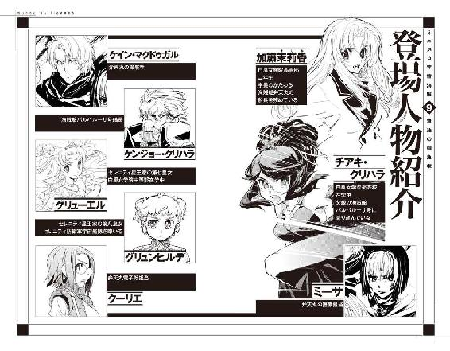
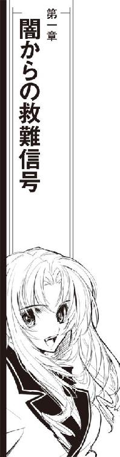
茉莉香が最初にその報を聞いた時、弁天丸は海明星への帰還航路の途中だった。
定時連絡にはちょっと早いハロルド・ロイド保険組合からの呼び出しで、担当のショウは弁天丸が通常勤務を問題なくこなして何事もなく無事に航行中であることを持って回った言い方で確認してから、本題を切り出した。
「こっちは直接関係あるような情報じゃないが重要だ。迦陵頻伽が、行方不明になった」
「え？」
船長席の茉莉香は思わず通信モニターの向こうのアフロヘアを見直した。
「迦陵頻伽担当の同僚からのネタだ」
珍しく真面目な口調で、アフロヘアの怪人は言った。
「公開情報じゃないから、秘密保持はよろしく頼む」
ブリッジでヘッドホンもしていない交信がブリッジに流れているのはショウも承知しているはずである。会話に耳をそばだてているブリッジクルーを見廻して、茉莉香は通信モニターに目を戻した。
「行方不明って、どういうことです？」
『文字通りの意味だ。エリダヌス座シンクレア星系で軍相手の演習で仮想敵を演じた迦陵頻伽はその後輸送任務のためにアタカ中継点からセルーナの帝国艦隊基地に向かい、その帰りに豪華客船相手の海賊営業を行った』
「あいかわらず仕事熱心だこと」
オブザーバー席のミーサがこっそり呟いた。旧式とはいえ大型戦艦である迦陵頻伽は、巡洋艦を原型とする弁天丸よりはるかに大所帯である。乗組員も艦載機も弁天丸よりはるかに多いし、艦を運航し続けるための手間も経費も嵩む。結果として、迦陵頻伽の仕事予定は弁天丸よりもはるかにタイトである。艦体が大きい分余裕もあるので、軍需会社から艦載用新兵器や試作艦載機の運用試験を請け負うこともあるらしい。
「最後の仕事は、客船相手の海賊営業ですか？」
茉莉香は確認した。通信モニターの向こうのアフロヘアの怪人は、派手なサングラスを煌めかせて頷いた。
『仕事が終われば三六時間も前にシンクレアＤに帰ってくるはずだが、今に至るまで帰投報告も定時連絡もない。豪華客船キャンディス・ホワイトでの海賊営業が、確認できる迦陵頻伽の最後の足取りだ』
「三六時間......」
茉莉香はショウが告げた時間を繰り返した。海賊がなんらかの非常事態に陥って通信も出来ない状態になっているとすれば、しばらく連絡が取れなくなることは珍しくない。
「迦陵頻伽のこれからの予定はどうなっているんですか？」
このまま迦陵頻伽と連絡が取れなければ、保険会社がアレンジしている仕事のいくつかが弁天丸に廻ってくるかも知れない。
『シンクレアＤに帰還後、迦陵頻伽は蓬莱星機の浮きドックに入って軽整備と新型の照準システムの試験装備に入ることになっていた。乗組員には一〇八時間の上陸休暇が与えられる予定だった』
蓬莱星機は、エリダヌス座宮を中心に営業している宇宙船メーカーである。オーダーメイドでの新船の建造から整備、艤装や艦載兵器の開発製造まで手広く行っている。
「妙ですわね」
さすがの茉莉香も事態の異常さに気付いた。
「休暇を目の前にした海賊船が、休日の予定を放り出して行方不明なんて」
『そうなんだ』
ショウは滅多に見れない真剣な顔で頷いた。
『最近三年間で迦陵頻伽が予定されていた休暇を取り消した例は数えるほどしかない。最後に休暇を返上したのは前回の辺境遠征だ』
「あら」
『迦陵頻伽の海賊免許はシンクレアＤのカーン伯爵の爵位に付随しているものだから君たちみたいな行政府発行の私掠船免状より制限は緩いが、その代わり戦艦と乗組員を抱えてる大所帯だから商売を廻していくのも大変なんだ。それが母港にも保険組合にも連絡がない行方不明ってことは、かなりの事情があると思って間違いない』
ブリッジを奇妙な沈黙が支配した。今も昔も、宇宙船が行方不明になる理由の第一は沈没である。
「わかりました」
沈黙を破るように、茉莉香はことさら明るく応えた。
「探しに行く必要とか、ありますか？」
『まだその段階じゃない』
通信モニターのショウは歯を見せた。
『少なくとも、うちじゃそう判断してる。それに、迦陵頻伽を探そうにも捜索範囲が広すぎる。豪華客船キャンディス・ホワイトとの最後の接触点からシンクレアＤまでの直線軌道上ってのが一番確率が高いが、それにしたって十数光年、なんか理由があって遠回りしたり身を隠したりしてるとなれば探し先はもっとでかくなる。いかに弁天丸でも、伯爵がその気になって行方をくらませてるとすれば簡単には見つけ出せまい？』
「そうですね」
茉莉香は笑って頷いた。
「解りました。もしなにかお手伝いできることがあれば、すぐに連絡下さい」
『当てにしてるぜ。行方不明になる時には連絡くれよ』
通信モニターから片手を上げて、ショウの顔が消えた。
茉莉香は、保険組合との通信に耳をそばだてていたブリッジクルー一同の顔を見廻した。すでに百眼、クーリエは猛然とキーボードとコントロール・パネルを叩いて情報の収集を開始している。
「ええと......」
茉莉香は口を開いた。
「どうすればいいと思う？」
「迦陵頻伽がどうなったと思う、じゃなくて、どうすればいいかと思うって訊くなんて」
オブザーバー席のミーサが声を掛けた。
「ずいぶんいい質問するようになったじゃない」
「そりゃあ、だって、迦陵頻伽の消息だって気になるけど、ショウさんがああ言ってる以上はここでいくら話し合っても推測にしかならないでしょ。でも、この状態でやらなきゃならないことがあるとしたら、そっちの方が優先だろうから」
「エリダヌス座宮シンクレア星系周辺での最近の航路状況だ」
百眼が、ブリッジのメインスクリーンにシンクレア星系を中心とした半径二五光年ほどの航路図を映し出した。
「エリダヌス座宮ってったら鯨座宮よりはよっぽど航路整備もしっかりしてるからなあ、最近は原因不明の行方不明なんてほとんど起きてないぜ」
戦時中ならともかく、平時に外宇宙を航行している宇宙船が消息を絶つことはあまりない。安全な航行のために航路帯は整備され、宇宙船はトランスポンダーを発信して現在位置を通報し続ける。通常通信で発信されたトランスポンダーは光速で広がり続けるから、充分な受信設備さえあれば航行後何年経っても追跡が可能だし、超光速機関を併用すればトランスポンダーが切れるその瞬間まで追跡が可能である。
通常空間を航行している宇宙船が蒸発するように雲散霧消することはほとんどない。航行の安全のために宇宙船の機構は何重にも確実化されているし、たとえ乗組員や推進力が失われても宇宙船は物理法則に従って等速直線運動を続ける。
恒星にでも飛び込まない限り頑丈な宇宙船が竜骨も残さず蒸発することはほとんどないし、恒星から離れた外宇宙空間を飛び続ける限りは構造材の経年劣化や風化も無視できる程度でしかない。
現実問題として行方不明になった宇宙船がそのまま置いておかれるのは、調査のためのコストが宇宙船そのものを上回った時である。無人運行される資源輸送船やコンテナ船、個人所有の自家用宇宙船が行方不明になり、調査依頼も保険請求も行われない場合はそのまま放っておかれることが多い。結果として、数百年、数千年も経った漂流宇宙船が再発見されることもある。
「迦陵頻伽ってったら旧式だけど大型戦艦よ？」
シンクレア星系周辺の最近の行方不明リストはすっきりしたものである。
「そんな簡単に行方不明になれるもの？」
「船長がその気になれば、宇宙船一隻行方不明になるのは簡単だぜ」
メインスクリーンを見上げた百眼は、頭の後ろで手を組んだ。
「管制局に届け出も出さずに超光速跳躍すれば一発だ。どっかでモニターでもされてない限り、まず追跡されない。だが、そっちにその気がない宇宙船を行方不明にさせようと思ったらこいつは大変だ。簡単には行かない」
「宇宙船を行方不明にさせるって......」
茉莉香は不穏なものを感じて百眼の言葉を繰り返した。
「それってつまり......」
突然、船長席に超光速通信の呼び出し音が鳴った。
「はい、はい」
茉莉香はさっきまでハロルド・ロイド保険組合の住所が表示されていた通信パネルに目を落とした。
「バルバルーサから!?」
弁天丸船長である加藤茉莉香を名指しでの指名通信、発信者がチアキ・クリハラであることを一目で読み取って、茉莉香は厳重な暗号化が施されている超光速通信を接続した。特有のレインボーノイズのあと、通信モニターに作業服姿のチアキが現われた。
『こちら海賊船バルバルーサ、チアキ・クリハラ。まだ無事みたいね？』
「チアキちゃん！」
茉莉香は通信モニターに手を振った。
「こちら海賊船弁天丸、船長の加藤茉莉香、元気だった？」
『船長が通信相手をチアキちゃんとか呼ぶんじゃない！』
チアキはモニターの向こうから茉莉香を睨み付けた。
「バルバルーサから通信くれたって事はそっちも無事ってことね？」
チアキは難しい顔で頷いた。
『てことは、迦陵頻伽の件はそっちも聞いてるのね』
「迦陵頻伽の行方不明、なにか知ってるの？」
『ううん』
チアキは通信モニターの中で首を振った。
『親父も保険組合からの知らされたばっかりだから、たぶん持ってる情報はそっちと同じ。呼び出したのは別件よ。弁天丸には、海賊免許買い上げの打診は来た？』
「え？」
チアキの言葉を理解出来ずに、茉莉香は通信モニターを見直した。
「海賊免許の、買い上げ？」
『そっちにはまだか』
難しい顔のまま、チアキは頷いた。
『核恒星系の商社の代理人って名乗る筋から、そういう打診があったらしいのよ。バルバルーサ本体は買い上げるし乗組員全員の再就職先も保証するから、海賊免許を売る気はないか、って』
「海賊免許って......」
茉莉香は考えながら言った。
「売ったり買ったり出来るようなものなの？」
『行政府発行の海賊免許、うちの場合は海森星発行の私掠船免状だけど、免状単体での売り買いは当事者の同意さえあれば不可能じゃない。でも、もし私掠船免状を行使して海賊業をやろうと思ったら、バルバルーサと海賊免状を受けた船長が必要になる。それくらいは知ってるでしょ？』
「うん......」
なにか厄介な話がはじまる予感を覚えながら、茉莉香は頷いた。
『詳しい条件を詰めた訳じゃないから確実じゃないけど、代理人が値段を付けて買うって言ったのはバルバルーサと海賊免状だけ。船長の身柄は要求してない、どころじゃなくて次の就職先まで用意してくれるって念の入れよう。最新鋭の戦艦級の艦長職って言ってたらしいけど、たぶん社有艦隊の雇われ艦長じゃないかって親父は言ってる』
「それってつまり、海賊免状を買いたいって言ってる代理人さんは、海賊をやる気はない、って、そういうこと？」
通信モニターの中で、チアキは笑ったようだった。
『そう。代理人が誰のどんな目的のためにこんな話持ってきたかまだ全然わかってないけれど、親父はどこかの誰かさんは海賊免許が欲しいんじゃなくて、宇宙海賊を廃業させたがってるんだろうって言ってる』
「......誰が？」
茉莉香はさらに首を傾げた。
「......なんのために？」
『さあね』
少なくともこの通信でそれについて論じる気はないらしい。チアキは肩をすくめて首を振った。
『だいたい、行政府への私掠船免状の返上ならともかく、第三者による海賊免許の買い上げなんて聞いたことないわ。ただし、先行き有望儲け確実なんて商売じゃないのも確かだから、買い取り金額次第じゃこの機会に商売替えしようなんて考える海賊が出てきてもわたしは不思議には思わないけど』
「商売が苦しいくらいでやめるなら、みんなとっくに海賊業なんてしてないでしょ？」
茉莉香の返答を聞いて、チアキは笑顔を浮かべた。
「だいたい、私掠船免状って発行元の行政府の了解なしに売り買いしたり出来るものなの？」
『その辺りの確認が必要だって、親父は交渉引き延ばししてる』
チアキは頷いた。
『断る気満々なくせに、でも相手がなに考えてるのか解らないって話を続けるつもりみたい』
「さすが、黒髭船長」
『あなただったらどうするの？』
「え？」
『だから』
チアキは、噛んで含めるようにゆっくり言った。
『もし、どこの誰とも知らない代理人が、私掠船免状を買い取りたいって言ってきたら、どうするの？』
「えー？」
大げさに返事して、茉莉香は考え込んだ。
「そおねえ。弁天丸を最新型の戦闘艦に買い換えて、乗組員のみんなにボーナス出して、それから銀河帝国に新しい海賊免許発行して貰えるくらいの袖の下払っても残るくらいの提示額なら、考えてみてもいいかも」
『まありいかああ』
「冗談よ。自由に、値段なんか付けられるわけないじゃない」
茉莉香は、弁天丸のブリッジを見廻した。
「うちの乗組員の何人かでも、金に替えられるうちに海賊免許売っ払ちまおうとか言い出したら話は別だけどさ、そうでない限りは船長として海賊免許守らなきゃいけないってことくらい、あたしだって解ってるつもり」
通信モニターの中からしばらく茉莉香を睨み付けて、チアキは目を逸らした。
『とにかく、こっちに断わりもなしに行方不明にならないでよ。事情がどうあれ、あとが大変なんだから』
「そっちもね」
茉莉香は笑って頷いた。
「黒髭船長ならあたしなんかよりよっぽど頼りになるだろうけど、事情も解らずに行方不明になったり海賊廃業なんてことになったらこっちも困っちゃうから」
『茉莉香に心配されてるなんて伝えたら、親父がどんな顔するかしら』
チアキは悪戯っぽい顔で片手を上げた。
『元気だったって伝えておくわ。じゃね』
バルバルーサからの超光速通信は、向こうから切れた。
「航法データが揃ったわ」
ルカが、船長席に最後の超光速跳躍のためのデータを廻してきた。茉莉香は、飛行計画をチェックした。
「はい、確認しました。じゃあ、帰りましょう」
たう星系内惑星軌道にタッチダウンすると同時に、弁天丸は救難信号をキャッチした。
「超光速通信だ」
航法士のルカが弁天丸の現在位置を確認するよりわずかに早く、百眼が得られたデータをメインスクリーンに出した。
「西キリア船籍の輸送船マリア・フォルテ85、正体不明の宇宙船に攻撃されて救助を求めている」
「えー!?」
茉莉香は、ルカが測定した弁天丸の現在位置と救難信号に含まれる発信元の現在位置を確認した。
「だってこれ、公海上とはいえたう星系のすぐ外じゃない？ そんなところで正体不明の宇宙船に攻撃されてるって......」
併合されたのが一世紀強ほど前と比較的最近とはいえ、たう星系は銀河帝国内に含まれる。強力な帝国艦隊が治安維持のためにばっちり目を光らせている帝国領内では、正体不明の戦力による強襲は珍しい。
「海賊じゃあるまいし、か？」
超光速通信による救難信号に含まれるデータを解き出した百眼が茉莉香の台詞を先回りした。
「マリア・フォルテ85の輸送品目はレアメタルと精密医療機器、嗜好食料品、次の寄港予定地は海明星中継ステーションだ。救難信号は星系軍にも受信されてるが、護衛艦隊が到着するにはまだちょいと時間がかかる。現時点でマリア・フォルテに一番近いのは定期航路の客船プリンセス・シャーロットと工場船興龍六九号だが、両方とも無武装の民間船だ。救難信号の発信相手が攻撃を受けてるってことで、救助に駆けつけるかどうか星系軍の判断待ち」
茉莉香は船長席のディスプレイを見た。救難信号を発信しているマリア・フォルテの現在位置及び周辺を航行中の宇宙船の現在位置がベクトルと共に立体表示されている。通常航行で駆けつけられるような近距離には宇宙船はいない。超光速航行で駆けつけられるような位置にいる宇宙船はぐんと増えるが、武装している宇宙船では弁天丸が一番近い。
救難信号を受信した宇宙船は無条件に駆けつけるのが鉄則だが、戦闘状況下ではその限りではない。
数光年に渡る空間の宇宙船の現在位置を表示する立体ディスプレイを見つめたまま、茉莉香は口を開いた。
「短距離跳躍用意、星系軍に弁天丸はマリア・フォルテ85の救難に向かうから出来るだけ早く援軍寄越すように伝えて。弁天丸、対艦戦闘用意！」
「短距離跳躍の飛行計画を管制局にも転送する」
ルカが全船にマリア・フォルテの現在位置を目標地点とする短距離跳躍の飛行計画を転送した。
「短距離跳躍準備開始！ 阿号、吽号、出力上昇！」
「対艦戦闘準備開始する」
シュニッツァーが全艦にコマンドを出す。
「このタイミングってことは、罠だってこと考えておかなきゃね」
船長席に背をもたせかけて、茉莉香は呟くように言った。
「念のために囮先行させられる？」
「いいわよお」
すでにハイピッチでコントロール・パネルを叩きはじめていたクーリエが、スティックキャンディーを銜えたまま答えた。
「もしこれが救難信号ごと弁天丸おびき寄せようなんて罠なら、タッチダウンと同時に集中砲火なんてことになりかねないもの」
「考えすぎかなあ？」
「用心に越したことはないと思うわ。なにもなければ弁天丸のトランスポンダーと反応パターンコピーした囮回収できるはずだし、なんかあれば本体が助かるんだし」
「囮を先行させて、タッチダウンの場所は囮をマリア・フォルテの現在位置に接近、弁天丸を後方、タッチダウンのタイミングは出来れば前跳躍現象が重なって見えるくらいに、こっちのタッチダウンは一五秒遅れ」
茉莉香は、ブリッジを見廻した。
「......で、なんとかなるかしら？」
「相手の攻撃目標が輸送船ではなく弁天丸だった場合、集中砲火の初弾をかわすことは出来る」
シュニッツァーが言わずもがなの展開を口にした。
「だが、そのあとは規模も解らない敵と意図も解らずに交戦しなければならない」
「だけど、輸送船も救助しなきゃならないでしょ」
茉莉香はありったけの想像出来る状況の中から可能性の高いものを順に考えている。
「正体不明の戦力の規模がわからない以上は蹴散らすなんて無理だろうし、救難信号に応じて出ていく以上はまず第一に考えなきゃならないのは輸送船の安全確保、次が時間稼ぎだろうから、タッチダウンと同時に電子妨害仕掛けての目眩ましってあたりかなあ」
「相手がその気なら、その程度の対応は想定済みだぞ」
「ああ、もちろんやばいようならすぐ逃げるってことで」
「それが一番大変だ」
シュニッツァーが平然と言った。
「危ないと思い知ったような段階では、逃げることすら難しいことが多い」
「そっか......」
戦闘の勝敗は、実戦に入る前に九割決しているという基本を思い出して、茉莉香は眉をひそめた。
「実戦が開始されてるなら、弁天丸は開いている罠の中に飛び込んでいく可能性があるってことか」
「そうだ」
シュニッツァーの肯定の声を聞いて、茉莉香は顔を上げた。
「でも、考えてたら正義の味方が駆けつけるのがどんどん遅れちゃう。囮先行、弁天丸はちょっと遅れてタッチダウン、あとは成り行きまかせの逃げ足優先で行くしかないと思う」
茉莉香はブリッジを見廻した。
「跳躍準備完了！」
三代目が威勢良く告げた。茉莉香は頷いた。
「弁天丸、行きましょう」
弁天丸は超光速空間に跳躍した。
「囮、タッチダウンする」
戦闘指揮席のシュニッツァーが告げた。
「カウントダウン、５、４、３、２、１、ゼロ！」
「来た！」
超光速で繋がれたデータ回線に送られてきた戦闘情報を、百眼は素早く読み取った。超光速空間から通常空間に復帰直後は周辺空間が荒れるから観測精度は落ちる。しかし、囮は目標空間が強電子妨害下にあるという観測データを弁天丸に送ってきた。続いて妨害電波を分析してさらに細かい観測を開始する。
「見てのとおり、降り先は艦隊戦でもやってるんじゃないかって強電子妨害だ。敵船３、あとは読めない！」
速度優先で粗く処理したデータをメインスクリーンとブリッジ各所に送る。
「民間の輸送船相手の出力じゃない。何を相手にしてやがるんだ」
「外部からの介入を嫌っての電子妨害にしても派手ね」
電子戦席のクーリエが所見を述べた。
「こんなの相手に持ちこたえてるんだとしたら、マリア・フォルテってのもただの輸送船じゃないわ」
「弁天丸、まもなくタッチダウン」
舵輪を握るケインが告げた。
「囮に攻撃は？」
茉莉香は確認した。シュニッツァーが答えた。
「ない。射撃管制用のレーダーを浴びているようにも見えない」
「タッチダウンと同時に回避機動！」
茉莉香は指示した。
「電子戦で攪乱しつつ宇宙船の配置を確認。もし艦砲射撃が必要なら、シュニッツァー、射っちゃって」
「了解した」
「タッチダウンする！」
空間を押しのける衝撃波を八方に拡散させながら、弁天丸は通常空間に復帰した。わずかに距離を置いて先にタッチダウンした囮が感知していたのと同じ強力な電子妨害が乱れた空間ごと弁天丸に襲いかかる。
「あらよーっと！」
現在位置も空間状況も確認しないまま、ケインは通常空間に復帰したばかりの弁天丸に横スライドを与えてドリフトさせた。
「来た来た！」
クーリエが声を上げた。
「三方向から、妨害電波の狙い撃ち！ こりゃあ、先にタッチダウンしたのは囮って読まれてたわねえ」
「同じく三方向から、射撃管制レーダー確認」
シュニッツァーが、戦況ディスプレイのてんで離れた位置に三隻分の敵艦マークをアルファ、ブラボー、チャーリーの仮称と共にプロットした。
「所属どころか艦型も解らないか」
直線軌道に戻った弁天丸はランダム加速で回避機動を続行中である。茉莉香は、艦隊を組むというには離れすぎている三隻の現在位置を確認した。敵艦の方向は判明しているが、距離は不正確なままである。
戦況ディスプレイ上に、四隻目のシルエットが敵味方未識別のマークをプロットさせた。
「救難信号を発信中のマリア・フォルテ85を捉えた」
百眼が告げた。
「二隻目、ブラボー（仮）のそばだ。高赤外線反応、機関をやられたかオーバーヒートしてるんじゃないかこりゃ」
「第一目標、二隻目ブラボー」
見えている残り二隻の敵艦、アルファとチャーリーとの位置関係を読みながら、茉莉香は口にした。
「マリア・フォルテに最接近してるブラボーを引きはがせる？ っていうか、マリア・フォルテ、まだ捕まってないの？」
「少なくとも本体は健在、ブラボーに触られそうなくらい接近してるがドッキングはしてない」
「交渉の余地は、と」
茉莉香は、見えている三隻、アルファ、ブラボー、チャーリーとマリア・フォルテの現在位置を確認した。ブラボーがマリア・フォルテに接触寸前、作戦目標を達成中であり、残り二隻も電子妨害で自分の位置を秘匿しながらこちらへの攻撃体勢を整えつつある。
「聞く耳なんか持ってなさそうだけど、免状持ちの海賊としては手順踏まなきゃあとでいろいろまずいのよね。共通チャンネルオープン、こっちも狙い撃ち出来るように敵艦の位置を特定しておいて」
「射撃管制用のレーダーまで通さないって勢いの妨害電波発射しといて、たとえこっちの通信を聞いても応答があるとは思えないが、あいよ」
非常時のみの使用を許される共通チャンネルを設定して、百眼は船長席に回線を廻した。
咳払いして、茉莉香は通信パネルをオンにした。
「こちら弁天丸。海賊船弁天丸の船長、加藤茉莉香です。輸送船マリア・フォルテを攻撃中の宇宙船、今すぐ降服すれば撃沈せずに拿捕して上げます。すみやかに戦闘を中止しなさい！」
返答を待つ。スピーカーは、フィルターを通り抜けてくるかすかな雑音しか流さない。
「義理は果たしたわね」
茉莉香は、ブリッジを見廻した。ヘッドホンを耳に当てて通信をモニターしている百眼は動かない。
「こっちも繰り返して待って上げるほどお人好しじゃないの。弁天丸戦闘開始、目標、ブラボー！」
「目標ブラボー！ 弁天丸最大戦速！」
「機関最大出力、無茶すんじゃねーぞ！」
「主砲、エネルギー充填開始する」
シュニッツァーが告げた。
「ブラボーがマリア・フォルテに接触する前に威嚇なりとも射っておきたい」
「回避機動を邪魔しない範囲で頼む」
ケインは弁天丸の操舵輪を景気よく廻している。戦闘中にもっともエネルギー消費が激しいのは艦砲射撃、次に戦闘機動、電子戦である。しかし、電子戦は戦闘中は常時続行しなければならず、戦闘機動は射撃機会よりはるかに多い。
離れている残り二隻の宇宙船には申し訳程度の電子妨害を掛けるだけで、弁天丸は救難信号を発し続ける輸送船の至近距離にまで接近しているブラボーめがけて突撃を開始した。
「敵艦識別！ デアフリンゲ級機動巡洋艦、だいぶ改造してるらしいがパターン一致した！」
「対艦戦闘専門の新鋭艦じゃない」
簡単な説明付きで映し出されたカタログの艦型図を見て、茉莉香は呆れたような声を出した。大口径の艦載砲に集中装甲、機動戦のための強力な機関はセオリー通りの設計で、細く絞られた艦型は正面からではいかにも射ち抜けそうにない。
「帝国艦隊にも配備されてるような高価な艦よ、所属は解らない？」
「トランスポンダーは取れない。艦同士の通信も今のところ傍受できない」
百眼が矢継ぎ早に報告を飛ばす。
「アルファ、チャーリーが動き出した。こちらに接近中。こっちのレーダーだけじゃなくて救難信号まで紛れ飛ばすような集中妨害掛けてやがる。こんな強力な電子妨害掛けてたら、通常通信の救難信号は飛ばせても電波異常であっというまに機動艦隊がぶっ飛んでくるぞ」
「でも、超光速通信までは止められない」
クーリエがぼそっと言った。
「戦力揃えて目的の輸送船を襲いに来たにしちゃやることが杜撰ね。まず最初に超光速通信を潰さない限り、こんなところじゃおっつけ救援隊が飛んでくるくらい解ってるでしょうに」
「射ってきた！」
百眼が声を上げた。
「見えてる!!」
ブラボーのエネルギー反応が急上昇したことから、艦砲射撃体制に入ったのは解っていた。射撃管制レーダーの濃度からブラボーの照準を読んだケインは、弁天丸を横ドリフトさせて射線をはずす。
集束された徹甲用のビームが六条、宇宙空間を切り裂いた。
「出力、意外に低い」
シュニッツァーは、近距離を通過したビームのデータを読んでいる。
「こちらの戦闘機動を制限するための威嚇だ。続けてくるぞ！」
充填率を上げればビームの破壊力も増すが、次の斉射まで時間がかかる。しかし、充填率を下げれば破壊力が減る代わりに連射が可能になる。
「撫でさせても大丈夫か？」
弁天丸を回避軌道させながらケインが訊いた。シュニッツァーは計測された敵艦砲射撃のデータを転送した。
「対戦艦用の大口径砲だ。充填率は低くても集束率が高いから、薄いところに当たったら穴が開く」
「おっかねー」
ケインは回避機動の片手間に三方向から浴びせかけられる射撃管制レーダーの濃淡を読んだ。
「敵は最低三隻、主砲もでかいし装甲も厚い。弁天丸で攻撃したところで大した戦果は望めない」
シュニッツァーは冷静に戦況を要約してみせた。
「だから、今弁天丸で出来るのはマリア・フォルテへ強制ドッキングをかけているブラボーを邪魔して星系軍、あるいは帝国艦隊の到着まで時間を稼ぐことだけだ」
「でもそれは、襲撃側だって先刻ご承知よねえ」
茉莉香は難しい顔で輸送船に急速接近している機動巡洋艦の動きを見ている。
「時間をかければかけるだけ、援軍が到着する確率が上がっていくのに、三隻とも妙に落ち着いてない？」
「おそらく、全て読まれている」
「え!?」
茉莉香はぎょっとして戦闘指揮席のシュニッツァーの横顔を見た。
「デアフリンゲ級の装甲は弁天丸のクラス40の主砲を最大充填しても抜くのは難しい。可能性があるとすれば接近しての一点斉射だが、近付けば近付くだけブラボーの射撃精度は上がる。そして、ブラボーがマリア・フォルテに近付くほどうちの誤射の可能性が上がる」
「......敵が撃てない方向から接近しましょう」
ケインはちらりと船長席の茉莉香の顔を見た。
「了解！ マリア・フォルテを楯に廻り込む!!」
「対電子妨害もうすぐ解除出来るわ」
クーリエはハイピッチでキーボードを叩いている。
「今のまんまじゃ敵影なんかぼやけすぎてて命中なんか出来ないけれど、これだけいろいろ浴びせてくれれば向こうの装備もパターンも読めるんだから」
「射撃チャンスは一度だけだ」
シュニッツァーは射撃時刻を推測してそれに合わせたゆっくり目の主砲へのエネルギー充填を開始している。
「その一度でブラボーにマリア・フォルテとの接触をあきらめさせるしかない」
「すれ違いざまの反航戦一回、こっちの斉射は向こうを避けながらになると思う」
茉莉香もこれから先の敵艦と弁天丸の動き方を頭の中に組み立てている。
「ブラボーに一発喰らわせたら、成功でも失敗でもあとはとにかく逃げる！ 弁天丸一隻でやる気満々の機動巡洋艦三隻も相手になんかしてられないんだから」
「第二斉射、来る！」
ルカが告げた。弁天丸も戦闘機動しながら三方の敵船に最大出力で妨害電波を浴びせ、偽データを送り込み、艦影をぼやけさせて現在位置を欺瞞しているが、それでもアルファとチャーリーが同時に艦砲斉射を行った。
弁天丸の電子妨害が効いていると判断したケインは、今回は弁天丸を動かさなかった。二方向から放たれた六条ずつの徹甲ビームが緩く拡がりながら宇宙空間を切り裂いた。
「やるねえ」
百眼は至近距離を通り抜けたビームの情報を転送した。
「こんどの斉射も大した充填率じゃない。命中を期待しての斉射じゃないって事は、こっちの様子見と行動制限が目的だろう。時間をかければかけるだけ弁天丸が不利になるぜ」
「わかってるよ」
弁天丸を回頭させながら、ケインが言った。
「だからってまっすぐマリア・フォルテに接近したらこっちの軌道だって向こうに簡単に読まれちまう。一気に行くぞ！」
マリア・フォルテを挟んだブラボーの位置が重なった瞬間を狙って、ケインは弁天丸を大加速させた。
「第三斉射、来る」
「さすが、充填ろくにしてないと斉射も早いな」
ケインは舵輪を廻して弁天丸の針路と姿勢を微修正した。
「ブラボーが射撃位置に出てこない限りは問題ない！ 目眩ましと目潰しは任せたぜ!!」
「任せときー」
「了解」
クーリエとシュニッツァーが同時に応えた。三斉射目の徹甲ビームが二方向から弁天丸に襲いかかる。ケインはこんども最小限の動きで射線を躱した。
「さっきより近いぜ」
百眼がビームのデータを各方面に廻す。
「充填率変わらず。だが、勘のいい奴ならそろそろ充填率上げてくる頃だ」
「こっちがマリア・フォルテを楯にしてる限り、ブラボーからの射撃データはあんまり当てにならないはず」
ブラボーというよりもマリア・フォルテに対して突撃を開始したような弁天丸の未来軌道をディスプレイ上に見ながら、茉莉香は努めて静かに言った。
「ブラボーはマリア・フォルテに強制ドッキングのため接近してる最中だから、ドッキングを諦めない限り動けない。そして、マリア・フォルテへの最接近時にはアルファもチャーリーも誤射を考えれば射てなくなるはず。大丈夫、貨物船は救えるわ」
「主砲充填八五パーセント」
主機が産み出すエネルギーの大部分は戦闘機動と電子戦に取られている。余剰分を使っての充填状況をシュニッツァーが伝えた。
「行くぞ！」
針路をマリア・フォルテに重ねたブラボーに定めて、ケインは弁天丸を最終加速させた。
船内容積を稼がなければならない輸送船であるマリア・フォルテは機動巡洋艦であるデアフリンゲ級よりずいぶん大きい。マリア・フォルテを捕まえるために動けないブラボーの正確に反対方向に廻り込んだ弁天丸は、最低限のランダム回避をかけながら加速を緩めない。
「気を付けて！」
クーリエはマリア・フォルテの船影の向こうのブラボーに電子妨害を集中させた。
「ブラボーのエネルギー反応上がってる」
「こっちと同じタイミングでの射撃を狙ってるんだろう」
ケインは慎重に舵輪を操っている。
「接近戦なら小回りの利く弁天丸の勝ちだ」
気休めでしかないケインの言葉を聞いて、船長席の茉莉香は微笑んだ。
「主砲、発射準備完了」
シュニッツァーが伝えた。
「最接近時の予測軌道に発射タイミングと照準を合わせた。主砲発射と同時に攪乱幕を散布する」
「ブラボー動いた！」
百眼が叫んだ。
「エネルギー反応上昇！ マリア・フォルテの陰から出てくるぞ!!」
「はい、はい、それくらい対応出来ますよ」
ケインは動いたブラボーと反対の方向に弁天丸を反転させた。マリア・フォルテを挟んだ相対位置を保ったまま急接近する。
茉莉香は戦況ディスプレイに映し出される彼我の位置関係を見つめていた。状況は瞬間の反航戦、戦闘方針は定まっているから状況の急変でもなければ船長が指示することはない。
お腹の底が痛くなるような緊張を覚えながら、茉莉香は落ち着いた笑顔を強いて浮かべたまま船長席に座っていた。ブラボーとの距離を示す数字だけが急速に減っていく。
「ブラボーのエネルギー反応急上昇！」
百眼が伝えた。
「射つぞ！」
「大丈夫、今射ったってマリア・フォルテが間にいる！」
応えながらケインは念のために予測される射線上から弁天丸の軌道を外した。
「射った！」
「なに!?」
ブラボーが充分にチャージされた徹甲ビームを発射した。装甲などないに等しい輸送船を貫いたビームが六条、束になって弁天丸に襲いかかる。
あらかじめ回避軌道を取っていたおかげか、全てのビームは至近弾ながら弁天丸には命中しなかった。ケインは船体を微塵も揺るがせずに降り注ぐビームの雨を駆け抜けた。
船体の中央近くを貫かれた輸送船が鈍い高熱を吐き出す。シュニッツァーが静かに言った。
「主砲発射」
最接近点を過ぎてマリア・フォルテの陰から浮び上がったブラボーめがけ、弁天丸は最大出力まで充填した主砲を発射した。
「攪乱幕放出！」
機動巡洋艦の装甲が相手では、全弾命中しても敵艦を止めることは難しい。命中確認もせずに、シュニッツァーは敵のビーム攻撃をレーダーともども攪乱させると同時に自分の位置を欺瞞するための攪乱幕の放出を開始した。
「全速離脱！」
攪乱幕を放出してはいても、最接近直後の敵艦に追い撃ちされる可能性は高い。ケインは当初の予定通り弁天丸に一目散に逃げる軌道を取らせる。
「射ったって......」
こちらから攪乱幕を放出しているから、得られる情報はどんどん精度が低くなる。茉莉香は、戦況ディスプレイの状況を巻き戻してブラボーの主砲斉射を再生した。ブラボーはすぐ目の前に輸送船がいるのも気にしないように弁天丸めがけて主砲を発射した。
「どういうこと？ マリア・フォルテ、大丈夫？」
「対装甲用の徹甲ビームだからな」
百眼が最後に得たブラボーの主砲斉射のデータを廻してきた。
「輸送船の外殻なんぞ紙みたいに貫いただろう。装甲のない民間船やるなら集束率落としたビーム当てる方が効率がいいんだが、これだけ収束させたビームなら運が良ければ穴が開いただけで済むかも」
弁天丸のバックセンサーが、分厚く放出した攪乱幕を通してさえ簡単にキャッチ出来るような強赤外線を捉えた。
「保たなかったようだ」
百眼は事態を簡潔に要約した。
「全速逃げて！」
マリア・フォルテ85の被害状況とか要救助とか知りたいことやらなければならないことが溢れてくるが、茉莉香は頭を振って叫んだ。
「戻っていったら的になるだけ、とにかく逃げて！」
「合点承知!!」
攪乱幕と電波妨害を敵にぶつけながら、弁天丸は戦闘空域から急速離脱した。出来ればすぐに超光速跳躍したいところだが、主機にそれほどの余裕はない。
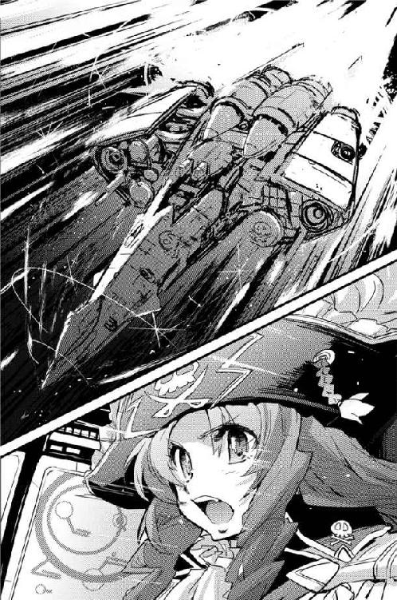
貨物船を大破させた巡洋艦が獲物を放り出して追いかけてきたらどこまで逃げ切れるかわからない。しかし、三隻の重巡洋艦は弁天丸を追跡する軌道を取らなかった。
戦闘空域から充分に離れてから、弁天丸は鯨座宮たう星系に向けて跳躍した。
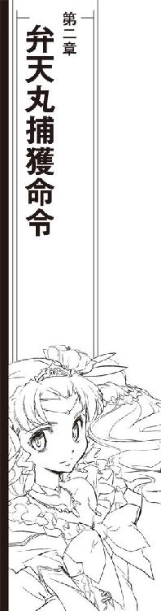
たう星系にタッチダウンすると同時に、弁天丸は星系軍護衛艦隊に連絡を取った。マリア・フォルテ85を襲っていたのが最低三隻の機動巡洋艦であること、最後にマリア・フォルテが直接攻撃を受けたことなどを伝え、最新の戦闘情報も添付する。
対艦装備の機動巡洋艦が最低三隻、ことによるとそれ以上の戦力が存在する可能性があるとなると星系軍の限られた戦力では荷が重い。茉莉香は、マリア・フォルテの救難と星系軍の掩護のために星系軍と行動を共にする用意があると弁天丸から申し出た。
星系軍は、弁天丸に協力は不要と返答した。星系軍と同時に救難要請を受けた帝国艦隊が現地に急行しているから、戦力比は心配ないとのことである。
星系軍からの最新情報を受けて、弁天丸は、船長である加藤茉莉香を帰宅させるために海明星に飛んだ。
星系軍護衛艦隊は弁天丸と入れ違うようなタイミングでマリア・フォルテ85が救難信号を発していた空域に跳んだ。ほとんど同じタイミングで帝国艦隊所属の機動艦隊も到着したが、救援艦隊が発見したのは大破した輸送船だけだった。襲撃側と見られる機動巡洋艦はすでに退却しており、その正体は確認出来なかったという。
緊急用の脱出カプセルと、閉鎖された居住ブロックは無事回収された。そこまで聞いて、茉莉香は新奥浜宇宙港に降りるシャトルで弁天丸を離れた。
翌朝。
少々寝不足気味ながら早めに目を覚ましてしまった茉莉香は、まず弁天丸からの緊急連絡を確認し、ネット上のニュースをチェックした。
前日、たう星系近傍で正体不明の戦力に襲われたマリア・フォルテ85に関するニュースは発見出来なかった。弁天丸からの定時連絡は異常なし、連絡すべき特記事項なし。
母親との朝食後、茉莉香はいつもより早めに自転車で家を出た。
白凰女学院は敷地内に中等部と高等部の寮があり、近隣都市からの通学も受け入れている。
新奥浜市郊外に立地する白凰女学院は都市部からは離れていることもあり、数は少ないが近郊のベッドタウンからの徒歩通学者もいる。
新奥浜市及び近郊の衛星都市からの通学は高速鉄道をはじめとする公共交通機関であり、最寄り駅を使う地下鉄通学者が最も多い。
地下鉄駅から地上に出て中等部や高等部の正門に向かう生徒の群れを追い越し、茉莉香は高等部の自転車通学者が一番よく使う通用門から自転車を乗り入れようとした。開け放されているように見える通用門は生徒及び関係者のＩＤを無線でチェックする保安ゲートになっていて、未登録の不審者や自動車、自転車で乗り入れようとすれば即座に保安警備に連絡が行く。
煉瓦敷きの自転車専用道で生徒専用の駐輪場の指定スペースに自転車を駐める。ハンドルポストに固定しておいた学生鞄を抜いて、茉莉香は高等部の玄関に向かった。
自宅から、あるいは寮から登校してきた制服姿の高等部生徒たちが広い玄関に吸い込まれていく。
「おっはよー！」
声を掛けられて、茉莉香は遠藤マミに手を上げた。
「おはよ」
「今朝は早いね、昨日お仕事だったんじゃないの？」
「うん、いつもの営業のあと、ちょっとしたごたごたが」
適当に説明しながらマミと肩を並べて玄関に入った茉莉香は、奥に立つ黒い人影に気付いた。
「え？」
「ブラックばばあだ！」
マミが小声で叫んだ。長身を黒衣に包んだ眼光鋭い教頭は、その出で立ちからブラックばばあと呼び習わされている。
「どうしたんだろ？」
玄関から入ってくる生徒たちひとり一人の顔を見ながら挨拶を返している教頭を見て、エミは首を傾げた。
「抜き打ち検査？ んなわけないよねえ？」
少なくともマミや茉莉香が中等部に入学して以降、持ち物検査や服装検査が行われたことはない。両腕を組んで玄関を入ってくる生徒たちを見守る教頭も、なにか検査しているようには見えない。
他の生徒たちと同じように挨拶して、茉莉香は教頭の前を通り過ぎようとした。
「おはようございまーす」
「加藤茉莉香さん？」
いきなり名前を呼ばれて、行きかけた茉莉香はあわてて学生鞄を後ろ手に持ち直してくるりと教頭に振り向いた。
「は、はい!?」
軍の情報部出身だという噂のある教頭は茉莉香の顔を見て頷いた。
「おはようございます、加藤茉莉香さん。校長先生がお呼びです、校長室に来て下さい」
「あ、はい」
言われて、教頭の顔を見直した茉莉香はとなりのマミの顔を見た。
「今ですか？」
教頭は頷いた。
「今すぐです。校長先生がお待ちです」
「はい、わかりました。すぐ行きます」
「待っていますよ」
そのためだけにいたらしい教頭は、登校してきた生徒でいっぱいの玄関からさっさと去っていった。
「えーと」
登校と同時に校長に呼び出されるような不祥事が自分の最近の行動にあったかどうか考えながら、茉莉香は辺りを見廻した。
「どうしたんだろうねえ？」
マミは首を傾げながら、自分の鞄を左手に持ちかえて右手を茉莉香に差し出した。
「はい、鞄。教室に持っていってあげる」
「ありがと、よろしく」
階上の教室に行くマミに学生鞄を預け、茉莉香は走り出した。
校長室は高等部旧校舎の一階にある。しっくいの白壁に高い天井が木造の凝ったアーチ構造で支えられている広い廊下を歩いて、茉莉香は校長室に向かった。
最後に校長室を訪れたのは、茉莉香が弁天丸の船長襲名を決めたあとのことだった。海明星にある関係各省庁への書類提出と挨拶回りのあと、公式発行された新しい私掠船免状を持って当時保健医として白凰女学院の職員名簿に名を連ねていたミーサとともに行ったのが最後である。
久しぶりに見る校長室の観音開きのドアは、よく見るとレリーフを施された木材に装甲がサンドイッチしてある複合構造であることに茉莉香は気付いた。ガーゴイルが轡を銜えているような古風な重いノッカーを叩く。
「どうぞ」
中から声が聞こえた。茉莉香は、銀色に磨かれた機械式のレバーを押し下げて、校長室のドアを開いた。
校長室は、かつて白凰女学院が総督府だったころには総督その人の執務室だったという。奥に大きなデスクがあり、手前に小規模なパーティーでも開けそうな応接セットが置かれ、壁には白凰女学院の歴史を示す遺物や古い書籍が並ぶ天井まで続く本棚が移動梯子とともにある。
教頭のブラックばばあに対して白の魔女と呼ばれる校長は、シンプルな情報端末が置かれているだけの巨大なデスクの向こうから立ち上がったところだった。
「待っていましたよ、加藤茉莉香さん」
「二年へ組の加藤茉莉香です」
茉莉香は校長室に入って後ろ手に重い大きなドアを閉じた。校長と、その横に立つ黒い教頭に一礼した茉莉香は顔を上げて言い直した。
「......弁天丸船長の、加藤茉莉香です。そっちの方の話、ですか？」
「先ほど、星系軍から本校に緊急の連絡がありました」
白い校長は、デスクの上の情報端末を指した。ディスプレイ上にどんな情報が映し出されているのか、離れて立っている茉莉香には見えない。
「本校の生徒である加藤茉莉香の身柄を大至急確保されたし」
茉莉香は目を剥いた。全ての事情を承知しているように、校長は頷いた。
「今、あなたのＩＤは本校のシステムから切り離されています。どういう意味か、解りますね？」
生徒のＩＤは生徒手帳に組み込まれた無線システムで管理されている。学内にいるかいないか、学内のどこにいるかはすぐに解る。個人情報に関わることもあるからデータが外部に解放されることはないが、相手が星系軍ともなるとどこまで学院の独立が保証されるかどうかは解らない。
生徒のＩＤが白凰女学院のシステムから切り離されているということは、システムがＩＤを認識していないことを意味する。
「あたしは、まだ学校に来ていないことになっている？」
精一杯頭を回転させ、先の先を読むように努力しながら茉莉香はなんとか答えた。
「そういう、ことですか？」
「そういう、ことです」
穏やかな笑みを浮かべたまま、校長は頷いた。
「あなたが今日、白凰女学院に来たことは、朝の出席を取るまでは解りません。これからどうするべきか、解りますね？」
星系軍から身柄確保を要請されている生徒に、保安システムからのＩＤの切り離しを伝える。茉莉香は、はっとその意味に気付いて勢いよく頭を下げた。
「解りました。校長先生と教頭先生のお心遣いに感謝します！」
「よろしい」
微笑んだまま、校長は頷いた。
「では、行きなさい。お友達が待っていますよ」
校長の言葉の意味を考えながら、茉莉香はもう一度一礼した。
「失礼します！」
丁寧に校長室から出て、出来るだけ音をさせないようにドアを閉じる。
「茉莉香さん！」
「グリューエル!?」
茉莉香は、校長室の外で待っていた中等部の制服姿のグリューエルの顔を見直した。
「おはよ、どうしたのそんな追い詰められた顔して？」
校長室のドアを見て、グリューエルは素早く茉莉香に目を戻した。
「弁天丸に大至急の依頼です。わたくしを、セレニティ星系に連れて行って下さい」
「ええと、大急ぎ？」
グリューエルが頷くのを見て、茉莉香は歩き出した。
「だったら、セレニティの護衛艦隊に迎え頼んだ方が早いんじゃない？」
「護衛艦隊にはすでに迎えを頼んであります」
グリューエルはすぐに歩き出した茉莉香の前に出た。
「どうぞ、ご一緒に。新奥浜宇宙港までは車を用意してあります」
「いいけど、えーと」
ちょっと考えて、茉莉香はグリューエルに対する秘密を保つ努力をあっさり放棄した。
「あたし今、星系軍に追われてる身の上らしいんだけど、それでもいい？」
「あら？」
グリューエルは今初めてそれを聞いたような驚いた顔をしてみせた。
「それじゃあ、見つからないように急がなきゃなりませんわね」
教職員用の正面玄関に、黒塗りの長大なリムジンが停車していた。待っていた黒服の護衛にドアの開閉を任せ、グリューエルは慣れた身のこなしでリムジンのキャビンに乗り込んだ。
「ええー!?」
セレニティ王家の紋章こそ入っていないものの、海明星の官庁街でもめったに見ないような超高級リムジンに目を丸くした茉莉香はあちこちきょろきょろしながら乗ってくる。
「うっわー、車の中じゃないみたい」
「宇宙港へ」
柔らかな濃紅のビロードで内張され、磨かれた組み木細工の天井から機能的なシャンデリアまで下げられている広大なキャビンに据え付けられたＬの字型の巨大な革張りのシートに腰を下ろしたグリューエルはアームレストのインターホンに伝えた。
リムジンは、滑るように音もなく走り出した。座ってもいないのにろくな加速を感じなかった茉莉香は、グリューエルのとなりに並んで座った。
「珍しいね、グリューエルがこんな車使うなんて」
グリューエルもグリュンヒルデも、白凰学園中等部に留学、入寮するにあたり可能な限りの普通の扱いを希望した。その結果、身辺警護のための教職員の数が少しばかり増えたらしいが、それまでにも貴族や王家の子女が通っていたこともあって白凰女学院に目立った変化はない。
そして、今まではグリューエルもグリュンヒルデも専用車を白凰女学院の中で使うことはなかった。
「それだけ、非常事態なのです」
緊張した面持ちで答えて、グリューエルは視線を前方に戻した。
「おそらく、今までにないほどの」
超高速仕様のリムジンは、いったいどんな魔法を使ったのかミーサが運転するクラシックカーの平均時間よりも早く宇宙港に到着した。茉莉香も通ったことがないような立体交差を抜けたリムジンは、ターミナルビルにも寄らずにまっすぐ宇宙港の駐機場に乗り入れた。
「え、ええー!?」
「こちらです、急いで」
制服姿のグリューエルに引っ張られるような形で、茉莉香は駐機場で暖機運転中の小型シャトルに連れ込まれた。いったいどこからチャーターしたのか、所属マークはおろか登録番号もない黒い小型シャトルは乗客がキャビンのシートに収まるのを待って発進した。
軌道迎撃機並みの緊急発進であることは、窓の外を見て解った。茉莉香は、慣性制御がよく効いているおかげでほとんど動いていないようなビジネス仕様のキャビンの大きなシートに埋まっているグリューエルを見た。
「こんな急ぐなんて、いったいどうしたの、グリューエル？」
「解りません」
息を吐いて、それほど大きくないキャビンに内側を向くように六つ配置されたシートのバックレストから身を起こしたグリューエルはサイドボードを開いてタブレット型の通信パネルを取り出した。慣れた手付きで指を走らせ、通信回線を設定する。
「弁天丸に連絡を取ってくれますか？」
「もちろん、いいけど......」
グリューエルから手渡された通信パネルにあらかじめ設定されていた最低限の条件を見て、茉莉香は眉をひそめた。かなり厳重な暗号化がかけられた指向性通信である。よほど傍受されたくないらしい。
茉莉香は、船長コードを使って弁天丸を呼び出した。
『おう船長、いいタイミングだ』
音声だけの通信に、すぐに百眼が出た。
『こっちから呼び出ししようかと思ってたところだ。弁天丸に向かってるとは手回しがいいねえ』
「ええと」
ちらりとグリューエルの心配そうな顔を見て、茉莉香は言った。
「あたしじゃなくて、グリューエルからの依頼なの。セレニティ星系、青の星に大至急跳んでくれって」
『おほ？』
百眼の返事に驚きが混じる。
『そりゃ大丈夫だが、セレニティでもなんか起きてるのかい？』
「そうなの？」
目顔で訊いた茉莉香に、グリューエルは深刻な顔で首を振った。
「詳しいことはまだ解ってないみたい。こっちはええと......」
現在位置を確認しようとして通信パネルの位置情報を最新に更新した茉莉香は目を剥いた。
「もうすぐ海明星の管制圏出ちゃう!? どれだけ飛ばしてるのこのシャトル!?」
『ああこれか、こりゃあ超特急だ。これなら思ったより早く合流出来るな。接触ポイントにリクエストはあるか？』
顔を見た茉莉香に、グリューエルは答えた。
「出来るだけ早くお願いします」
「時間最優先で、出来るだけ早くって」
『わかった。管制圏を出れば速度制限もなんにもなしだ、接触ポイントの座標を送る』
「地上からこんなに早く宇宙に出てこれるものなのね」
管制圏のみならず海明星の重力圏からも出るほど離れた空域で弁天丸に乗り込んだ茉莉香は、離れていく小型シャトルを格納デッキの舷窓から見送った。青い海明星の光が、驚くほど遠い。
『あーブリッジより船長』
格納デッキのスピーカーから百眼の声が流れ出した。
『こちらブリッジ、加藤茉莉香船長、急いでブリッジに上がってきてくれ』
「急ぎましょう」
まるで事情を知っているように、グリューエルは先に立って通路に駆け出した。
『保険組合から連絡が入った。エージェントが無線の向こうで待ってる。繰り返す、加藤船長は大至急ブリッジに上がってくるように』
「校長室の次はブリッジか」
もとより返答を期待するような呼び出しではない。茉莉香はすっかり弁天丸の構造に慣れてしまったグリューエルを追いかけて走り出した。
船内を移動しながら、茉莉香は弁天丸が戦闘状態のような緊張に包まれていることに気付いた。通常航行中なら通路で何人もの乗組員とすれ違ったり挨拶したりするものなのだが、全員が配置に付いているように誰の姿も見えない。
グリューエルに続いてブリッジに足を踏み入れて、茉莉香は感じていた緊張感が錯覚でないことを知った。ブリッジクルー全員が席に着いている。オブザーバー席のミーサが振り向いて立ち上がった。
「通信は繋がってるわ」
ミーサは、一段高くなっている船長席を指した。船長席に上がりながら茉莉香はミーサに訊いた。
「船長服に着替えなくて大丈夫？」
「海賊業務じゃないからいいわ。それより時間優先」
「はいはい」
船長席に収まって、茉莉香は通信パネルを確認した。ハロルド・ロイド保険組合から、いつものクラスⅡではなく最高強度のクラスⅢの暗号通信が設定されている。
船長席の正面に廻ったグリューエルが、心配そうに茉莉香を見上げている。目を閉じて一度深呼吸してから、茉莉香は通信回線を繋いだ。
「お待たせしました。弁天丸船長、加藤茉莉香です」
『よう、この通信に出てきてくれてなによりだ』
通信モニターにアフロヘアの怪人が現れた。
『ということはつまり、弁天丸はまだ海賊船としての独立を保っている、ということだな。結構けっこう』
「なんか、よく訳の解らないことにはなってるみたいですけど」
茉莉香は適当に話を合わせて笑った。通信モニターの中で、ショウは派手なサングラス越しに茉莉香を見た。
『本題に入ろう。悪いニュースと、もっと悪いニュースと、最悪のニュースがある』
常にないショウの切り出しに、茉莉香はなんでもなさそうな顔で頷いた。
「いつものことじゃないですか。どうしたんです？」
ショウは歯を見せた。
『悪いニュースから行こう。マリア・フォルテ85の被害調査の暫定報告が出た。マリア・フォルテは警告なしに攻撃を受けて大破、鯨座宮たう星系軍と銀河帝国艦隊に救助された』
事後の報告までは関係者として茉莉香も聞いていた。
「知っています。最初にマリア・フォルテの救助に駆けつけたのは弁天丸ですから」
『マリア・フォルテの航行記録と船員は、無警告の攻撃を行ったのは弁天丸だと主張している』
「なんですってえ!?」
茉莉香は声を上げた。星系軍による弁天丸への救助要請は記録されているはずだし、現地での弁天丸の戦闘記録は星系軍に無加工のまま渡されている。同じデータはハロルド・ロイド保険組合にも送られており、ショウも時系列順の出来事は把握しているはずだった。
「弁天丸は救助要請に駆けつけた先で所属不明の巡洋艦と戦闘したんです！ 会ったこともない輸送艦を攻撃する理由なんかありません!!」
ショウは通信モニターの向こうで手を振った。
『慌てるな。先はまだまだ長いぞ。管制局に残されている航路記録、マリア・フォルテのデータ、弁天丸から提供された戦闘データから、星系軍と帝国艦隊は弁天丸が輸送船を誤認、攻撃した可能性が高いと結論した』
ショウの言葉を信じられずに、茉莉香は弁天丸のブリッジに目を走らせた。位置に着いているブリッジクルーの全員が、船長席の茉莉香を見ている。
一番近くから船長席を見上げていたグリューエルの心配そうな顔を見て、茉莉香は笑みを浮かべてみせた。出来るだけ静かに息をして、通信モニターに向き直る。
「それは事実じゃありません。迷惑ですね。それで、もっと悪いニュースってなんですか？」
『いいぞ、その意気だ。もっと悪いニュースは、海明星行政府が、弁天丸の私掠船免状を停止したってことだ』
茉莉香は出来るだけ冷静にショウの言葉の意味を考えた。弁天丸の私掠船免状を停止した海明星行政府は、現在位置からはるか離れた場所にある。理性的に対処する時間はいくらでもある。
『事実関係が判明するまでの時限措置だって但し書きはついてるがな。つまり、今の君たちはただの宇宙船、公的免状に守られた海賊船じゃない』
「星系政府にしちゃやることが早いわね」
ミーサの呟きが耳に入った。出来るだけ早く頭を働かせようと思いながら茉莉香は口を開いた。
「まだ、最悪のニュースが残ってますね？」
『おお、それだ』
通信モニターの向こうで、ショウは満面の笑みを浮かべた。
『私掠船免状停止を待っていたようなタイミングで、弁天丸は帝国艦隊から海賊船指定手配を受けた。つまり、君たちは私掠船から正真正銘の海賊にクラスチェンジしたってことだ。近所の星系軍、及び帝国艦隊は今の君たちを警告なしに攻撃、撃沈しても法的責任に問われない』
ブリッジに奇妙な沈黙が満ちていた。茉莉香はもう一度深呼吸をした。
「貴重な情報提供に感謝します。いくつか質問があるんですけれど、いいですか？」
『おう、もちろんだ。保険会社はそのために顧客と通信回線を維持してるんだ』
「冗談とか、サプライズパーティーの準備とか、そんなんじゃないんですよね？」
ショウは深刻な顔で首を振った。
『そういうことに出来ればこっちの仕事もちったあ楽になるんだが、まず第一に弁天丸の乗組員諸君を引っ掛けるにはやり方がスマートじゃない。第二に、うちの保険組合が仕掛けるにしちゃあ冗談が大袈裟すぎる。帝国艦隊からの海賊指定は受け狙いや冗談で受けられるようなもんじゃない。そして、これが一番の理由だが』
ショウは通信モニターに身を乗り出した。
『冗談にしても、まったく面白くない』
「そうですね。クーリエ、帝国の海賊船指定手配を確認して」
モニターから目を外さずに、茉莉香は片手で指示した。
「確認出来たら、いい記念になるわ。記録しておいて」
「了解しました」
真面目ったらしく答えて、クーリエはキーボードを叩きはじめた。
「たった今教えて頂いた情報が真実だとしたら、今の弁天丸は銀河帝国認定の海賊船です。ハロルド・ロイド保険組合が弁天丸に情報提供することは、海賊に与する行為にはなりませんか？」
『自分たちのことよりこっちの心配か、大した余裕だねえ加藤茉莉香船長』
ショウは芝居がかった手付きで指先を振ってみせた。
『まず第一に、君たちとの保険契約はまだ期間中だ。明らかな契約違反が認められず、また相手からも契約の破棄や見直しの申し出がない限り、お互いの関係は続くべきだ。それとも、弁天丸はうちとの保険契約を続けたくない理由でもあるのかな？』
「とんでもない」
茉莉香は笑顔のまま首を振った。
「弁天丸は、これからもハロルド・ロイド保険組合と良好な関係を続けることを希望します。でも、ショウさん」
『こちらの心配は不要だ。これでもうちは帝国の艦隊や商社とも関係のある、由緒正しい古い保険組合なんだぜ。交渉ルートも方法もいくらでも用意してある』
ショウは茉莉香の言葉を途中で遮って続けた。
『次に、こちらの立場をもういちど説明しておこう。解ってるとは思うが、君たち相手の仕事は黒字もかつかつ、赤字決算だって珍しくない』
ショウのにやにや笑いが大きくなった。
『つまり、君たちは顧客としては優良でもないし儲けもろくなもんじゃない。にもかかわらず、保険会社が君たちとの契約を続けているのは、それがより大きな利益になるからだ』
弁天丸がハロルド・ロイド保険組合と結んでいる保険契約の金額はそれほど法外なものではない。弁天丸の維持管理業務一般を教わった時に茉莉香も見せてもらっているが、その契約金額は一般の私有船より低く、商船並みに抑えられている。
『この辺りで本物の海賊が出なくなって久しい。だが、客船を運航する船会社が保険会社と結ぶ契約には、低率とはいえ海賊に襲われた時のための保険も含まれている。こいつが馬鹿にならないんだな』
保険会社は一隻の船、ひとつの会社とだけ契約を結んでいるわけではない。何隻もの船、いくつもの会社と契約し、手広く商売するのが普通である。大きな保険になれば保険会社が数社に跨ることもあるし、契約金額が大きくなれば保険会社がリスク分散のために再保険を掛ける。その場合、関係する保険会社も保険契約の総金額もさらに増えていく。
『君たちに襲って貰う船は、みんな海賊保険も掛けている。船会社は客へのサービスとして海賊を呼び、君たちはそれにより存在を示し、我々保険会社も海賊保険の有用性を示せる。誰も損をしない関係だが、それだけじゃない。保険会社も船会社も、海賊と付き合いがあるという事実が大事なんだ』
芝居がかった仕草で、ショウは派手な指輪を嵌めた長い人差指を茉莉香に向けた。
『海賊が保持している戦力はちょっとした軍隊に匹敵する。しかも、その力は星系軍や銀河帝国といった政治体制に依存せずに独立している。宇宙空間ってのは一寸先は闇、一秒後に事態がどう転んで状況がどう変化してるかも解らない。こういう状況で、独立した戦力と付き合いがあるってことがステータスになるんだ』
「あたしたちの存在が、保険会社や船会社にとっての保険になっている、ということですね？」
茉莉香の答えにショウは満面の笑みを浮かべた。
『そういうことだ。だから、信用してくれ』
ショウはきらりと派手なサングラスをきらめかせた。
『君たちとの関係が利益になると判断する限り、ショウさんは君たちの味方だ』
「頼もしい限りです」
茉莉香は頷いた。ショウは手許のディスプレイに目をやった。
『さて、現時点での最新情報を伝えよう。たう星系の星系軍は本業が忙しいから、弁天丸の私掠船免状停止は通達されているがそれに対する作戦行動を行えるような余裕のある艦艇は今のところない。帝国第五艦隊も、弁天丸に対する海賊指定手配は発効させたが脅威判定してもろくな数字が出なかったからだろう、追跡艦隊の編成や作戦行動の予定はない。なにか他に知りたいことはあるかい？』
少し考えて、茉莉香は通信モニターに顔を上げた。
「弁天丸が提出した戦闘データはそちらにも廻ってますよね？」
『ああ、もちろんだ。昨日の戦闘直後にうちに送られたものがある』
「星系軍と帝国艦隊が、弁天丸がマリア・フォルテを攻撃したと判断するに至った戦闘データは手に入りますか？」
わずかに顎を引いて、ショウはモニター越しに茉莉香の顔を射た。
「もし、ショウさんが見たのと同じ戦闘データを星系軍や帝国艦隊が見ているのなら、弁天丸が要救助船を攻撃したなんてことにはならないはずです。なのに、弁天丸が悪役にされてるからには、そういう戦闘データがあるはずです。プロの軍隊が戦闘データの解釈を間違えるはずがありませんから、弁天丸と違う、まるっきり捏造されたかあるいは改竄された嘘の戦闘データが星系軍や帝国艦隊司令部に提出されたはずです」
『調べてみよう』
片手を上げて、ショウは受け合った。
『なにせこっちは弁天丸と契約してる保険会社、関連情報の開示要求をしても拒む理由はないはずだ』
「お願いします」
茉莉香は通信モニターに一礼した。
「こちらはこれから――」
『おおーっと、そこまでだ』
拡げた両手のひらをモニターに向けて、ショウは茉莉香の台詞を遮った。
『ハロルド・ロイド保険組合は弁天丸の無事を確認出来ればそれで充分だ。もしこれから先の弁天丸の作戦行動予定を聞いたら、帝国艦隊に聞かれた時にそれを正直に答えなきゃならなくなる。うちは君たちのこれからの営業予定を知っている。情報はそれだけで充分だ』
「了解しました」
茉莉香は頷いた。
「それじゃあ、新しい情報が入ったら連絡下さい。ハロルド・ロイド保険組合との通信チャンネルはいつでも開けておきます」
『無事な航海を』
ショウはサングラスから二本指の敬礼を放った。
『健闘を祈ってるぜ』
あとからの通信記録追跡も断ち切るようにハロルド・ロイド保険組合との超光速回線は向こうから切れた。
茉莉香は通信モニターから顔を上げた。ブリッジの全員が茉莉香を見ている。
こほんと咳払いして、茉莉香は船長席から立ち上がった。
「そういう訳で、なんか厄介なことになってるみたいだけど、弁天丸はまずはお客さんの依頼を片付けることにします。目的地、セレニティ星系青の星。グリューエル、まっすぐ青の姉に向かって大丈夫？」
セレニティ星系の古い植民星は双子星である。豊かな海とゆるやかな起伏のある自然に恵まれた大陸を持つ二つの星は青い姉、青い妹と呼ばれている。セレニティ王宮は青い姉にある。
「ヨートフには伝えてあります」
まっすぐに茉莉香の顔を見上げて、グリューエルは答えた。すらすらと座標数値を口にする。
「このポイントに飛んで下さい」
「ここでいいですか？」
口頭で伝えられた数値を入力した航法士席のルカが、指定された座標を宇宙図に表示した。セレニティ星系外惑星系内、周辺に可住惑星の軌道はないが、星系から見れば防衛圏内である。
「大丈夫です」
メインスクリーンに表示されたセレニティ星系の星図を見上げて、グリューエルは答えた。
「ヨートフって、あの侍従長さんか。なら大丈夫そうね。セレニティ星系の非常事態だそうだから、警戒は怠らずに長距離跳躍用意、準備出来次第跳びましょう」
「目的地、セレニティ星系青の星」
茉莉香の言葉を復唱したルカが航路設定を開始した。機関コントロール・パネルに向き直った三代目が超光速跳躍準備を開始する。
「そんなことだろうと思って阿号も吽号も出力は上げておいた」
「対艦戦も用意するだけしておこう」
「用事なければいいんだけど、電子戦も準備するだけはいちおー」
シュニッツァーとクーリエが対艦戦闘と電子戦闘の用意をはじめる。
「ミーサ、グリューエルにシート用意してあげて」
他に自分からの指示を待つブリッジクルーや質問がないのを確認して、茉莉香は船長席から飛び降りた。
「船長服着てくる。先のことは、それからお話ししましょう」
「タッチダウンする」
舵輪を握るケインが、超光速跳躍中の弁天丸の姿勢を微妙に調整しながら告げた。
通常空間を歪曲させ、弁天丸がセレニティ星系の外惑星系空間に出現した。超光速跳躍による周辺空間の揺動が収まらないうちにルカが現在位置の確認、百眼が周辺空間状況を確認する。
「現在位置確認」
ルカはあっというまに現在位置確認を完了させた。
「セレニティ星系、外惑星系。ほぼ指定座標通り」
「艦隊確認！」
こちらのレーダーの反射より早く入ってきたトランスポンダーとレーダー波から、百眼が声を上げた。
「マラコット級戦艦一、コーバック級護衛艦六。お馴染みセレニティ星系防衛軍宇宙艦隊だ」
「あらあら」
ほとんど反射的に宇宙艦隊が射撃管制用の高精度レーダーをこちらに向けていないのを確認して、茉莉香は戦艦隊の編成をディスプレイ上に見た。
「戦艦隊が出迎え？ いったいなにが起きてるの？」
グリューエルは緊張した顔のままセレニティ艦隊をディスプレイに見ている。
「で、そのマラコット級戦艦クイーン・セレンディピティから直接交信要請だ」
百眼は、待ち構えていたような通信要請を船長席に廻した。
「加藤茉莉香船長宛、発、グリュンヒルデ・セレニティ？」
「妹さん？」
グリューエルは、妹のグリュンヒルデともども白凰女学院中等部に留学している。茉莉香はオブザーバー席のグリューエルを見た。グリューエルは応えた。
「通信を繋いで下さい」
「はい、はい」
グリューエルの緊張の理由を考えながら、茉莉香はセレニティ星系防衛軍宇宙艦隊旗艦クイーン・セレンディピティとの直接回線を繋いだ。
セレニティ王家の紋章のあと、暗号設定もなにもされていない映像通信のモニターに、軍服を身につけたグリュンヒルデが現われた。
『こちら、セレニティ宇宙艦隊旗艦、クイーン・セレンディピティ、グリュンヒルデ・セレニティです』
茉莉香は、前に軍服姿のグリュンヒルデとモニター越しに対峙した時のことを思い出した。ちらりとグリューエルの横顔を見る。妹の軍服姿を見たグリューエルはほっとした顔で緊張を解いたように見えた。
茉莉香は通信モニターのグリュンヒルデに向き直った。
「こちら、弁天丸、船長の加藤茉莉香です」
通常通信ということは、通信内容は艦隊全部のみならずその気になれば星系内のどこででもモニター出来ると思った方がいい。
「グリューエル・セレニティ妃殿下をお連れしました」
グリュンヒルデは通信モニターの向こうで頷いた。
『弁天丸に伝えます。今、弁天丸は我が宇宙艦隊に包囲されています。逃げ道はありません。すみやかに降服し、セレニティに投降しなさい』
「え？」
グリュンヒルデの顔を見直して、茉莉香はグリューエルに向いた。
「どういうこと、グリューエル？」
『セレニティ星系は無用な戦闘を望みません。すみやかに投降すれば、身柄の安全と事実関係の公平な調査を保証します。弁天丸は今すぐにセレニティ宇宙艦隊に降服しなさい』
「間に合いました」
グリューエルは、茉莉香に邪気のない笑みを返した。
「信じて下さい。あとで納得行くまで説明します。グリュンヒルデに降服して下さい」
茉莉香はブリッジを見廻した。超光速跳躍前から準備に入っているから、弁天丸の戦闘準備は整っている。
グリュンヒルデが言ったのと違って、セレニティ星系防衛軍宇宙艦隊は弁天丸を包囲している訳ではない。対艦戦闘用の布陣も取らず、巡航体制のまま弁天丸と正対しているだけである。逃げ道はいくらでもあるし、おそらくこの場から逃げることは簡単だろう。
茉莉香は、通常通信のモニターに映っているグリュンヒルデの顔を見た。心配顔は、どうみても降服勧告を突き付ける指揮官のものではない。
わずかに頷いて、茉莉香は口を開いた。
「わかりました。弁天丸はセレニティ宇宙艦隊の降服勧告を受け入れます」
モニターに両手を挙げてみせる。
「戦闘の意思はありません。ええと、次はどうしたらいいかしら？」
グリュンヒルデが安心したような笑顔を浮かべた。
『弁天丸の降服を確認しました。ただいまからクイーン・セレンディピティが接舷し、わたくし自ら弁天丸の投降を確認するために乗り込みます。弁天丸はこちらの指揮に従って下さい』
「了解しました。弁天丸はセレニティ宇宙艦隊に投降、そちらの指揮下に入ります」
「旗艦自ら海賊船に接舷？ こっちにドッキングして王女様がもう一人乗り込んでくるって？」
ぶつくさ言いながら、百眼はクイーン・セレンディピティから送られてきた接舷手順を確認した。
「こっちからドッキングした方が早いよね？」
図体の大きな戦艦より、機動性に優れた弁天丸の方がはるかに小回りが利く。
「いや、動くなとの指定だ」
百眼はクイーン・セレンディピティからのデータを解釈して茉莉香に伝えた。
「クイーン・セレンディピティはこちらに進行方向と軸線を合わせて接舷する。投降するこっちが賓客待遇みたいな扱いだぜ」
「セレニティ艦隊は戦闘体制にない」
シュニッツァーが伝えた。
「通常航行用レーダーの反応しかないし、エネルギー反応も低い」
「電子妨害もなしよ」
クーリエが言った。
「出来る奴らなのに、戦る気なし。どこまでが芝居で、なに考えてるのかしらね」
「どういうこと、グリューエル？」
クイーン・セレンディピティとの交信がドッキングのための確認業務に移ったのを見て、茉莉香はオブザーバー席のグリューエルにシートごと向き直った。
「妹さんが前に軍服着た時にあんなに怒ってたあなたが、今回こんなことしたっていうことは、これってあなたたちの非常事態じゃないんじゃないの？」
「これが、弁天丸をもっとも安全に保護する方策だと信じています」
オブザーバー席から立ち上がったグリューエルは、茉莉香に丁寧に腰を折った。
「信じてくれてありがとうございます、茉莉香船長。わたくしの見たところ、弁天丸は今までにない危機的な状態にあります」
茉莉香は、壁際のシートで難しい顔で腕を組んだままのミーサを見て、グリューエルに目を戻した。
「そりゃあ、なんか訳のわからないことになってるらしいけど、ええと、グリューエルはなんか知ってるの？」
「なぜ、こんなことになったかは残念ながら存じません」
グリューエルは悲しげに首を振った。
「しかし、弁天丸が今どんな状況にあるかは、乗組員の皆さんと同じように理解しているつもりです。弁天丸は現在私掠船免状を停止され、しかもあろうことか銀河帝国から海賊指定手配されています。このまま事態を放置すれば、最悪の場合、弁天丸が帝国艦隊に追われる事態になるであろうことは想像に難くありません」
「いや、まあ、帝国艦隊ともあろうビッグ・パワーがうちみたいな弱小海賊追っかけ廻すようなことにはならないとは思うけど」
「弁天丸ははめられたのでしょう？」
こんどはグリューエルがブリッジクルーの顔を見廻した。話を聞いていたミーサがこほんと咳払いした。
「王家の姫がはめられたなどと言う下品な言い回しをしてはいけません」
「てか、グリューエル、いったいどこからそんな情報聞きつけたの？」
「わたくしのような立場のものにとって、情報は直接的な戦力よりもはるかに有力な力です。それに、情報を得るためのシステムは巨大な軍事力を構築するよりもはるかに安く付きますから」
「留学先の女子校でなにやってるのよ」
「もちろん、この銀河の平和と安寧を守るための大事なお仕事をしております」
お題目を唱えて、グリューエルはミーサに頷いた。
「言い直しましょう。弁天丸は身に覚えのない戦闘情報をでっち上げられ、それにより海明星から私掠船免状を停止され、銀河帝国から海賊指定手配を受けました。ということは、もしこれが陰謀だとすればそれを企んだものは海明星行政府のみならず銀河帝国の艦隊まで簡単に動かせるような力を持っているということです」
「陰謀かあ」
茉莉香は溜息を付いた。
「やっぱその線で考えなきゃ駄目よねえ」
「幸いにして行政府の動きも鈍く、帝国艦隊も弁天丸に対して即応体制をとりませんでした。だから、弁天丸を安全に保護するためにはセレニティ星系防衛軍宇宙艦隊に投降して頂くのがもっとも安全確実と判断しました」
「ちょいと気になってるんだが」
百眼が声を掛けた。
「海賊免許取り上げは無実の輸送船攻撃の容疑だとして、今回の弁天丸はいったいなんでセレニティの宇宙艦隊に降服したことになってるんだ？」
グリューエルはいたずらっぽい笑顔を見せた。
「セレニティ星王家第七正統皇女グリューエル・セレニティ、つまりわたくしの拉致誘拐容疑です」
グリューエルはにこやかにブリッジを見廻した。
「セレニティ宇宙艦隊が動くのに充分だと思いませんか？」
「はめられちゃった」
茉莉香はあっけらかんと言って船長席に腰を落とした。
「最初はどこの誰かもわからない謎の陰謀に、こんどはグリューエルに」
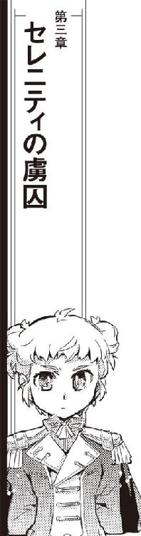
弁天丸はセレニティ星系において防衛軍宇宙艦隊に降服した。
手順に従い、無推進の慣性航行状態を保つ弁天丸にセレニティ宇宙艦隊旗艦、戦艦クイーン・セレンディピティが接近、接舷する。サイドハッチにボーディングブリッジが接続されると、固定確認や気密確保より先に有線通信が飛んできた。
『クイーン・セレンディピティより弁天丸、こちら宇宙艦隊指揮官代理、グリュンヒルデ・セレニティです』
作業場兼用の広いエアロックに響いた声に、茉莉香は思わず聞き直した。
「いきなりお姫さま自ら!?」
『今、弁天丸とクイーン・セレンディピティは有線接続されています。この通信なら、外部に傍受される心配はありません』
「グリューエル・セレニティです」
自分で通信パネルの受話器を取って、グリューエルが通信に出た。
「ヒルデ、艦隊指揮の大役、ご苦労です」
『セレニティは弁天丸に大恩を受けています』
ヒルデの透き通るような声が返ってきた。
『弁天丸の安全を確保するためなら、お安い御用です』
「戦艦隊ひとつ動かしてお安い御用ってのもすごいわねえ」
茉莉香は、エアロックのコントロール・パネルに表示されているデータを確認した。クイーン・セレンディピティは弁天丸の右舷三〇メートルで相対速度ゼロのまま艦位を固定しており、ロックされたボーディング・ブリッジ内には与圧大気が吹き込まれはじめている。
「それで、どこまで手順通りにやるの？ 降服勧告を受けて受諾したって言ったら、武装解除とか指揮系統の変更確認とかいろいろややこしい手続きしなきゃならないんだけど」
「グリュンヒルデが弁天丸に乗り込みます」
受話器片手のまま、グリューエルが言った。
「弁天丸は表向きグリュンヒルデの指揮に従っていることにして下さい。護衛と案内役として、キャサリン小隊長が一緒です」
コントロール・パネルの表示が、ボーディング・ブリッジの環境確保完了を示すグリーンライトを点灯させた。
「弁天丸はクイーン・セレンディピティと護衛艦と共に宇宙艦隊司令部に向かって頂きます」
ボーディングブリッジの外側ハッチに続き、内側ハッチが開いた。微妙な気圧差で船内大気が動く音と共に、内側ハッチの向こうから小さな人影とそれよりは大きな人影が現われる。
「こんにちは、加藤茉莉香船長」
軍服姿のまま背筋を伸ばして、ボーディングブリッジに立つグリュンヒルデが挨拶する。
「セレニティ星系防衛軍宇宙艦隊司令官代理、グリュンヒルデ・セレニティです。こちらは近衛のキャサリン小隊長」
古風な長いエプロンドレス姿のキャサリンが、こちらは優雅に軽く腰を落とす挨拶をする。
「我々は、弁天丸への乗船を希望します」
「あ、ええと、弁天丸船長加藤茉莉香です、お二人の乗船を歓迎します」
付け焼き刃の敬礼を返してから、茉莉香は船長服の腰のホルスターに下げてきた小型のビームガンを指した。シュニッツァーの前でもそうだが、キャサリン小隊長のような手練れの前でうかつに銃に触れたくない。
「降服した証に、船長が乗り込んできた相手に銃を渡すとか、やらなくていいですか？」
「不要です」
弁天丸に乗り込んできたグリュンヒルデは首を振った。
「茉莉香船長が姉の言うとおり素直に降服してくれましたから、お芝居であることはみんな承知しています」
「ええと、それじゃあまずブリッジへどうぞ」
茉莉香は、グリュンヒルデとキャサリン小隊長を弁天丸のブリッジに案内した。
「どこが拿捕船の護送だよ」
レーダーやセンサーを使うまでもなく、低倍率の光学観測でも全艦のディテールを確認出来るような周辺状況をディスプレイ上に見ている百眼が言った。
展示飛行のようにぴったり間隔を揃えた護衛艦に囲まれて、弁天丸はセレニティ星系防衛軍宇宙艦隊司令部への軌道を飛んでいた。まっすぐ前方にまるで露払いのようにクイーン・セレンディピティが飛んでいる。
「護衛付きのお召し艦の扱いじゃないか」
「こういう舵取りはこれはこれでいろいろ大変なんだ」
見えない棒で固定されているようにぴたりと動かない艦隊配置の中央で弁天丸を動かすケインが言った。
「戦闘機動より緊張するぜ」
「セレニティの第七皇女と第八皇女がひとつの船に乗っているのです」
グリューエルは船長席横のオブザーバー席に立っている。
「今の弁天丸には相応しい扱いです」
「自分の立場使う時のグリューエルって、ほんと容赦ないわね」
グリューエルの毅然とした横顔を見て、茉莉香はディスプレイ上に弁天丸を中心としているような艦隊配置を見た。
「使える時に使える場所にあるものは使う。当たり前のことです」
答えたのは、グリュンヒルデだった。
「クイーン・セレンディピティがセレニティ星系の防衛任務に就いていて助かりました。おかげで、弁天丸をお待たせせずに出迎えることが出来ました」
「出迎えてくれたのは嬉しいけどさ、これからどうするの？」
茉莉香の質問に、二人並んで立っていたグリューエルとグリュンヒルデが同時に船長席を向いた。操舵席と航法士席の間で針路や速度について細かい指示を与えていたキャサリン小隊長が振り向いた。
「弁天丸には、武装解除の名目で艦隊司令部のドックに入って頂こうと考えております」
「なんだって!?」
百眼が声を上げた。
「あくまで名目だけです」
キャサリンは続けた。
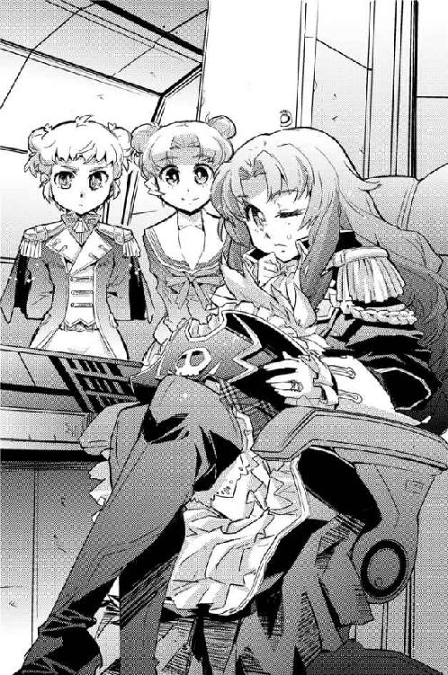
「宇宙艦隊司令部は、弁天丸に全面的な補給と必要ならば整備調整も協力出来る用意があります。これから先、この船の舳先がどこに向くかは解りませんが、それは必要なことでしょう」
「補給はともかく、整備調整ってったってなあ」
「艦隊司令部のエリザベス・ドックが空いています」
キャサリンはレーダー／センサー席である百眼の後ろに移動してデータカードを取り出した。
「見て頂けますか？」
「これかい？」
キャサリンから凝った装飾が施されたデータカードを受け取った百眼は、リーダースロットに挿入した。
青の姉妹を廻る高軌道上に浮かぶ軍用ステーションである艦隊司令部の偉容が立体ディスプレイに映し出される。
セレニティ宇宙艦隊司令部は、星間戦争を想定した艦隊司令部であると同時にセレニティ防衛のための最後の要塞でもある。全銀河規模の強力な通信システムと強力な要塞砲、堅固な装甲を兼ね備え、同時に麾下の艦隊の補給整備のための港も用意されている。
艦隊ひとつがまるごと入港出来そうな巨大な港湾区画の一画に、宇宙船の分解整備から重改装、ゼロからの建造もできそうな閉鎖系のドックをいくつも備えたブロックがある。大きな閉鎖系ドックには固有名詞が付けられていて、キャサリンはそのひとつ、巡洋艦や護衛艦にサイズが合いそうなブロックを指した。
「エリザベス・ドックは、艦隊司令部でもっとも新しい、設備が整ったドックです。大破した戦闘艦でも可能な限りの短時間で修理が可能な設備が整っています。弁天丸でお使いの規格はセレニティ宇宙艦隊と違うものもありますが、最大限の協力をお約束します」
「そりゃありがたいが、こいつは......」
「うわあ、すげえすげえ」
機関士席から立ち上がって立体ディスプレイのエリザベス・ドックの状況を見に来た三代目が声を上げた。
「軍港の整備用ドックかと思ったら、こりゃ全自動で新艦だって建造出来るような規模の最新型じゃないか。この規模なら主機の換装だって核炉の交換だって出来るぞ！」
「他人様の最新ドック何ヶ月占領する気だよ」
百眼がたしなめる。
「だいたい、主機ならともかく交換用の核炉なんぞどこにあるってんだ」
弁天丸に二基装備されている核炉は、阿号も吽号も運転開始後六〇年を過ぎた骨董品である。当初想定されていた設計寿命はとっくに過ぎて、機関クルーの知恵と努力でなんとか運用されているような状況である。代替の核炉は交換直後から手の届く限りの範囲で捜索が続いているが、未だに適当なものは見つかっていない。
「そりゃまあ核炉交換なんてったら代替品必要だけど、これだけの設備がありゃ主機も合わせてばっちり整備出来る。船長、時間はどれくらい取れます？」
嬉しそうな三代目の顔を見て、船長席の茉莉香はうーんと腕を組んだ。
「いつ何がどうなるかわからないから、出来ればすぐに飛び出せるようにしておきたいんだけど」
「わたくしたちは」
グリュンヒルデが口を挟んだ。
「エリザベス・ドックにいつまでいて頂いても構いません」
「そういう訳にもいかないんだってば。そりゃあセレニティ宇宙艦隊に捕まったっていうことになれば弁天丸を海賊指定手配した帝国艦隊だってしばらくは黙ってるでしょうけど、永遠になんて有り得ない。海明星だけじゃなくて帝国艦隊にまでこれだけ手を廻せる相手ってことは、セレニティにだってなんらかの手を打ってくることだって考えられるし、だいたい弁天丸が拿捕されたのが出来レースで猿芝居だってのは見る人が見ればすぐ解ると思うんだ。ゆっくりしてればしてるだけ、相手の手の内にはめられていくようないやーな感じがするのよねえ」
「手は打ってあります」
自信ありげな顔で、グリューエルが頷いた。
「王立情報部に、私掠船免状を持つ海賊船の動向を調査するようにお願いしてあります。遠からずよい情報がもたらされるものと信じております」
「その上補給だなんて」
茉莉香はブリッジを見廻した。
「ええと、シュニッツァー、武器弾薬ってどれくらい足りてる？」
「ミサイルは合わせて充填率二五パーセントだ」
シュニッツァーは、船長席にリストを廻した。
「一〇〇パーセントにすると宇宙船が重くなるし整備や保存に手間も掛かるから満杯にする必要はないが、この先大掛かりな戦闘でもあるなら補給はしておきたい」
「攪乱幕がもうすぐなくなる」
百眼が船長席にリストを廻してきた。レーダーや光学観測攪乱、熱源欺瞞のために放出される攪乱幕はタンクに保存されている状態では高濃縮された液状で、宇宙空間に噴き出されて爆発的に拡散する。
「攪乱幕はあればあるだけ使えるからねえ、出来ればタンク満タンにしておきたい」
「推進剤も足したい」
機関席に戻った三代目が、補給物資のリストを船長席に廻した。
「冷却剤も入れておきたいし、反応液や循環剤も交換出来ればあとあと安心なんだが」
「こんなに!?」
折り重なるように船長席廻りに立体表示されたリストを見て、茉莉香は悲鳴を上げた。
「いや、実はこれはどこの港でも補給出来るような推進剤や媒液だけで、機関整備のことは実は考えてないんだ」
三代目が、今度は三倍くらいに大きくなったリストを船長席に廻してきた。
「ドックに入れて機関廻り開けるなら、これくらいの整備と交換はしたいところなんだけど」
「これくらい設備の整っているドックに入れるなら、砲塔廻りの整備もやりたい」
シュニッツァーがさらに細かい大きなリストを船長席に表示した。
「......うちの宇宙船、よく無事に飛んでるわね」
武器弾薬や攪乱幕あたりは必ずしも宇宙を飛ぶために必要ではない。しかし、百眼とシュニッツァーが廻してきたリストを上から斜め読みしながら茉莉香は溜息を付いた。
「わかった、このさいセレニティの厚意をめいっぱい利用させて貰いましょう」
「ありがてえ！」「やりい」「これで安心して戦える」
ブリッジの各方面から聞こえてきた乗組員の声を聞きながら、茉莉香は声を荒げた。
「ただし！ いつどんなことが起きて緊急発進しなきゃならなくなるかもしれませんから動けなくなるような重整備は禁止！」
えーという三代目と百眼の抗議の声を聞き流しながら、茉莉香は続けた。
「せっかく設備の整ってるドック使わせて貰うんだから、出来ることはやっていいけど、でもいざって時は三時間で元に戻せるような整備までしかやっちゃ駄目！ 三時間で発進出来る状態まで戻せるって言うんならなにやってもいいけど、そうじゃない整備は絶対禁止！」
茉莉香はブリッジクルーの顔を見廻した。
「セレニティ宇宙艦隊司令部のドック使わせて貰うんだから、いきなり奇襲なんてことにはならないとは思うけどでも弁天丸が動けないなんてことになったら、嘘の戦闘情報でっち上げてでも弁天丸にいなくなって欲しいどこかの誰かにとって待ってましたのチャンスになると思う。だから、なにかあった時のために三時間でドックを出られるように準備しておいて」
レーダー／センサー席から振り向いた百眼は三代目と顔を見合わせた。
「だ、そうだ」
「やるしかないでしょ？」
機関席の三代目は肩をすくめた。
「今がそう安心してられる事態じゃないのは確かだし、いつでも飛び出せるようにしておけなんてのは宇宙船乗りの基本じゃないか」
「出港する時に全部完全な状態にしておけなんて贅沢は言わないから」
茉莉香が声を掛けた。
「どうせ、仕上げや調整は飛びながらやればいいとか考えてるんでしょ。それでいいから、お願い」
両手を合わせた船長を見て、百眼はもう一度三代目と顔を見合わせた。百眼はシートを廻してコントロール・パネルに向き直った。
「まあ、設備が整って補給の心配がないだけ、いつもよりはるかにマシか」
「そういう訳で、それじゃグリューエル、グリュンヒルデ、弁天丸はしばらくセレニティ宇宙艦隊司令部にお世話になります」
船長席からオブザーバー席に向いて立ち上がった茉莉香は頭を下げた。
「あの、保証金とか最低料金とか、とりあえずいくらくらい必要？」
ほとんど同時に互いに目配せしたグリューエルとグリュンヒルデが、声を揃えて笑い出した。
「笑ってられるような状況じゃないんだってば」
茉莉香は深刻そうな顔で立体画面に描き出されたドックを見た。
「弁天丸の経済状況、そんなによくないよ？」
「存じております」
当たり前のように、グリューエルは答えた。
「ご心配なく。我が宇宙艦隊は、拿捕した海賊船を回航した港の係留費用まで請求するほど落ちぶれてはおりません」
「だって、こんな最新型のドック占領したらいったい一日いくらかかるか」
建造費用を期待される耐用期限で割れば、一日あたりの最低コストになる。電気代や人件費などが加算されれば、必要経費はいくらでも跳ね上っていく。
「誤解しないで下さい。弁天丸への恩返しだけを考えている訳ではありません」
きりりと結い上げた金髪に制帽を載せているグリュンヒルデが船長席の茉莉香を見上げた。
「小さいとはいえ帝国領内でそれなりの戦力をもつ私掠船の所属が変わる、あるいはいなくなれば帝国内の戦力バランスも変化します。どこかの何者がなにを企んでなにを行おうとしているのか知ることは、廻りまわってセレニティの安寧にも繋がるのです」
「ショウさんが、海賊との付き合いは保険会社にとってのステータスだと仰っていましたでしょう」
グリューエルが話を引き取った。
「あれは、保険会社だけの話ではないのですよ。セレニティ王宮にとって、海賊とのお付き合いは得になるという計算があるからなのです」
「いいの？」
キャサリン小隊長の協力を得て接近するセレニティ宇宙艦隊司令部とドック入渠のための準備を開始している弁天丸のブリッジを見廻して、茉莉香は二人の皇女に目を戻した。
「宇宙海賊て言ったって、いろんな評判があるのよ？」
「だからいいのです」
グリューエルは澄まし顔で答えた。
「これが裏社会の犯罪コネクションとなると公明正大であるべき王宮としてはいろいろ問題がありますが、直接利害関係のない他の星系の免状を持つ私掠船ならば堂々とお付き合い出来ます」
グリューエルはにっこり笑った。
「宇宙海賊は、正義の味方ですから」
「公的権力の指揮下にない即応戦力と個人的なお付き合いがあるということは、数字に表れない力になるのです」
グリュンヒルデが言った。
「我々にとっても、それからどこかにいるかもしれない敵対勢力にとっても」
「はあ......」
なんと答えていいかわからず、茉莉香はグリューエルとグリュンヒルデの顔を見た。
「だから、安心して弁天丸をドックに入れて下さい。あとのことはお気になさらなくて結構です」
「弁天丸はそれでいいかもしれないけど」
茉莉香は、船長席廻りに立体表示されたままの整備と補給のリストを見廻した。
「降服して拿捕された海賊船の船長はそういうわけにもいかないでしょ。あたしはどうすればいい？ まずは艦隊司令部に出頭して事情の説明？」
「上陸する人員を選んで下さい」
グリュンヒルデは言った。
「茉莉香船長には、我々と一緒にセレニティ王宮に来て皇女拉致誘拐容疑の首謀者として審問会に出て頂きます」
「ええー!?」
茉莉香の悲鳴に、グリュンヒルデは、グリューエルと同時に笑顔を浮かべた。
「歓迎のための宴席の用意が出来ております」
「殺される......」
目眩を伴う頭痛を感じて、茉莉香は呟いた。
「王宮での宴席なんてめったにない機会なのに、どーしてみんな希望しないかよっく解った」
エリザベス・ドックへの弁天丸の入渠後、茉莉香は船長として乗組員たちに事情を説明した。海賊船勤務に、古い王宮で賓客扱いされる機会などめったにない。機関担当の三代目や戦闘指揮のシュニッツァーなどは時間最優先で補給整備中の弁天丸を離れる訳にはいかないし、他の乗組員も配置や担当によってはドック内で作業を続けなければならないが、それでも陸戦隊や航法観測班などかなりの人数が弁天丸を離れられるはずだった。
ところが、ブリッジクルーは最初誰一人としてセレニティ青の姉への上陸を希望しなかった。クルーたちの複雑な表情に悪い予感を覚えつつ、仕方ないから茉莉香は弁天丸の整備補給という目の前のミッションになるべく影響のなさそうなメンバーを指名した。
ブリッジクルーの中からは船医のミーサ、航法士のルカ、電子戦担当のクーリエを選んだ。ミーサは溜息を付いて仕方ないわねと引き受け、ルカも仏頂面のまま頷いてくれたが、クーリエは山のような理由を並べ立てて青の姉への上陸を拒否した。
「せっかく軍の司令部にドックインするんですよ!? それも、あの出来の良いセレニティ宇宙艦隊！ 船長だって戦ったことあるんだから彼らがどれだけのやり手か知っているはずです！ 電子戦のアップデートは部品だけじゃありません、蓄積されたデータや収集されてる最新情報が肝心なんです!!」
立て板の如くまくし立てるクーリエに、茉莉香はあっという間に両手を挙げた。
「解ったわかった、それじゃあドックで宇宙船の整備お願い」
クーリエはあからさまにほっとした顔をした。
「あと、シュニッツァーや百眼や三代目が弁天丸を元に戻せなくなるような分解整備はじめないように見張ってて」
茉莉香は小声で付け加えた。
「確かに引き受けました」
小声で、しかし胸を叩いてみせたクーリエに茉莉香はさらに声をひそめて訊いた。
「王宮って、そんなに大変なところなの？」
クーリエはかすかに頷いて茉莉香に囁いた。
「死なないように注意して下さい」
「解った、気を付ける」
その時はクーリエの言葉の意味が解らなかった茉莉香だが、セレニティ宇宙艦隊司令部から王宮専用シャトルでグリューエル、グリュンヒルデともども青の姉に降下する中で正装を整えることを求められた。
「正装って、白凰女学院の制服？」
真面目に訊いた茉莉香に、船医を示す白衣のままのミーサは呆れ顔で首を振った。
「表向きは審問会への出席ですからね、星王家が期待してるのは海賊としての正装」
ミーサは、両腕を通した白衣を拡げてみせた。
「だから、船長の茉莉香は船長服。ちゃんと帽子まで被って、弁天丸で船長やってる時の格好で出てくれって。うちの宇宙船、軍艦じゃないから、いつもの格好だと、みんなばらばらなんだけどね」
「なあんだ」
茉莉香は、弁天丸のブリッジにいた時と同じ自分の船長服を確認した。ちょっと襟なんか直してみる。
「なら、らくでいいじゃない」
白衣のポケットから懐中時計を取り出したミーサは、着陸地の現在時間と太陽の位置を示す恒星時を確認した。
「まだ昼間だからね、日のあるうちのパーティーは普段の格好でってことだと思う」
ミーサは、機窓から見える青い星に貼り付いたプリズムのような大気層に目をやった。
「日が暮れてからのイブニング・パーティーは、ひょっとしたらドレスコードフォーマルかも」
「ドレスコード、フォーマルってなに？」
「お姫さまみたいなひらひらのドレス着せられるかもしれないってこと」
ミーサは、後ほど参りますと言って姿を消したグリューエルがいないシャトルのキャビンを見廻した。
「あのお姫さま、そういうの好きでしょ」
「イブニング・パーティーって......」
茉莉香はキャビンのディスプレイに表示されている着陸地の現在時間を見た。
「審問会、昼間だけじゃ終わらないってこと？」
「夜も続くわよ」
ミーサは顔をしかめた。
「朝までに終わればいいんだけど」
そして、ミーサの長い講義がはじまった。
全部覚える必要はないから聞くだけ聞くように、という指示と共に茉莉香の目の前に表示されたのはセレニティ星王家の膨大なリストだった。
現在セレニティ星王家の大公であり、グリューエルとグリュンヒルデの祖父であるシムシエル・セレニティを頂点とする星王家の王族は、青の姉妹、碧の兄弟という二つの双子星、赤の父、藍の母、白の子供と呼ばれる七つの星に分散している。古い王家だけに本流以外の傍流も多く、そのほとんどが王家としての職務に関わっている。
「そりゃあ、グリューエルが正統第七皇女、グリュンヒルデが第八皇女なんだから上にあと六人はいるとは思ったけど......」
茉莉香は、現大公であるシムシエルの上にも下にもずらりと続いている立体顔写真付きの系統樹を見て、茉莉香は悲鳴を上げた。
「これ全部覚えなきゃならないの!?」
「だから、全部覚える必要はないし期待もしていません」
出来の悪い生徒を目の前にした忍耐強い家庭教師の顔で、ミーサは答えた。
「セレニティ星王家主催の晩餐会ともなれば、星王家からはこれだけの人たちが出席するということ。ほとんどの顔は、叙勲式の時に見たでしょ？」
「覚えてる訳ないじゃない！ あん時も闇討ち同然に引っ張り出されてあれよあれよって間に青の姉のセレニティ王宮に連れ込まれての叙勲式で、そのあと夜逃げ同然におさらばしたんだから！」
「今回は、表向き皇女誘拐犯人に対する王宮直々の審問会って名目ですからね、逃げようがありません」
茉莉香は、ミーサが哀れむような目で自分を見ているのに気付いた。
「つまり、王家の方々がご満足するまで宴席から帰れる保証はない、っていうことです。そして、審問会といいつつ宴席だとグリューエルが言っている以上、列席される雲の上の方々はセレニティの王家だけでなく、王家と親しい上流階級の方々も来ると考えた方がいいでしょう」
ミーサの視線が厳しい教師のそれに戻った。
「どういう意味か、解りますね？ 船長」
「ええと......」
茉莉香は少し考えてミーサを上目遣いに見た。
「上流階級って、つまり？」
わずかに首を振って息を吐いたミーサは、顔を上げた。
「セレニティと良い関係にある周辺星系のお歴々、他の星系の王様とか女王様とか首相や大統領が来るとは思いませんが、駐留している大使や武官、それから取引のある商人。審問会名目とはいえ宴席だという以上は見物目的でもなんでもいろいろ来ると思っておいた方が間違いないでしょう。そこで、船長がやらなければならない仕事はなんだか、解っていますね？」
「そんな雲の上の人たち相手に、あたしが？ やらなきゃならないことって、出来ることなんかあるの？」
「顔繋ぎです」
本気で首を傾げた茉莉香に、ミーサは簡潔に答えた。
「セレニティ王宮の方々と、それに近しい人たちは、かつてセレニティを救い、今危機に陥っている海賊の顔を見に来るんです。だから」
「だから、茉莉香船長はいつもの船長服で自信たっぷりに笑って挨拶して下さればいいんです」
キャビンに入ってきたグリューエルがあとを引き取った。いつの間にかパーティー用のソワレ・ドレスに着替えている。
「わあきれい！」
久しぶりに見るグリューエルのドレス姿に、茉莉香は声を上げた。それから考え込む。
「顔繋ぎ？ 海賊の顔見に来る人たち相手に？」
「セレニティ王宮はいろいろなところにコネがあります」
グリューエルはにっこり笑った。
「挨拶しておいて、損はないと思いますよ？」
「損はないかもしれないけどさあ」
茉莉香はさらにうーんと考え込んだ。
「ここで挨拶しておいたことがあとあと役に立つようなしんどい展開なんか、あんまり考えたくないんだけど」
「まあ」
呆れ顔のミーサの顔を見てから、グリューエルはよそ行きの顔のままころころと笑った。
「あるものは使わないと損ですよ。それを使えば簡単なことが解っている場合は、なおさらです」
「使うのは簡単かもしれないけど、使ったあとが大変そうなのよねえ」
「使わなきゃならないような事態に落ち込まないように気を付けて下さい」
言ってから、ミーサはソワレ・ドレス姿のグリューエルを見て溜息を吐いた。
「もう、遅いか」
「使わせて、恩を着せるという方法もあります」
澄まし顔で、グリューエルは言った。
「いずれにせよ、鯨座宮の宇宙海賊がセレニティ近隣のものたちに顔を売るよい機会になると思います。励んで下さいね」
「はあ」
気の乗らないまま、茉莉香は再び無限に続くようなリストの暗記作業を再開した。
王宮専用シャトルは、青の姉で最初の移民団が着陸したという地に建設されたファースト・ヴァージニア中央宇宙港に着陸した。二人の皇女と弁天丸乗組員はそこで大気圏内専用のエアロダインに乗り換えて郊外の王宮に向かった。
青の星と同じ歴史を持つもっとも古い首都、青の姉のファースト・ヴァージニアにはセレニティ王家が執務のために使っているヴァージニア宮がある。古い石作りの巨大建築が立ち並ぶ官庁街の中央にあるヴァージニア宮は創世神話にある最初の一族の城をモチーフとしており、セレニティの七つの宝石の中でももっとも壮麗で豪華な建築物であると言われている。
セレニティ星王家は、七つの宝石の全てにいくつもの居城を持っている。星王家専用エアロダインが向かったのは、ファースト・ヴァージニアの郊外にある夏宮と呼ばれる王家が休暇に使う離宮だった。
ファースト・ヴァージニアの背後に聳えるヴァージニア山塊の奥深くにある夏宮は、豊かな青を湛えた湖のほとりの広い草原に作られた石作りの宮殿だった。
都市を結ぶフリーウェイは山塊を貫くトンネルを通るから、地上から夏宮に来るには細い山道を走ってくるしかない。湖には城から同じ石作りのアーチ桟橋が延びていて、細身のヨットと飛行艇が係留されていた。
専用エアロダインは、衛兵が計ったような隊列を組んで待機していた夏宮の中庭の石畳の広場に着陸した。
儀礼用の古風な銃剣を持って隊列を組んでいた礼装の衛兵の前で二人の皇女と加藤茉莉香以下弁天丸乗組員を出迎えたのは、侍従長のヨートフ・シフ・シドーだった。
「お待ちしておりました」
茉莉香に、皇女に対するのと同じように丁寧に挨拶して、侍従長は加藤茉莉香をはじめとするほんの数人の弁天丸乗組員一行を夏宮の中に案内した。
「お休みの間もなくすぐにハードワークを要求するのはまことに心苦しいのですが、弁天丸の皆さまもいつまでご滞在できるかどうかわからないと聞きましたので、すでに皆さんお待ちかねです」
中庭から、高い列柱に支えられたアーチ型の天井からシャンデリアが一列に並ぶきらびやかな飾り廊下を経て一行が案内されたのは、夏宮の大広間だった。
賓客の名前を呼ばわる古式ゆかしい呼び出しとともに大広間の大階段の上に案内された加藤茉莉香以下弁天丸一行は、大広間を埋める色とりどりのドレスと正装の出席者たちに拍手で迎えられた。
ぼーっと高い場所から大広間を見廻していた茉莉香は、後ろのミーサに小突かれてはっと我に返った。学校の礼法の授業を思い出してマントを翻しながら腰を折る出来るだけ派手な挨拶を決める。
「あ、あのさ」
作った笑顔で両隣に立ったグリューエル、グリュンヒルデともども手を振りながら、茉莉香は小声で訊いた。
「海賊の時間だあとか、やった方がいい？」
「もし、お時間があればのちほど」
こちらも笑顔を湛えたまま、グリューエルが応えた。
「さあ、行きましょう。一緒に階段を降りて下さい」
そして、審問会がはじまった。
海賊船長の衣装だったのは最初の半日だけで、イブニングパーティーに時間が移ってからは茉莉香はほとんど着せ替え人形同然に衣装替えして、グリューエルとグリュンヒルデに連れ廻されるままに挨拶回りで大広間のみならず夏宮中を連れ廻された。
どこでなにをやっているのか自分でも解らなくなった茉莉香がはっと我に返ったのはすっかり明るくなった翌日、視界すべてが白いレースで覆われているような天蓋付きのベッドの中だった。夏宮にいくつもある尖塔のひとつで夜明けを見た記憶があるが、繋がっていない記憶の方が多い。
「あら、起きてる？」
茉莉香とあまり変わらないペースで動き回り、のみならずこちらは積極的に酒やその他の嗜好品も楽しんでいたはずのミーサが眠気も疲れも感じさせない顔で部屋に入ってきた。
「ご苦労様、眠れた？」
茉莉香はぼーっとした頭のまま辺りを見廻した。新奥浜市の家の自分の部屋くらいもありそうな大きな天蓋付きのベッドが、家がまるごと入りそうなさらに巨大な部屋の真ん中にある。
「ここ、どこ？」
「ヴァージニア山塊の中のセレニティの夏宮、ここはお客さま用の寝室」
「寝室......」
茉莉香は、荒れた海のように見える自分のベッドを見廻した。すばらしく着心地のいい薄手のネグリジェを着ているが、自分で着替えた記憶はない。
「自分でここに来た記憶、ないんだけど」
「ときどき意識失ってたものねえ」
ミーサは事も無げに言った。
「これが、王宮名物時間無制限パーティーよ。大広間に行ってご覧なさい、まだ元気でやってる人たちがいるから」
途切れ途切れの記憶の中からいくつかのシーンを思い出して、茉莉香は思わず声を上げた。
「王族の人たちってどうしてあんなにタフなの!? 寝ないの!? ヤバい薬でもやってるんじゃないの!?」
「申し訳ありません」
こちらも疲れとか眠気などと縁のなさそうなすっきりした顔で、王宮内の正装であるモーニング・ドレス姿のグリューエルがドアを開けて入ってきた。
「王族ともなると余計な仕事が多いので、優先度が高い上に責任を伴わない宴席などめったにないのです。おかげで、本来やるべき仕事を放り出して七つの星すべてから王族が集まってしまいまして」
「なによそれ!?」
「王族が宴会する適当な言い訳に使われたってことよ」
ミーサが肩をすくめてみせた。
「まともに付き合うと消耗激しいからね、今日からはマイペースで適当にさぼりながらおやんなさい」
「ミーサだってなんでそんなに元気なのよ!?」
「年季よ年季。薬呑む？ 有機材料で調合したから即効性じゃないけど、副作用の心配はないわよ」
ミーサはテーブルに置いてあったティーセットのポットを取って、カップに怪しげなお茶を満たした。
「喜んで頂きます」
茉莉香は、ミーサがソーサーごと寄越したカップを受け取った。冷えたカップに柑橘系の香りが心地よい。
「気を付けてね」
カップに口を付けた茉莉香に、ミーサが声を掛けた。
「ロイヤル・カキエモンのティーカップ、博物館級よ」
「ええー!?」
茉莉香はブルー・グリーンのお茶を噴き出し掛けた。あわてて中身を喉に流し込み、ソーサーごとミーサに戻す。
「返す！ 寝起きでそんなややこしいもの触りたくない！」
「では、お目覚めになったところで、本日のスケジュールです」
いつもどおりの顔で、グリューエルはデータタブレットを取り出した。茉莉香は右手で両目を押さえてふわふわのベッドに倒れ込んだ。
「勘弁して」
「と言いたいところですが」
澄まし顔でグリューエルは続けた。
「その前に、お客さまです」
「お客さま？」
茉莉香は宙に浮きそうな軽い羽根枕を両手に抱いて起きあがった。
「わざわざ？ あたしに？」
「どうぞ」
グリューエルは、開いたままのドアに合図した。
「お邪魔するわよ」
船内作業服姿のままのチアキがドアに現われた。
「チアキちゃん！」
羽根枕を放り出して茉莉香は天蓋付きのベッドから飛び出した。
「いらっしゃい！ 助けに来てくれたの!?」
「いきなり首っ玉に抱きついてくるんじゃない！」
「すっごーい、よくそんな格好で宮廷内に入れたじゃない」
「時間最優先だとのことでしたので」
ちょっと不満そうな顔で、グリューエルが言った。
「移動時間中に着替えるドレスくらいいくらでも用意できますのに」
「これがバルバルーサでのわたしの正装だもの」
「んん、似合ってる。着替える間も惜しんであたしに会いに来てくれたんだ」
「弁天丸の船長が王女略取の容疑でセレニティ王宮に囚われの身になってるっていうからどんな顔してるか見に来ただけよ」
「もおー、相変わらず意地悪なんだから、大好き」
「懐くな懐くな」
チアキは、茉莉香をぶら下げたまま入り口のドアを閉じて、モーニング・ドレス姿のグリューエルに振り向いた。
「この部屋は大丈夫？」
「はい」
グリューエルは自信に満ちた顔で頷いた。
「セレニティ星王家の名にかけて、賓客の寝室に聞き耳を立てるような下賤な趣味は持ち合わせておりません」
「だから、離れて！」
チアキは首根に両手を廻していた茉莉香を強引に遠ざけ、明るい朝日が射し込む寝室を見廻した。古典主義の装飾過多な調度品や壁に飾られた絵や意匠、盗聴機や隠しカメラくらいどこにでも仕込めそうに思える。
幾本もの桟に仕切られた窓が閉じられ、その上の天窓も閉じている。チアキは自分が入ってきたドアが元通り閉じられているのを確認して、茉莉香に向き直った。
「バルバルーサに関する重大な話があります。わたしはそのためにバルバルーサ船長ケンジョー・クリハラの命でここに来ました」
ネグリジェのままの茉莉香は目を見開いた。
「......つまり、弁天丸船長加藤茉莉香に？」
「そうです」
「わたくしはここにいてもよろしいですか？」
チアキはグリューエルとミーサに視線を巡らせた。
「ええ、聞いてちょうだい。たぶん、弁天丸を拿捕しているセレニティ王家にとっても興味のある話だと思うから」
「解りました」
グリューエルの顔が子供とは思えないほど引き締まった。茉莉香は背筋を伸ばしてチアキに向き直った。
「話って、なに？」
「バルバルーサ船長、ケンジョー・クリハラは、私掠船免状の売り渡しに合意しました」
「えええー!?」
茉莉香は思わず声を上げた。ミーサはわずかに眉を動かしただけである。
「相手は誰？ いったいなんで、どうして!?」
「先の保証のない海賊家業を続けるよりも、ここで一発大金を掴んで引退した方が楽」
チアキはすらすらと答えた。
「ってのはもちろん表向きの理由よ。本当の理由は、トアール・コンツェルンのエージェントを名乗る交渉相手の裏にいる黒幕を突き止めるため」
「それにしたって、私掠船免状をどこの誰かも解らないエージェントに売り渡すなんて、いったいどういうことなの!?」
「あなたやわたしが生まれる前から海賊やってるひとよ。たぶん、海賊の意味も力もわたしなんかよりよっぽど理解してる」
チアキは視線を落とした。
「もう一つの理由は、弁天丸よ」
「え？」
「弁天丸が、ちょっと事情を知ってるものなら誰だっておかしいと思うような状況ではめられて、挙げ句セレニティに確保された。迦陵頻伽が行方不明になって、バルバルーサに海賊免許買い上げの打診が来てるのよ。相手の正体も意図も解らない以上、どんな実力行使に出てバルバルーサだっていったいどんなことになるか」
「それで......」
「だから金になるうちに海賊免許を売り渡して、悠々自適の引退生活、なんてもちろんうちの親父が考えるわけないでしょ。だから、売り渡す振りをして、相手の尻尾を掴む」
「ええー!?」
「海明星の行政府だけじゃなくて、実際にそのための作戦行動はしてないとはいえ帝国艦隊に海賊指定手配を簡単にかけさせられるような相手よ。通り一遍の方法じゃ尻尾を掴むどころか追い払われるならましな方、気がつかないうちに潰されてる可能性だって考えておかなきゃならない。だから、まずは相手の言うとおり海賊免許を売り渡して安心させ、バルバルーサに対する直接攻撃の目を潰す。乗組員が降りて空っぽになった海賊船なら、もし沈んでも船体だけの被害で済むから」
「だって、竜骨までなくなっちゃったら海賊免許だって更新出来なくなっちゃう」
「かけらさえ残ってればなんとかするって親父が言ってたわ。それより、乗組員が生き残る方がずっと大事だって。乗組員さえいれば、宇宙船なんかなくったってどうにでもなるって」
チアキの低い声に、茉莉香は思わず呟いた。
「さすが、黒髭船長」
「ケンジョー・クリハラ船長は、素直に海賊免状を売り渡し、バルバルーサを引き渡すおつもりなのですか？」
グリューエルが質問した。チアキはグリューエルに顔を向けた。
「もちろん、いっぱい罠掛けてあるわ。売り渡す海賊免状は精巧に偽造した偽物だし、引き渡したバルバルーサからの情報も外から取れるようにいろいろ細工してる。だけど、たぶんそんなのはおまけでしかない。私掠船免状が本物かどうかなんて発行した行政府に問い合わせて確認しなきゃわからないだろうし、相手に必要なのは本物の海賊免状じゃなくて海賊から私掠船免状を買い取ったっていう実績だけなのかも知れないし。今回の仕事はこれからが本番だって」
チアキは、茉莉香に目を戻した。
「だから、わたしが弁天丸船長への連絡役として来たわけ。親父にしてみれば体のいい厄介払いでしょうね」
一気に言ったチアキが溜息をついた。
「厄介払いだなんて」
グリューエルが声を上げた。
「クリハラ船長は、チアキさんを安全な場所に避難させたかったのでしょう」
「解ってるわよ。だから厄介払いだって言ってるの」
チアキは忌々しそうに首を振った。
「情報収集と状況確認はきっちりやるけど、アドリブ仕事なんてだいたいいっつも成り行きまかせで出たとこ勝負のうちの親父が、今回に限って副長のノーラやうちの戦闘スタッフとずーっと頭付き合わせて相談して、うちだけじゃなくていろんなところに連絡とって。あのヒゲオヤジがあんなに社交性高いなんて知らなかった」
「いいなー」
茉莉香は素直に呟いた。
「頼れる船長で、うらやましいなー」
ぎろりと茉莉香を睨み付けてから、チアキはこほんと咳払いした。
「ここからが本題よ。バルバルーサ船長、ケンジョー・クリハラから弁天丸船長、加藤茉莉香への依頼です。売り渡されたバルバルーサの追跡に協力して下さい」
「わかった」
茉莉香は即答した。
「弁天丸はなにがあっても三時間以内に出動出来るように準備してあるの。すぐに出撃の指示出すね。で、どこに行けばいいの？」
くすっと笑ったグリューエルがチアキと目を合わせた。
「言いましたでしょ？」
グリューエルは笑顔のまま言った。
「なにがあっても、チアキさんのお願いなら茉莉香さんはすぐに弁天丸を出港させようとするって」
「船長なら、もう少し情報収集と状況確認をしっかりした方がいいわね」
チアキも苦笑いしながら首を振った。
「バルバルーサは、まだ親父の指揮で海賊船として動いてる。海賊免許の売り渡しも船体の引き渡しも先の話よ。そして、弁天丸に動いて欲しいのはそのあと」
「ええー!?」
茉莉香は失望の声を上げた。
「弁天丸ですぐに助けに来て欲しいとか、そういう話じゃないのお？」
「立場ってものを考えなさいってば。今の弁天丸は皇女略取誘拐の罪でセレニティ防衛軍に拿捕されてる身の上なんでしょ。そのまんま飛び出したり逃げ出したりしたら、いくら段取り芝居だって承知してても宇宙艦隊は追いかけなきゃならないし、帝国艦隊だってたぶん黙ってない。弁天丸一隻で、帝国艦隊の追跡をかわしながらバルバルーサ助けられるの？」
「それは......まあ......そうかも知れないけど」
ちょっと考えただけでも、弁天丸が今よりはるかに困難な状況に簡単に陥るだろうことは想像が付く。茉莉香は羽布団を抱きしめてぶつぶつと言った。
「でも、それじゃあ、弁天丸はどうすればいいの？」
「親父は、引き渡されたバルバルーサを追跡すれば敵のそばまで踏み込めるだろうって考えてる」
伝えるべき事項を忘れていないかどうか考えながら、チアキは区切るようにゆっくり言った。
「もちろん、バルバルーサを追跡するための体制は整えてるけど、たぶん、それだけじゃ足りない。引き渡された敵がバルバルーサをどうするつもりか解らないけれど、破壊するにしてもなにか他の用途に使うにしてもどこかに持っていくはず。首尾よく敵の本拠地までバルバルーサを持っていけばそれで良し、そうならなくても引き渡された海賊船の乗組員が自分の船を奪い返すタイミングがあるはず」
「そのために弁天丸を使うのね？」
茉莉香の言葉にチアキは頷いた。
「迦陵頻伽とバルバルーサの状況を見ると、他の海賊船もいつどんな罠に陥れられるか解らない。だから、今はセレニティ宇宙軍に保護されてる弁天丸が一番安全だって言えるのよ。親父がなに考えてるか、見当ついた？」
「それだけ危険な状況だってことね」
チアキは茉莉香に顔を上げた。茉莉香は続けた。
「どこに誰を送っても、安全に到着するかどうか解らない。宇宙じゃ絶対なんてないけれど、それでも一番安全なところにチアキちゃん送ったってことでしょ」
「そうよ、子供扱いして腹の立つ」
「無線でも伝えられるはずのメッセージを口頭で伝えるように指令したのは機密保持のためかそれともチアキちゃんをあたしのところに行かせるための口実かも知れないけれど、でもそれは同時に弁天丸が絶対必要になるってことでしょ？」
チアキは目をぱちくりさせて茉莉香の顔を見直した。
「絶対必要なミッションの依頼を確実に伝えるためにチアキちゃん送り出したってことでしょ。チアキちゃん、信用されてるし頼りにされてるんだと思う」
「......ずいぶん船長らしいこと言えるようになったわね」
「あー、そこまで黒髭船長に信用されてるなんて、責任重大」
茉莉香は抱きしめた羽根枕に顔を埋めた。
「いったいどこの誰がなに考えてこんなことやってるんだろう」
「王立情報部も、情報収集のために動いております」
グリューエルがチアキに向き直った。
「海賊の皆さまも、今はまだ情報収集と作戦行動開始前の準備中、ということですね？」
「そういうことになると思う」
「では、ケンジョー・クリハラ船長から連絡があるまで、チアキさんはここにいられるということですね？」
満面の笑みを湛えたグリューエルの台詞に、チアキは不吉なものを感じて茉莉香の顔を見た。茉莉香も同じように笑顔で作業服姿のチアキに頷いた。
「では、チアキさんにも審問会に出席して頂きましょう」
「し、審問会!?」
チアキは思わず聞き返した。茉莉香は笑って手を振った。
「大丈夫、審問会って名前になってるけど、実は王宮主催のパーティーだから」
「ぱぱぱパーティーですって!?」
「審問会出席の資格は、参考人でいかがでしょうか？」
笑顔のまま、グリューエルは言った。
「セレニティ宇宙軍に拿捕されている弁天丸船長加藤茉莉香救出のため、同業の海賊が王宮に侵入したので捕らえた、ついてはいろいろお話を聞かなければならないという設定で」
「なによそれ、設定ってどういうこと！」
「物事をスムーズに進めるためには、体裁を整えるということも必要なのです」
グリューエルは、もっともらしい顔で言った。
「チアキさんの名前は伏せておいた方がいいでしょうが、海賊が王宮に侵入したと知ればケンジョー・クリハラ船長にもチアキさんがセレニティに到着したと解るでしょう」
「いいの？」
茉莉香は眉をひそめた。
「それって、つまり」
「そして、弁天丸の動向に気を配るものがいたとすれば、弁天丸を救出しようとするものがいるという情報はやはり興味深いものになるはずです」
先回りするように、グリューエルは茉莉香を見た。
「弁天丸拿捕に続いて、次の撒き餌が必要な時期です。王立情報部がいい魚影を見つけてくれるでしょう」
「そうね」
茉莉香は逃げ腰のチアキの腕に抱きついた。
「チアキちゃーん、楽しいパーティーだよお。グリューエル、チアキちゃんにドレス選んであげて」
「当然です。審問会に参考人として出席して頂くからには、それに相応しい衣装を身につけて貰わなければなりません」
「ちょっと待て！ わたしはメッセンジャーとしてここに来ただけで、審問会だなんてそんなおっかないものに引っ張り出されるために来たんじゃない!!」
「大丈夫大丈夫、怖くないからねー、ちょっと疲れるけど」
茉莉香は、グリューエルに引っ張られるように部屋から連れ去られたチアキに笑顔で手を振った。
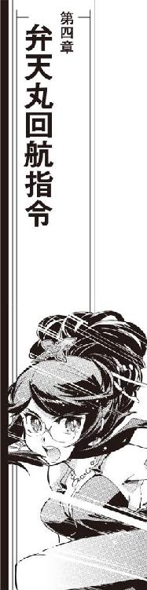
海森星の私掠船バルバルーサ船長、ケンジョー・クリハラがセレニティ星王家の賓客として青の姉の夏宮に到着したのは、加藤茉莉香の五日後、チアキ・クリハラの三日後だった。
「親父!!」
「チアキ......か？」
夏宮の審問会主会場となっている大広間に海賊船長の正装で登場した黒髭船長は、クラシックスタイルの肩もあらわな漆黒のイブニングドレスに大きく拡がったスカートを蹴散らして駆けてきた愛娘の晴れ姿を見直した。派手な化粧で疲労を隠してはいるものの、緑の黒髪は隠しようがない。
「見違えたぞ！」
抱きとめようと両手を拡げた黒髭船長の直前でステップしたチアキのイブニングドレスのロングスカートがふわりと拡がった。駆けてきた勢いのままくるりとスピンしたチアキは自分より頭二つ分も高い父親の顔めがけて回し蹴りを繰り出す。
「遅い！」
ハイヒールの甲が正装の提督帽を被った黒髭船長の横っ面に吸い込まれる。
「どこでなにしてやがった!!」
動いた気配もなしに上げられた太い船長服の前腕が、きれいな軌跡を描いて飛んできた足先を命中寸前にがっちりガードした。まっすぐ伸ばした左脚を蹴り上げた姿勢のまま一瞬止められたチアキのまわりに一度は舞い上がった漆黒のロングスカートがふわりと落ちていく。
どよめきとともに、海賊船長とその娘を囲んでいた出席客たちから拍手が起きた。
「もちろん、海賊のお仕事だ」
ケンジョーは、にやりとくちもとを歪めて食われそうな牙を剥きだした。
「おまえも、立派にお勤めを果たしているようで、親として鼻が高いぜ」
ガードした右腕で軽く足先を弾かれたチアキが、逆方向によろけかけてこちらも真っ白なイブニングドレスの茉莉香に抱き止められた。
「お待ちしておりました、ケンジョー・クリハラ船長」
軽くスカートの裾を持ち上げて、茉莉香はこの数日間ですっかり様になった腰を落とす挨拶を決めた。目をぱちくり見開いてから、ケンジョーは派手な羽根飾りの付いている横長の提督帽をごつい手で持ち上げてくるくる廻しながら胸に当てて腰を折る。
「これはこれは、加藤茉莉香船長。セレニティ星王家を向こうに廻しての連日の戦闘、ご健闘なようでなによりです」
「連戦連敗のぼろ負けです」
芝居がかった黒髭船長に笑い返して、茉莉香はとなりに立ったチアキに目配せした。
「セレニティ星王家の第七皇女、プリンセス・グリューエル・セレニティと、第八皇女、プリンセス・グリュンヒルデ・セレニティです」
打ち合わせしていたように、白いイブニングドレスの茉莉香と黒いイブニングドレスのチアキが左右に分かれた。二人の間から、対のように赤と青のイブニング・ドレスに身を包んだ二人の皇女が現われた。
背後に控えるバルバルーサの副長ノーラをはじめとするクルーに合図して、脱いだ提督帽を胸に当てたケンジョーはひざまずきながら二人の皇女に腰を折った。
「バルバルーサ船長、ケンジョー・クリハラです。セレニティ星王家の方々と直接お目もじ頂けるとは、末代までの語りぐさとなります」
「ようこそ、セレニティの青の姉へ」
グリューエルは慣れた様子で軽く腰を落とす挨拶を返した。ケンジョーにしか聞こえないような小声で問う。
「お時間はありますか？ お急ぎなら人払いをさせます」
「お心遣い感謝します」
頭を垂れたまま、こちらも小声でケンジョーは答えた。
「時間はなにものにも代え難く貴重ですが、挨拶の時間くらいなら充分に。幸いなことに、事態はそれほど切迫してはおりません」
となりに立つグリュンヒルデに軽く目配せして、社交用の輝くような笑顔のままグリューエルは頷いた。
「お立ち下さいケンジョー船長。当主であるシムシエル・セレニティをご紹介いたしましょう」
こちらもさりげなく目配せを交わした茉莉香とチアキは、どちらからともなくケンジョー以下のバルバルーサ乗組員たちから目を逸らした。
茉莉香とチアキは、審問会をケンジョー船長以下のバルバルーサ乗組員に任せて会場を抜け出した。
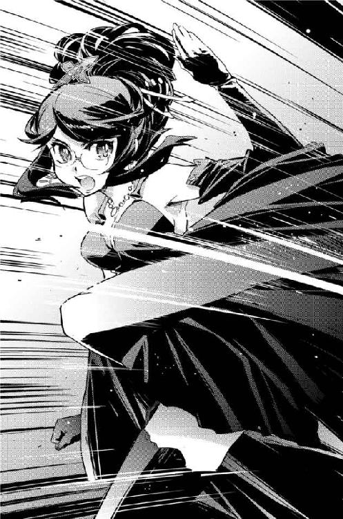
海賊としての正装で夏宮に乗り込んだバルバルーサ乗組員が、大公シムシエルをはじめとする審問会の出席者全員に挨拶を終えたのは、茉莉香とチアキがゆっくり仮眠を取って体力を回復した頃のことであった。
「参った！」
一晩中休む間もなく頭の上と手の中を往復し続けた提督帽を円卓に放り出して、ケンジョーは会議室の大きな椅子に倒れ込んだ。
「王族とか貴族なんて方々は毎日こんなことしてるのか？ 未開惑星のジャングルでゲリラ戦でもやってる方がよっぽど楽じゃねえか」
「上の方々とのお付き合いは、必要最小限に留めるように言いました」
ほとんど徹夜のはずなのに、こちらは疲れた素振りも見せずにノーラ副長がケンジョーのとなりの席に腰を下ろした。
「戦線離脱の機会はいくらでもありましたのに、最前線に居座り続けたのは船長です」
「そら、だって、おめえよお、まっとうに暮してる限りは何回人生繰り返そうがお目に掛かれないような酒に肴に生きて動いてる本物の王族や貴族だぜ。少しばかりこっちの負担がでかくなったって、そりゃあ気合い入れて相手してやれば廻りまわってそのうちなんかいいことがあるだろう」
「見世物にされているだけです」
「期待して頂いて良いと思いますよ」
こちらはしっかり睡眠のみならず朝食まで済ませたグリューエルが、アフタヌーンドレスで会議室に現われた。
「伝統あるほんものの海賊にお会い出来る機会などないものばかりですから。クリハラ船長といい、バルバルーサ乗組員の方々は想像していた通りで、皆さん大喜びでした」
「ほら、見世物にされているだけです」
繰り返したノーラに横目をくれてから、ケンジョーは会議室を見廻した。
博物館か美術館のようなセレニティの夏宮の中で、有事に使われる場所だとして案内された作戦会議室は例外的に最新設備で整えられていた。円卓の中央には立体式の多元ディスプレイが装備され、周囲に装備されている専用椅子は長時間使用を前提に自動調整装置のみならず簡易医療設備まで組み込まれている超高級品である。
「夏宮でもっとも装備の整った会議室です。もっと飾りの多い部屋もあるのですが、おそらく皆さまのためにはこの作戦会議室が最適だろうと判断しました」
「バルバルーサのブリッジよりずっと居心地がいいや。貴重な会議室の提供を感謝する。このまま寝ちまいそうだぜ」
自動的にリクライニングしたバックレストに背中を預けて、ケンジョーは大あくびした。
「親父！」
グリューエルに続いて入ってきた白凰女学院海森星校の制服姿のチアキがぴしゃりとケンジョーの前の円卓を叩いた。
「態度！ ちっとは場所考えて!!」
「なんでえ、せっかくのドレス脱いじまったのかい、もったいない」
水平近くまでリクライニングしたバックレストから頭だけ上げて、ケンジョーは返事した。
「いやまあ、なあ、海賊ってことで期待されてる表現で、多少のサービスだあ」
ケンジョーはよっこらせとバックレストから身を起こした。シートは自動で変化した姿勢に対応、変形する。
「すげえ椅子だ。うちのブリッジにこんな装備入れたら、居眠りばっかで仕事になんねえな」
「クリハラ船長」
チアキのあとから、こちらは船長服姿の茉莉香が白衣のミーサとこのために夏宮に降りてきたどてら姿のクーリエとともに入ってきた。
「お仕事、お疲れさまです」
茉莉香は、ケンジョー以下のバルバルーサのメインクルーを見やった。
「ええと、お話聞いても、大丈夫ですか？」
「おう、その件だ、すっかり待たせちまったな」
ケンジョーは会議室の円卓にずいっと身を乗り出した。
「わたくしはいない方がよろしいですか？」
声をかけたグリューエルに、ケンジョーは椅子から立ち上がって一礼した。
「これからの話は、連合王国にとっても興味がある話になるでしょう。我々は、セレニティを心強い味方と心得ております。もし、セレニティの軍部あるいは情報部から然るべき立場の方に出席頂けるなら、我々はそれを歓迎します」
「感謝します」
頷いて、グリューエルは会議室の円卓に歩み寄った。一人分のスペースごとに据え付けられているインターホンに指を走らせる。
「ジャクリーンとロベルトを呼んで下さい」
待たせる間もなく、イブニングドレス姿の美女と正装の軍服の軍人が会議室に現われた。
「情報部で今回の件を担当しているジャクリーンと、ロベルト・ベルマー大佐です」
「やはり情報部でしたか」
審問会会場で幾度となくその姿を見ていたケンジョーは、長い黒髪を流した黒いイブニングドレスに黒い長手袋の美女に頷いた。
「ただの天上人にしちゃ姿勢が良すぎると思ってましたよ」
「宮仕えなだけです」
「セレニティ星系防衛軍宇宙艦隊のロベルト・ベルマーです」
長い羽根飾りの付いた正装の制帽を小脇に抱えた大佐が、まっすぐに整った敬礼をした。背筋を伸ばしたケンジョーが敬礼を返す。
「バルバルーサ船長、ケンジョー・クリハラです。さて、それでは」
ケンジョーは会議室に集った顔を見廻した。
「今回の厄介事に関する話をはじめましょうか」
会議室の扉が閉じられた。
作戦会議室の円卓を囲む椅子は三分の一が空のまま、出席者の大半は海賊という状況で、ケンジョーはセレニティの青の姉に到着するまでの経緯を簡単に説明した。
「そういう訳で、トアール・コンツェルンのエージェントにバルバルーサと私掠船免状を引き渡し、代わりに星辰銀行の当該口座への入金を確認した。あとのデータは、引き渡されたバルバルーサに残した仕掛けと、こっちの追跡機による」
ケンジョーは、円卓の中央に表示していた星図を切り換えた。
「トアール・コンツェルンはこの件に関しちゃとことん下請けらしい。奴ら、引き渡されたバルバルーサに最低限のチェックと所有権の書き換えをしただけで、そのまんま船を持っていった」
ケンジョーは、円卓の顔を見廻した。
「さて、そのバルバルーサの回航先だが」
一呼吸置いて、黒髭船長は続けた。
「セルーナの艦隊基地だ」
「帝国艦隊の!?」
ミーサは思わず聞き返した。黒髭船長のとなりの席に身を沈めた副長ノーラが頷いた。
「ポルト・セルーナ・ステーション、この辺り最大の帝国艦隊の基地です」
帝国艦隊はその任地ごとに艦隊を七つに分けて運用している。鯨座宮やセレニティ星系を含むオリオン腕界隈の空域は第五艦隊の担当であり、セルーナはその最大規模の軍用ステーションのひとつである。
「帝国が海賊免状を欲しがったってこと!?」
「いや、たぶん違う」
娘の言葉に、ケンジョーは首を振った。
「情報によれば、引き渡されたバルバルーサはセルーナの艦隊基地に到着するまで帝国艦隊とは一度も接触していない。そして、バルバルーサが入港したのは第五艦隊管理の軍港区画じゃない。軍と契約してる企業管理の工場区画だそうだ」
セルーナに限らず、整備補給工廠を持つ軍港はほとんどが企業管理の工場区画を持つ。武器弾薬を含む補給品、整備部品を管理供給しているのは帝国艦隊と取り引きのある民間企業であり、帝国艦隊との契約で艦船や搭載機器の保守整備、乗組員のケアなどを行っている。
「それじゃ、民間の会社が？」
聞いた茉莉香に、ケンジョーは頷いた。
「少なくとも、バルバルーサをセルーナの閉鎖系ドックに受け入れたのは第五艦隊と取り引きのある民間の企業体だ。あの辺り幽霊会社とペーパーカンパニーだらけでどこに実体があるのかもわからないが、どの辺りの会社がうちのぽんこつを引き受けたのか、今のところ追跡調査中だ」
ケンジョーは、円卓の中央に映し出されたポルト・セルーナ・ステーションの立体外観図を見やった。建設当初は帝国外縁部に位置する巨大要塞だったが、銀河帝国が拡大するにつれて軍事要塞よりは軍港としての機能を強めていったステーションである。
帝国艦隊の基地として運用されているポルト・セルーナ・ステーションだが、出入りしているのは帝国艦隊所属の軍艦だけではない。巨大宇宙都市でもあるポルト・セルーナ・ステーションには軍と契約している民間会社の輸送船や作業船が補給や整備のためにひっきりなしに入港しているし、民間航路もいくつも結ばれている。
「帝国艦隊と契約して仕事している会社の数ったら、孫請けまで数えたらそれこそ無数になるし、ポルト・セルーナ・ステーションで仕事してる会社だけでもいやになるくらい多い。だが、バルバルーサほどの大きさの宇宙船を動かし、旧式とはいえれっきとした戦力を持つような民間船を軍港に持ち込めるような会社となれば限られるはずだ。おそらく、バルバルーサを持っていった会社が今回の黒幕か、そうでなくても黒幕に繋がってるとおれは睨んでいる」
ケンジョーは、円卓を囲む出席者の顔を見廻した。
「ポルト・セルーナ・ステーションを勝手に使えるような大手の企業体なら、帝国艦隊に手を廻して弁天丸を海賊指定手配することはもちろん、たう星系軍なんてぺーぺーに圧力掛けるのも簡単だ。どこのどいつが、なにを考えて海賊免状を欲しがったり海賊を罠に嵌めたりしてるのか、そこまではもちろん解らないがね」
「帝国艦隊は、敵ではない、ということですね？」
手を上げたグリューエルが、確認するように言った。
「少なくとも今の段階では、そうだ」
ケンジョーは頷いた。
「帝国領内で海賊指定手配ったらただごとじゃないはずだが、こちらで掴んでる限りじゃ帝国艦隊がこの件に関して作戦行動を開始したどころか準備中って話も聞こえてこない。ま、私掠船免状持ちの海賊の戦力なんぞ艦隊から見れば脅威でもなんでもないからわざわざ戦力を割くまでもない、少なくとも弁天丸は姫様略取誘拐の容疑で表向きセレニティ宇宙軍に捕まって取調べ中ってことなら、今さら艦隊動かす必要もないわな」
ケンジョーは、グリューエルを護衛するように両隣に付いている情報部の淑女と宇宙艦隊の大佐に目をやった。
「弁天丸を捕まえてからこっち、帝国艦隊からなにか言ってきたか？」
あらかじめ打ち合わせてあったように、大佐が答えた。
「第五艦隊司令部から、セレニティ宇宙艦隊が弁天丸を捕獲したことについての事実関係の問い合わせがありました」
「なんて返答した？」
「もちろん、表向きの通りに」
円卓のコンソールを操作した大佐は、関係資料をディスプレイに映し出した。
「弁天丸の船体及び加藤茉莉香船長以下乗組員は、全員セレニティ宇宙艦隊司令部で確保、取調べ中。必要ならば報告書を廻しますので情報共有の申請を、と伝えてあります」
「申請はあったかい？」
版図内にある全ての星系、星間国家、政体は程度の差こそあれさまざまな軍事同盟を銀河帝国と結んでいる。ほとんどの星系は自衛のための戦力を持っているが、自前の戦力を持たず、星域内の治安維持を全て帝国の宇宙艦隊に任せる星もある。
大小に関わらず、また星系軍、防衛軍、自衛軍や護衛隊などの名目に関わらず、各星系の勢力は全銀河を守護する帝国艦隊と軍事同盟を結んでいる。有事の際の情報共有や協同作戦の実施など、同盟の内容は多岐に渡る。
「今のところ、まだ」
最新の通信状況をチェックして、ベルマー大佐は答えた。
「最初の問い合わせのあと、帝国艦隊から海賊関連の問い合わせも申請も入っておりません」
「そういうことだ」
ケンジョーは頷いた。
「つまり、この件に関して帝国艦隊はお付き合い以上の興味はない、ってことだろう。で、そっちはどうだい？」
ケンジョーは、茉莉香とミーサ、クーリエの三人に目を向けた。
「弁天丸とやり合ったって三隻のデアフリンゲ級、出所は知れたのかい？」
黒髭船長の質問に、茉莉香は首を振った。
「まだ納入がはじまったばかりの新鋭艦だって聞いたから、所属くらい簡単にわかると思ったんだけど、未だに」
「現在までに竣工し、宇宙軍や艦隊に納入されて現役艦として稼働中のデアフリンゲ級は四三隻です」
話を引き取ったクーリエが、ディスプレイに最新の調査結果を映し出した。
「造船メーカーであるルーベ・マス本社で現在実験艦として運用されている〇番艦まで合わせても四四隻。全艦が帝国艦隊と領内の星系軍、宇宙都市の防衛艦隊などに納入されており、帝国外の辺境に引き渡されたものは一隻もありません」
まだ建造中のものまで含むデアフリンゲ級のリストがずらっと表示された。最新型の機動巡洋艦、高性能なだけあって高価でもあり、建造数はそれほど多くない。しかし、ルーベ・マスは軍需専門の造船メーカーとして定評ある名門である。帝国艦隊は第一、第二、第三艦隊に八隻ずつ合わせて二四隻がすでに就航して運用中であり、残る一九隻も自由貿易港や裕福な星系軍、防衛艦隊などに納入されている。
軍艦は、同じ型をまとめて運用するのが基本である。軍は周辺状況とともに予算にも多大な影響を受けるから、常に理想的な軍備を行える訳ではない。しかし、デアフリンゲ級を注文するような軍隊ともなると予算にも恵まれているらしく、最小ロットでも四隻が一度に納入されている。
「ご存知のように、作戦行動中の軍艦はその全ての行動が公開されるわけじゃありません」
すらすらキーボードを叩きながら、クーリエはディスプレイの画像を切り換えた。
「しかしながら、保険組合及びセレニティの王立情報部の協力で、たう星系外縁部でマリア・フォルテが襲われたその時点でのデアフリンゲ級の配置はそのほとんどが判明しています」
クーリエは、円卓中央の大型立体ディスプレイに全銀河を立体投影した。
「帝国艦隊所属のデアフリンゲ級はそのすべてが核恒星系配備、当日を含む前後三日間に担当空域を離れた形跡はありません。他にデアフリンゲ級を運用しているのは自由貿易港ヌー・サリュート、マハイア星系防衛軍、グレア・グリンデ連合体宇宙艦隊、龍州興星航天軍などですが、ご覧の通りどこもたう星系からは離れています」
銀河系宇宙の立体図に、それぞれの宇宙都市や星系の位置がプロットされる。
「もちろん、軍艦ともなれば短時間での長距離跳躍は得意ですが、正規軍が機動巡洋艦を三隻もまとめて跳ばせばよほどの体制を取らない限りはたとえ替え玉を用意していてもどこかに無理が出ます。正確な現在位置や運用状況を知りたければ、その辺りをつつけば知りたいことがわかるものなんですが、今までの調査では全てのデアフリンゲ級がシロと出ています」
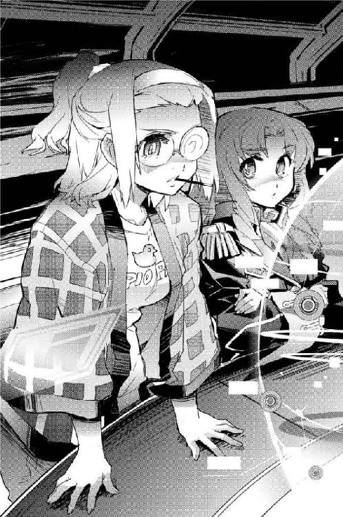
「ふむ」
クーリエの顔と会議卓の銀河系宇宙を見比べて、ケンジョーは茉莉香に目を戻した。
「弁天丸は、接触した敵艦がデアフリンゲ級だと確認出来ているのか？」
「パターン認識でデアフリンゲ級だと推定されただけです」
茉莉香はすぐに答えた。今、銀河にあるすべてのデアフリンゲ級の中にあの日あの時たう星系に居たものがないと知った時に、茉莉香はその可能性を考えていた。
「中距離電子戦と対艦機動戦闘、うち一隻に最接近した時も敵は猛烈な電子妨害を掛けていました。ノイズだらけの観測データならたう星系に提出したのと同じものがありますが、相手がデアフリンゲ級と確認出来るようなデータは残念ながらありません」
「まだ納入されていないデアフリンゲ級が出てきた可能性は？」
矢継ぎ早のケンジョーの質問に、今度はクーリエが答えた。
「ゼロではありません」
クーリエは、デアフリンゲ級の建造リストを下にスクロールさせた。完成、納入済みの艦名の下に、建造中、計画中、検討中のステータスが表示されたリストが続く。
「現時点で建造中のデアフリンゲ級は八三隻、他に同数の商談中、計画中の艦体があります。まあそっちは宣伝もあるでしょうから話半分で聞くとして、気にしなきゃならないのはルーベ・マスで建造中になってる八三隻分」
クーリエは、就役中のデアフリンゲ級のすぐ下に続くリストを拡大した。
「ステータスは建造中でも、細かく見ていけば艦体は完成して最終チェック中だったり、メーカーテストですでに宇宙に出てたりするものがあります」
民生用でも軍用でも、宇宙船はよほどの量産型でもない限り完成したらそのまま依頼主に引き渡されるということはない。メーカーは最低限のチェックを行い、完成した製品に問題がないことを確認してから初めて商品として出荷する。
高価で多機能な軍用宇宙船ともなれば、メーカー側で行わなければならないテストやチェック項目も多岐に渡る。整備や調整が必要な部分も多いから、完成した宇宙船が右から左に依頼主に引き渡される訳ではない。
「しかしまあ、完成直後の艦体をチェックもなしに実戦に駆り出すような真似でもしない限りは、実戦投入出来る状態は限られます。現実的に考えて艦体と兵装の全ての機能確認を終えて最終チェック中の艦体、というとこの辺りですか」
クーリエは、完成予定日がすぐ近くにまで迫っている六隻のデアフリンゲ級の艦名を選んで点滅させた。
「他にあと二隻、艦体は完成して進空しているものがありますが、全ての艦の所在とスケジュールは判明しています。もちろんメーカー発表ですから、どこまで信用するかどうかはこっち次第ですが」
クーリエは、リストの中の艦名を点滅させたままケンジョー船長を見やった。
「しかし、もし万が一メーカーが納入前の軍艦を実戦投入、しかも不正規作戦させたなんてことになれば、信用問題になりますね」
「金で買える信用なら、奴らいくらでも金を積むぜ」
ケンジョーはふんと鼻を鳴らした。
「金で磨ける信用ならなおさらだ。なんせ商売の桁がこちとらとは大違いだからな」
「たかが海賊を相手に積むほどの金額じゃありません」
クーリエの瓶底眼鏡がきらりと光った。
「もしなにか、別な商売が関わってるというなら話は違うでしょうけれど」
「ほお？」
ケンジョーが興味深げに言った。
「造船会社が、海賊相手にするには不似合いなほど金を積み上げる商売に手を出したか？」
「黒幕が造船会社とはまだ決まっていません」
クーリエは簡単に否定した。
「確かにルーベ・マスはポルト・セルーナにも事務所を構えていますが、専用ドックまでは持っていません。ポルト・セルーナには期間貸しのドックもありますが、こちらのデータではルーベ・マスが借りているドックもありません」
クーリエの瓶底眼鏡がケンジョーに向いた。
「それくらいのデータは、そちらもご承知でしょ？」
「ルーベ・マスが表向きの黒幕でないにしても、儲け仕事なら集ってくるやつはいくらでもいるぜ。では、デアフリンゲ級のデータはどう解釈する？」
「保険組合が、輸送船マリア・フォルテが星系軍と帝国艦隊に提出された戦闘情報を確保してくれました」
円卓中央に映し出されていたポルト・セルーナ・ステーションの画像を消して、クーリエは新しいデータをどさっと映し出した。
「もちろん、この戦闘記録は輸送船によるものですから、弁天丸ほど細かく敵艦の様子は記録されていません。しかし、こちらの記録ではほとんど戦闘に参加していないはずの敵艦がデアフリンゲ級だと識別するに足るだけのデータは観測されています」
クーリエは、ほとんど経過時間のまま整理されていない記録データから、いくつかのポイントをプロットしてみせた。
「戦闘艦でもない、自分の運行記録さえきっちり記録出来ればいいはずの輸送船が、遠距離での加速パターンや機動パターン、エネルギー放射など、いくつかのデータを付き合わせればコンピューター任せの自動マッチングでもデアフリンゲ級だと判断出来るだけのデータを提出しています。対する弁天丸のデータなんかは、まあこっちが積極的に電子妨害して身を隠してたせいもあってろくなもんじゃないんですがそれでも最低限のデータは押さえてる」
「ふむ」
時系列順に並んでいる戦闘データを自分の目の前の個人用ディスプレイにざっくり流して、ケンジョーは顔を上げた。
「素人の生記録にしちゃ、出来すぎな戦闘データだな」
「軍出身者がブリッジクルーにいれば戦闘情報の取り方なんぞ先刻ご承知でしょうけど、それにしてもこのデータは弁天丸を無法者の海賊指定したいものがいるとすればそれに都合良く出来すぎてる。こっちの戦闘記録と最低限の辻褄だけ合わせ、戦闘相手の艦種特定まで可能なように出来てる。にもかかわらず、そのデアフリンゲ級は未だに特定出来ない」
クーリエは、円卓に着いている一同の顔を見廻した。
「わたしは、マリア・フォルテを襲ったデアフリンゲ級は実在しない、と思っています」
クーリエの言葉に表情も変えない茉莉香船長を見て、ケンジョーはクーリエに目を戻した。
「それは、弁天丸の総意か？」
「弁天丸の電子戦担当の結論だと思って貰って間違いありません」
クーリエは、ちらりととなりの茉莉香に目を走らせた。茉莉香は承知しているように頷いた。クーリエは続けた。
「船型やエネルギーパターンの偽装なんて、うちの宇宙船でもときどきやる手です。トランスポンダーの偽装くらいなら、そこらへんの密輸船だってやってます。正体を隠すなら、消えてみせるよりも偽物のシルエットを被って化ける方がはるかに簡単ですから」
「今回の敵艦が、それをやっていたと？」
「おそらく」
クーリエは、円卓の中央に弁天丸の戦闘情報を映し出した。
「これが、今回の戦闘データです。詳細の説明は省きますが、弁天丸は最低三隻の敵艦が形成している濃密な電子妨害のただ中に飛び込んだので、最初の接触から最後の離脱に至るまで完全なデータを得らえていません。専門家として言わせて頂けるなら、この状況を作り出すのはそれほど難しくありません。弁天丸に最接近する一隻さえ充分な装甲と機動力を持っていれば、あとの仕掛けはプローブだけでも可能です」
クーリエは、弁天丸が戦場にタッチダウンしてから離脱するまでの軌跡を流してみせた。
「姿を見せる役と囮役が決まっていれば、もちろん相応の仕掛けは必要ですが、たった一隻のこちらを欺瞞することなど簡単です」
「相手が弁天丸でも？」
ケンジョーの言葉に、クーリエは頷いた。
「最初っからうちを相手にするつもりで準備してれば、簡単です。実際に戦闘して沈めようとかってんならともかく、軽く揉めてみせようってだけなら、準備はともかく用意しなきゃならない装備もそれほどじゃないでしょう」
「つまり、相手はデアフリンゲ級じゃない、ということか」
「全ての居場所がわかっているデアフリンゲ級にこだわるよりも、敵がデアフリンゲ級に化けたと考える方が自然だってことです。ただし、そのためには敵がデアフリンゲ級のデータを確保している必要があります。弁天丸のマッチングデータをごまかせるくらい、確実なデータが必要ですね」
「そのデータは、どこにある？」
ケンジョーの眼が、クーリエから動かない。
「デアフリンゲ級の確実なデータを持っているのは、どこの誰だ？」
「まず第一に、デアフリンゲ級を量産している造船会社」
クーリエはすらすら答えた。
「こっちのデータで捉えたデアフリンゲ級の改造要目は、実は今までに就役した艦の中には存在しません。しかし、デザインからシミュレーションまで行うルーベ・マスなら、デアフリンゲ級をベースにしたどんな改造艦でも簡単にデザイン出来るでしょうし、そのデータをそれを必要とするところに提供することも簡単でしょう」
「こっちの期待通りの答えだ。ありがとよ」
ケンジョーは手を挙げた。
「つまり、今回の黒幕は帝国艦隊に顔が利いて、なおかつルーベ・マスみたいな造船会社からも新鋭艦のデータを得られるような奴だってことだ」
ケンジョーは、円卓の顔を見廻した。
「そして、わざわざデアフリンゲ級の皮を被って出てきたってことは、弁天丸が戦った相手はもっと違う形態をしてると思った方がいい」
「同感です」
クーリエが答えた。
「弁天丸の戦闘記録から逆算すると、敵は最低三隻、おそらくは六隻以上の電子戦艦隊ではないかと考えています。相手が一隻で飛び込んでくるとわかっているなら、正面会敵で姿を見せる艦一隻を正面に、あとは周囲に配置して裏方やらせればなんでも出来ます」
ケンジョーは頷いた。
「そこまではこっちの予想と同じだ。だが、そこから先がわからない。敵より多い数で当たれってのは基本中の基本だが、残念ながら現実の事情って奴はそんな都合通りに行く訳じゃない。最初から有利な数を揃えているなら、そのまま数で押していく方が簡単で手も掛からない。圧倒的有利な状況に、わざわざ艦種まで偽装して中途半端な戦闘を行う必要がいったいどこにあるのか」
「よろしいですか？」
グリューエルが発言を求めるように挙手した。ケンジョーは答えた。
「どうぞ、プリンセス」
「興味深いお話です。わたくしは戦闘については素人ですが、戦争は必ずしも軍事的状況によってのみ起きるものではありません。というよりも、政治的状況から戦闘行為が求められることも多くあります。もし、おっしゃるような幽霊艦隊が実在するとしたら、それは政治的要求に応じたどんな偶発的戦闘も起こすことが出来るのではないでしょうか？」
「火付け、か」
ケンジョーが呟いた。戦争や紛争を起こすことを火事の放火になぞらえて火付けという。
「火付け、というのですか？」
グリューエルは興味深げにその言葉を繰り返した。
「もし、複雑な立場に置かれている国家なら、いろいろと使いようがあると思います」
「外交と併用しての揺さぶりにはいろいろ有効だろう」
ケンジョーは太い腕を組んだ。
「だが、戦争も外交も相手がいなきゃ出来ない。艦隊ごと偽装して都合のいい状況を作り出しても、相手をうまく乗せなきゃ一人芝居だし、もしこっちが猿芝居したなんてことがばれれば信用に傷が付く。作り出そうとした状況がまるごとこっちに返ってくるような負け試合になるぜ」
「一人芝居も猿芝居も、よくあることですよ」
グリューエルは、無邪気な笑顔のまま言った。
「無垢の信用なんか、どこにもありません。信用なんて、互いの立場と都合によってある振りをしているだけの見せかけです」
グリューエルはいささか驚いた顔の海賊たちを見廻した。
「って、おじいさまに聞きました」
「星王家の外交方針は、おそろしく実戦的だな」
ケンジョーは控えめな感想を述べた。
「つまり、見えない艦隊はそれなりに使い途がある、ということか」
「星系や星区を守る、拠点防衛が専門の星系軍や防衛軍には有効な戦力ではないでしょう」
ベルマー大佐が言った。
「しかし、辺境で反乱軍を相手にしている帝国艦隊や侵略会社ならば、いくらでも使いどころがあるのではないでしょうか」
「海森星も海明星も田舎だが辺境じゃない」
ケンジョーは大佐を見返した。
「つまり、帝国領内のみならず辺境でも手広く商売出来るような相手が今回の黒幕だと、そういうことか？」
「残念ながら王立情報部では、バルバルーサの海賊免状を買い上げたトアール・コンツェルンと海明星でのマリア・フォルテ襲撃との関連を見付け出すことは出来ませんでした」
ジャクリーンが話を引き取った。
「マリア・フォルテ襲撃の件に関しては、弁天丸の戦闘情報とたう星行政府経由で発表されたマリア・フォルテのデータを付き合わせて検証しましたが、マリア・フォルテの戦闘データが偽造であるとの確証を得るには至っていません。しかし、デアフリンゲ級ほどの機動巡洋艦を最低三隻も展開させて痕跡も残さずに消えてみせるのですから、その組織力は最低でも大手侵略会社の艦隊くらいはあると推測されます」
「相手の見当くらいはつかないかい？」
ジャクリーンは笑みを湛えたまま首を振った。円卓の中央にずらっと会社のリストを映し出す。
「機動巡洋艦隊規模の戦力を極秘裏に運用出来るだけの余力を持った防衛軍や会社艦隊はそれほど多くはありません。しかし、もしデアフリンゲ級を主力とした巡洋艦隊が火付けのための幽霊艦隊なら、それを運用しているのは場所に付く防衛軍ではなく、組織に付く会社艦隊でしょう」
「まあ、あちらさんも危ない橋渡ってるのは百も承知だろうからなあ」
ケンジョーは、映し出された侵略会社や軍需産業のリストに目をやった。
「機密保持には並み以上に気を使ってるだろう。そう簡単にはあぶり出せないか」
「でも、たぶん、このリストの中でセルーナにも支社がある会社が、バルバルーサを持っていったんですよね？」
茉莉香が言った。
「まずは、バルバルーサを取り返しませんか？」
ケンジョーは、茉莉香の顔をまじまじと見直した。
「そりゃあ願ってもないありがたい提案だが、今うちの船がいるのは帝国艦隊の基地のど真ん中だぜ？」
「でも、企業エリアで軍港じゃないんですよね？」
慣れない手付きでコンソールを操作して、茉莉香は円卓の中央にポルト・セルーナ・ステーションの全景を映し出した。
「それに、帝国艦隊は海賊相手にあんまり本気じゃないみたいな状況です。バルバルーサは、軍の管理下じゃなくてセルーナでお仕事してる民間企業のドックに入ってるんだから、取り返すならうっかり分解される前の今のうちだと思うんですけど」
茉莉香は、ステーションの全景からケンジョーに視線を移した。
「今、バルバルーサの私掠船免状はどうなっているんですか？」
「こっちの手にあるよ」
ケンジョーはバックレストに広い背中をもたせかけた。
「エージェントに渡した私掠船免状は、その気になって調べれば専用機器がなくても偽物だってわかる程度の代物だ。バルバルーサごと渡したから、すぐに文句言ってくれば鑑定にしばらくかかるようなもっと出来の良い偽物渡してやる予定だったんだが、たぶんエージェントの奴ら、うちの私掠船免状は玉手箱に入れっぱなしで開けてみてもいないんじゃねえかな」
「エージェントは、私掠船免状と海賊船を手に入れて、海賊業を引き継ぐつもりだったんじゃありませんよね？」
確認した茉莉香に、ケンジョーは頷いた。
「バルバルーサで仕事しようと思ったら、船と免状ともうひとつ、資格のある船長が必要になる」
ケンジョーは太い親指で自分の胸を指した。
「海賊するなら、おれっちか、あるいは直系の継子が乗り込んでいる必要がある。旧植民地連合から私掠船免状貰った海賊ってのは、だいたいみんなおんなじ条件で海賊してるはずだ」
「それじゃ、海森星行政府の中では、今もバルバルーサが変わらずに海賊をしていることになってるんですね？」
「おう、そのはずだ」
ケンジョーはにやりと笑った。
「いちおう所轄の省庁に話は通してあるからな、期限いっぱいはうちの海賊免許は有効なはずだ。偽の免状を掴まされたエージェントが海賊資格の停止でも海森星政府に願い出てくれればちったあ面白いことになると踏んでたんだが、今のところそんな気配もなし」
ケンジョーはぱたぱたと手を振った。
「まあ、船押さえておけばこっちは自動的に海賊出来なくなるから、わざわざ海賊免状の返上とか停止とか願い出るまでもなくしばらく放っておきゃ自動的に使えなくなるのも確かなんだが」
「だから、船長は詰めが甘いんです！」
ノーラがぴしゃりと言った。
「持久戦になったら不利なの解ってて、大事な海賊船まで相手に渡しちゃうんだから、いったいこれからどうする気です!?」
「セルーナに行きましょう」
凜とした声に、全員の視線が茉莉香に集まった。茉莉香は、全員の顔を見廻してからもう一度言った。
「ポルト・セルーナ・ステーションに行きましょう。そこに、正義の海賊を邪魔にしてる今回の黒幕、その手先でもいるはずだし、もしいなかったとしてもバルバルーサは取り戻さなきゃなりません」
茉莉香はケンジョーに視線を向けた。
「それとも、バルバルーサを取り戻すのはもっと後でもいいですか？」
「そりゃあ、一刻も早い方がありがたい」
ケンジョーは両手を挙げた。
「ポルト・セルーナには帝国艦隊ご自慢の最新設備が揃ってる。もし無人ドックにバルバルーサ放り込んで、ロボットに解体コマンドでも出せばうちの船なんぞあっというまにジャンクの山に戻されちまう。まあ、部品さえ揃ってれば元通り組み立てるんだってロボット任せで行けるし、竜骨の形さえ残ってればあとは新品で組んだっていいんだが、その場合こっちの慣熟訓練がたいへんだあな」
ケンジョーは円卓に片肘を突いて身を乗り出した。
「本音を言えば、一刻も早くバルバルーサを取り戻したいところだ。だが、具体的にどうやって企業区画とはいえ軍の補給基地にしまい込まれたおれっちの海賊船まで辿り着く？」
両隣のミーサとクーリエにちらりと目線を走らせてから、茉莉香は口を開いた。
百眼が茉莉香船長からの通信を受けたのは、再配線のためにあちこちのアクセスパネルが全開のまま結線も部品も雑然と撒き散らされておもちゃ箱をひっくり返したような状態になっている弁天丸のブリッジだった。
「出航が決まった!?」
船長席廻りの配線をやっつけながら、百眼はヘッドセットのマイクに叫んだ。
「今そう言いましたか船長？ 言った？ あーやっぱり聞き違いじゃなかったか、いえ、大丈夫です、仰せの通り三時間以内でいつでも出航出来る体制のまま整備作業しております。カメラ？ ああ、ブリッジのカメラ今まとめて再設定中で、音声のみなのは別にお見せ出来ない状況とかそういう訳では全然」
作業の効率化のために船内の重力は切られている。百眼は、ワイヤレスヘッドセットにぺらぺら答えながら船長席から離れた。指さし確認で遊んでいる結線がないのを確認、ブリッジでいちばん散らかっているレーダー／センサー席に飛ぶ。
「ええ、そりゃもちろん、三時間どころか今すぐ緊急発進しろってんならそれでもなんとかなりまっせ。そりゃもちろん。ええ。それほど急ぎじゃない？ そりゃ良かった、んじゃ出航スケジュールさえ決定して下さればその通りに弁天丸を仕上げて、ええ、そりゃもうセレニティ宇宙軍の全面的な協力によって、弁天丸はじまって以来ってくらい充実した状況で、今なら帝国艦隊だって相手に出来まっせ」
作業の邪魔だからシートは取り外してあるレーダー／センサー席に降りて、百眼は溜息混じりに自分の持ち場を見廻した。
「はい、一二時間後出航ならそりゃもちろん余裕を持って船長をお迎え出来ます。え？ お客さん？ バルバルーサの乗組員がこっちに？ 全員は無理ですぜ、船の規模が倍以上違うんだから。えー、そりゃまあ、短期間なら倉庫空けたりあっちこっち間借りしたりしてなんとかなるとは思いますが、んな団体さん乗っけていったいどこに？」
自動チェックが終わっているパネルのレポートを開きかけていた百眼は、ヘッドセットを押さえて聞き直した。
「ポルト・セルーナ・ステーション？ そうおっしゃいました？ この近所じゃ最大の帝国艦隊の基地ですぜ？ 船長？ 弁天丸が海賊指定手配されてるってのはもちろん承知で？ へい、承知してるならいいんですが、で、バルバルーサの乗組員まで引き連れてそんなところへ一体なにしに？」
ヘッドセットを押さえていた百眼の口がほけっと開いた。
「帝国艦隊に、自首するって!?」
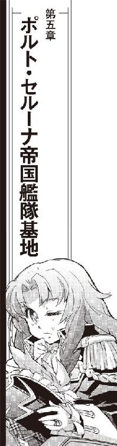
メインスクリーンに、ポルト・セルーナの全景が映し出されている。
「修理は？」
かつて最前線の要塞として建造され、現在は外縁部を守護する銀河帝国第五艦隊の要衝であるポルト・セルーナは、軍港としては最大規模の全容を弁天丸の光学センサーに映し出されていた。
「ほんっとーに、全部終わったの？」
「終わった終わった、もーお完璧」
ハイドロスパナ片手にレーダー／センサー手席を囲むコントロール・パネルの下から這い出してきた百眼が、大きく後退させたシートに積んであった工具箱を開いた。
「接続の怪しかったところも全部やり直したし、バージョン違いで不具合出てたコントロールのソフトも安定版で揃えてばっちり動くようになってる。できれば二～三日かけてみっちり作動テストでもすればしばらくほっておいたってびくともしないようなセッティングが出せるが、さすがに今そこまでやってる時間はないか」
手に持っていたハイドロスパナだけでなく、腰廻りのベルトに差したり固定したりしていた各種工具を年代物の工具箱に押し込んで、百眼は無理矢理ふたを閉じた。閉まりきらない。
「センサーもクリーニングにオーバーホール、ものによっちゃーセレニティじゃ型式遅れでもうちにはもったいないような高性能パーツに交換されてますからねえ、見てくれこの光学観測画像」
閉まらないふたをがちゃがちゃ揺すって無理矢理ストッパーをかけた百眼は、座面から持ち上げた工具箱をシートの後ろに戻した。
「大昔の機動要塞だから低視認性で真っ黒なステーションなのに、可視光線の光学画像でここまでばっちり見えるんだぜ」
「メインスクリーンは掃除しただけよ」
こちらはいつもどおり電子戦パネルに駄菓子だのドリンクパックだの拡げて平常運転状態のクーリエが棒菓子をくわえたまま言った。
「輝度も解像度も前と一緒。ポルト・セルーナが光学迷彩かけてるわけでもないし、たぶん見え方変わってないんじゃないかな」
「クーリエのところも！」
船長席の茉莉香は声を上げた。
「ケインのところも百眼のところもシュニッツァーのところも！ ほんっとーに全部修理終わってるの!?」
「あたりまえじゃないか」「もーおばっちりですぜ」「艦載兵装は完全な状態に保たれている」
操舵席、機関士席、戦闘指揮官席から返事が重なって返ってきた。茉莉香は、すべての機器に灯は入っているものの床面には工具箱だのパーツケースだのが積み上げられ、あちこちのアクセスパネルも開きっぱなし、正規の場所に戻されていないカバーや得体の知れないジャンクが置きっぱなしにされて獣道程度の動線しか残されていない弁天丸のメインブリッジを見廻した。
「どうにも信用できないのよねえ」
船長席廻りの操作卓やディスプレイの配置に変更点はない。分解掃除くらいは行われたのか、多少きれいになったようには見える。
「すぐに対艦戦やるみたいな状況じゃないからのんびりしてるんじゃないの？」
「のんびりしてるとは心外だな船長」
いつもなら操舵輪のまわりには小さなコントロール・パネルしか展開していないケインが、平面立体取り揃えたディスプレイの表示に埋もれて細かい調整を続けている。
「この三六時間ばかり、弁天丸は茉莉香船長はじまって以来ってくらいの修羅場続きだぜ」
「だから！」
茉莉香はもう何百回口にしたかも知れない文句を言い出しかけてぐっとこらえた。
一二時間の猶予の後に戻った茉莉香を待っていたのは、出港準備はすべて整ったという報告とは裏腹に棚卸しのように散らかった弁天丸だった。ブリッジクルーは口を揃えてすぐに出港可能、戦艦隊相手の機動戦闘だって余裕だと主張したが、信用出来るわけがない。慣性制御装置の限界を越える戦闘機動を行うことも珍しくない弁天丸のブリッジのみならず戦闘区画や機関区、通路にまで交換部品やジャンクやゴミが散らかっているとなれば、実戦になれば何が起きるか簡単に想像がつく。
「......もし、どこかの誰かが弁天丸を狙うとしたら、最大のチャンスだったなー」
艦長席に沈み込んだまま、茉莉香は小声で呟いた。
セレニティ宇宙艦隊司令部のエリザベス・ドックから引き出された時の弁天丸は、まだ細かい姿勢制御が自力で出来ないような状況だった。ケイン以下の担当乗組員は打ち合わせでもしたように現状でも船体の微細な制御が必要になる出港も自力航行も可能だと報告したのだが、船内の状況を自分の目で確認した茉莉香がそれを許さなかったのである。
弁天丸は艦隊司令部所属のタグボートで閉鎖系ドックから引き出された。司令部から充分な安全距離をとるまでタグボートに曳航を任せた弁天丸は青の姉の管制圏内で自由航行に移った。
コーバック級護衛艦三隻に護送されるというよりは護衛される形でゆっくりとセレニティ星系外まで出た弁天丸は、単独航行に移った。
航路帯を通らない超光速跳躍を細かく刻んで、弁天丸はポルト・セルーナの帝国艦隊基地を目指した。航路帯を避けたのは第三者に不必要に弁天丸を見せるのを避けるため、長距離跳躍一回で跳べる距離を細かく刻んだのは整備完了した弁天丸の各部調整のため、と茉莉香には説明された。わざわざ暗黒星雲だの小惑星岩礁域だのを選んで跳んでいくといっても、それが帝国艦隊基地に到着するまでの時間稼ぎであることは明白である。
「ほんっとーに大丈夫なの!?」
茉莉香は、これも何百回したかわからない質問を繰り返した。
「機関系異常なし！ 阿号、吽号ともに正常運転中！」
機関士席の背後に山のように工具箱を積み上げたまま、三代目が景気よく応えた。
「レーダー／センサー系、全系統異常なし！」
やっとシートを通常の位置に戻した百眼が、手の届くすべてのコントロール・パネルに指を滑らせながら応えた。
「操舵系問題なし！」
両側に多重表示していた各種ディスプレイを次々に閉じたケインが操舵輪を握り直した。
「航法系すべて正常」
ここだけは前と変わらずすっきり片付いているように見える航法士席で、ルカがいつもと同じように応えた。
「弁天丸艦載兵装、全系統異常なし」
戦闘指揮官席のまわりにいつもより多めのディスプレイを展開しているシュニッツァーが、散らばっている部品や工具など目に入っていない様子で返答した。
「ただし、もちろん現状では戦闘準備はしていない」
「電子戦系、いつでもおっけー」
こちらは前よりもさらに雑然としているように見えるが、ジャンクフードやドリンクパックの比率が多いからあまり変わっていないのかもしれない電子戦席でクーリエがいつものように応えた。
茉莉香は、通信用のヘッドホンマイクを耳に当てた。全船に自分の声が流れるようにチャンネルを選ぶ。
「こちらメインブリッジ、船長の加藤茉莉香です。弁天丸はこれから銀河帝国艦隊のポルト・セルーナ基地と直接連絡を取ります。最悪の場合、いろいろ不味いことになると思いますが、まだ準備が出来ていないところはありますか？」
茉莉香は、メインディスプレイの船内配置図と構造図に目をやった。乗組員が配置されている全部署、配置されていないレーダーやセンサー、艦載兵装区画からも異常なし、問題なしを示すグリーンサインが返ってくる。
「信用するのも船長の仕事、だっけ」
口の中だけで呟いて、茉莉香はマイクのスイッチを入れ直した。
「弁天丸、全船異常なし、確認しました。これより、帝国艦隊ポルト・セルーナ基地に向かいます」
ヘッドホンマイクを耳にはめて、茉莉香は船長席に座り直した。
「それじゃ、弁天丸、行きましょう。百眼、ポルト・セルーナに連絡取って」
「はいはい、発、たう星系所属私掠船」
メッセージの定型をディスプレイに呼び出した百眼は、思い付いたように一部を書き直した。
「じゃなくて、発、海賊船弁天丸、宛、ポルト・セルーナ管制。入港希望、と」
ポルト・セルーナは帝国第五艦隊が守護する帝国外縁部でも最大級に属する宇宙基地である。寸法や規模、居住人口で比べるならもっと大きな宇宙都市もいくつかあるが、軍の基地としてはこれより大きなものは帝国中央の核恒星系にしかない。
艦隊への整備と補給、乗組員の交代や休養など、基地の機能は多岐に渡る。帝国内外への定期航路も拓かれており、ポルト・セルーナはハブステーションとしても知られている。
入出港する船はこの規模の他のステーションと比べても多い。作戦のために出港、作戦を終えて帰還する艦隊だけではなく、訓練や試験、調整のために入出港する軍艦や小型機、補給部品や人員のための定期便や特別仕様の輸送船などが入り乱れるから、軍主導の管制空域は通常のステーションより広く、指示も細かい。
これだけの規模の空間管制には、時間が掛かる音声通信よりも一瞬でデータのやりとりが終わるデータ通信が主に使われる。音声通信でも船名やＩＤ、船によっては積載品目や乗員名簿まで提出を求められることもあるから、データ通信は必須である。
ポルト・セルーナ管制は高度に自動化されている。非常事態や特別な場合を除いてはほとんどの宇宙船の管制は自動で行われる。呆れたことに、弁天丸の入港申請にはあっさりと自動の入港許可が返ってきた。
「これだけ？」
船長席のディスプレイに映し出されたポルト・セルーナ管制の簡単な入港許可を見て、茉莉香は声を上げた。
「せっかく海賊が自分から出てきてあげたっていうのに、こんな簡単に入港許可寄越すだけ？ 百眼、ちゃんと用事書いたの？」
「書きましたよお、ちゃんと、帝国艦隊に弁天丸が海賊指定手配されちゃったんで申し開きしに来ましたって」
百眼は自分が送った入港申請の文面をディスプレイに呼び出した。
「しかしまあ、相手は自動応答してるポルト・セルーナのロボット管制だ。基地に入る宇宙船の事情までいちいちチェックして判断してるとは思えないから、宣戦布告だの攻撃宣言だのの物騒な目的でもない限りはまずは入港させてくれるんじゃないのかな」
「そんないーかげんな......」
茉莉香は唖然と呟いた。
「いや、そーでもないぜ。こっちはステーション内の港湾地区への入港を希望したんだが、管制が今の段階で指定してきたのは外の錨泊空域だ」
百眼の説明に合わせたように、ルカがポルト・セルーナの管制空域に進入する弁天丸の予定航路をディスプレイ上に映し出した。
「いくら大きな艦隊基地だって、ステーション内の閉鎖系には限られた桟橋しかないから、入港申請してくる船全部中に入れるって訳にはいかないだろう」
弁天丸の予定針路を読み取ったケインが言った。
「こっちの希望が整備でも補給でもないとなれば、わざわざ中に入れなくても用事は足りるからな」
宇宙ステーションはその近傍空間に広大な錨泊空域を設定している。全ての宇宙船を港湾地区に入れたり桟橋にドッキングさせなくても、錨泊空域に船を置いて艀や連絡艇を往復させれば人員の移送や貨物の積み替えも出来る。
「それにしたって、こっちは大砲だって持ってる手配中の海賊なのよ」
茉莉香はぶつぶつと言った。
「その気になれば艦隊基地に一発ぶちかますことだって出来るのに、放任が過ぎるんじゃないの」
「こちとら辺境から来た未確認艦でもない、第五艦隊とは何度も一緒に演習してる海賊だからねえ」
百眼はいつもどおり弁天丸周辺を行き交う宇宙船のデータ収集を開始している。
「ポルト・セルーナの管制にだってこっちのデータはあるはずだ。敵性艦じゃないのは解ってるから、そりゃあ入港申請くらい簡単に通すだろうねえ」
「だからって、錨泊空域指定してそれだけなんて」
「まあ、ロボット管制じゃ判断できないところに関してはちゃんと然るべき場所に問い合わせが行くはずだ。ポルト・セルーナの帝国艦隊がよっぽどぼんくらじゃなきゃ、そのうちどっかが名指しで呼び出してくれるよ」
百眼の目の前で通信パネルが呼び出し音とともに点滅を開始した。
「ほら来た！ 船長、管制からお待ちかねの問い合わせですよ」
百眼は、画像付きで来た呼び出しに出た。
「はいこちら弁天丸、海賊船弁天丸、お呼びによって即参上と」
通信相手を確認する。
「......憲兵隊!?」
『こちら、帝国第五艦隊ポルト・セルーナ基地付き、軍警察巡視艇ＫＰ93号艇長ピーター・ホーガス大尉です』
通信モニターに現われたのは、もじゃもじゃ頭に制帽も載せずだらしなく制服を着るというよりは羽織っただけの風采の上がらない中年男だった。
『ええと、そちら、たう星系の私掠船、弁天丸、さん？』
「こちら私掠船弁天丸」
百眼は緊張した面持ちで応答した。
「通信担当の百眼です」
『私掠船弁天丸と』
通信モニターの外に目を落とした軍警察の大尉が言った。
『はい、トランスポンダー確認。どうも、いつもお世話になってます。どうしました？』
「ええと、ですね」
茶飲み話のような口調に、百眼は通信回線を確認した。帝国艦隊の巡視艇との通信回線には暗号化もなにもかけられていない。通信内容はだだ漏れと思った方がいい。
「実はこの弁天丸、ご存知の通り星系行政府公認の私掠船やってるんですが、どういうわけかそちらの帝国艦隊から海賊指定手配されちゃったみたいで、そりゃ困ったなーと思って話しに来たんですが」
『海賊手配？ そちらさんが？』
ホーガス大尉はモニター外に映し出されているらしい資料と百眼の顔を見比べている。
『そりゃ大事だ』
「ちょっと」
わざわざ船長席から降りてきた茉莉香が、電子戦席で通信に聞き耳を立てているクーリエの横に屈み込んだ。
「ちゃんと連絡取ってくれたんでしょうね？」
スナック菓子をもぐもぐしていたクーリエの口の動きが一瞬止まった。
「そりゃもう、船長のご命令ですから、仕方なく情報部経由できっちり連絡は取りました」
茉莉香から目を逸らしたまま、クーリエはぶっきらぼうに答えた。
「ただし、ナッシュがどこまで手を廻してくれたかまでは知りません」
「確認しなかったわけないでしょ？」
茉莉香は小声で訊いた。
「プライベートは知らないけど、クーリエが仕事でそんなところに手を抜く訳ないもん」
動かしていたクーリエの手が止まった。ごくん、と呑み込んで、お代わりのスナックにゆっくり手を延ばす。
「中央の情報部から第五艦隊に、連絡は行ってるはずです。けど、現場レベルでどうなってるかまでは解りません」
「そうよねえ」
「それともうひとつ。船長もお気付きでしょうけど、この通信はフルオープンです」
クーリエは、片耳のヘッドホンに軽く触れてみせた。
「それは、向こうも承知しているはずです」
『はい、確認取れました』
やっと大尉が通信モニターに顔を上げた。
『確かに、海賊船弁天丸は海賊指定手配されています』
「あのー、まさかとは思うんですが」
百眼がホーガス大尉に質問した。
「うちが海賊に指定されたって情報、そちらには反映されてないんでしょうか？」
『どうなんでしょうねえ』
大尉はあいまいに首を振った。
『ステーションの情報は超光速回線で艦隊司令部とすぐに同期されるはずですが、なんせ更新情報は莫大な量になりますから、末端の現場のこちらまで反映されるのも時間が掛かりますし、それも重要情報じゃなきゃどっかで抜け落ちたり忘れられたりなんてこともない訳じゃないですから』
「おいおい」
百眼は思わず呟いた。
「そんなんでよく帝国艦隊動いてるもんだな」
『ある程度緩くしとかないと、スムーズに動いてくれないんですよ。なにせこれだけの大所帯ですから、はい』
のんびりと手許のコントロール・パネルを叩きながら、大尉は続けた。
『更新される情報量は莫大ですが、必要な情報にはちゃんとランク付けされて優先で更新されるようになってます。弁天丸の海賊船指定手配が弁天丸のＩＤに連動してないってことは、たぶん艦隊司令部でこの情報がそれほど優先されてないってことでしょうねえ』
大尉はモニターの向こうから百眼を見た。
『あなた方、いったいどうやって海賊指定手配なんかされたんです？ 帝国領内で現役の民間船が私掠船として活動してたとはいえ海賊指定手配だなんて、そう簡単にやって貰えるもんじゃありませんよ？』
「だから、誤解と間違いなんですよ。このまんまじゃいろいろ不便なんで、申し開きして海賊指定を解除して貰おうと思って来たんですが」
『困るんですよねえ』
通信モニター外のあちこちに目を走らせながら、ホーガス大尉は言った。
『海賊相手に掃討戦争やってた大昔だったり辺境に出てる第七艦隊ならともかく、うちみたいに帝国領内で作戦行動してる第五艦隊には対海賊の取り調べなんか専門にしてる部署なんかとっくに改編されてなくなっちゃってて、だからまあうちみたいな港勤務の軍警察に廻されてきたんでしょうけど』
「どうしましょう？」
百眼も調子を合わせて応える。
「こちらとしても無駄に帝国艦隊のお手を煩わせるのも本意じゃないんで、出直せって言われれば出直してもいいんですが」
『ああ、まあ、そうして頂ければこっちもいろいろ楽なんですが、海賊手配まで確認したんじゃそういう訳にもいかないだろうなあ』
ぶつぶつ言いながら大尉はもじゃもじゃ頭を掻き廻した。
『えーと、とりあえず指定の座標まで来て頂けますか？ 錨泊空域に船泊めたら、うちからお邪魔させて頂きますんで。いちおー形だけでも取り調べしなきゃなりませんので』
「えー、ちょっと待って下さいね、船長に確認しますんで」
モニターはオンのまま、音声だけカットして百眼は船長席に振り向いた。
「えー、お聞きのような展開になってますが、どーします船長？」
「海賊相手に、まあいーかげんなこと」
茉莉香は正直な感想を述べた。
「せっかく自首してきたのに、中に入れてくれないで沖留めなの？」
ステーション内の港湾地区に宇宙船を入れず、外の錨泊空域に泊めておくことを沖留めという。
「だったら、簡単に逃げられちゃうじゃない」
「だからって出直してきますんでまた今度って訳にも行かないでしょう」
百眼は、カメラに映らないように通信モニターを指してみせた。
「予定とはずいぶん違いますが、いきなり迎撃されたり追い返されたりするよりはマシなんじゃないかと」
「帝国艦隊のような巨大な官僚組織が相手なのだ」
シュニッツァーが助け船を出した。
「持久戦だと考えてじっくり時間を掛ける方がいい」
「いきなりタマや光が飛んでくるよりずっといいか」
ちょっと考えてから、茉莉香は頷いた。
「解った。それじゃ、管制指定の錨泊空域でお待ちしてますって巡視艇の大尉さんに伝えて」
「はい了解、軍警察巡視艇ＫＰ93号のピーター・ホーガス大尉に錨泊空域での待機を伝えます」
復唱して、百眼は通信モニターに向き直った。
ポルト・セルーナの錨泊空域は他の宇宙ステーション同様に混雑していた。
軍用ステーションの錨泊空域は、軍属専用の空域と民間船専用空域に分けて運用されている。どちらが大きいかはステーションによって違うが、ポルト・セルーナでは民間船用錨泊空域の方がはるかに大きい。そして、軍艦用錨泊空域では軍艦同志の安全距離は民間船のそれの半分以下になり、ぎっしりと詰め込まれるのが常である。
弁天丸が管制により指示されたのは、民間船用の錨泊空域だった。錨泊している船の大部分は輸送船や連絡船などの民間船だが、第五艦隊所属の戦闘艦が契約企業によって整備調整されている場合も民間船用錨泊空域に置かれるので軍艦の艦影も珍しくない。
ポルト・セルーナからは少し離れた外側の錨泊空域の指定座標に到達した弁天丸が艦位を固定すると同時に、巡視艇ＫＰ93号からの接舷要請が来た。担当官が弁天丸へ乗り込んでの事情聴取を行うという。
待ち受ける手間を想像してうんざりしながら、茉莉香は巡視艇の接舷及びホーガス大尉の乗り組みを受諾した。
ほどなく、巡視艇ＫＰ93号が錨泊空域に進入してきた。混雑した空域での追跡戦を想定しているのか、高機動ブースター付きの哨戒艇である。
帝国艦隊の軍警察大尉の乗り込みに、茉莉香は百眼とシュニッツァーを伴って迎えに出た。
「解ってるとは思うが」
船内の無線を通じて送られてくる巡視艇の最新データをチェックしながら、シュニッツァーはエアロックで待つ茉莉香に言った。
「規律を重視する帝国艦隊の中でもとりわけ服務規程に厳しい軍警察で制服をあれだけいい加減に着ているということは、そういう相手だと思った方がいい」
「え？」
茉莉香はシュニッツァーに振り向いた。
「そういう人じゃないってこと？」
「それが出来る相手だということだ」
シュニッツァーは言った。
「軍警察で海賊相手に出てくるのにあんないい加減な格好をしているということは、それが許されるだけの立場と実力を持っていると思った方がいい」
「そりゃ、帝国艦隊勤務ってだけで侮れないとは思ってるわよ」
茉莉香は、通信モニター越しに見たホーガス大尉のもじゃもじゃ頭を思い出した。
「おまけに軍警察ってったら、特殊部隊の次くらいの強面でしょ。油断してる余裕なんかないって思ってる」
「帝国第五艦隊、ポルト・セルーナの軍警察所属ピーター・ホーガス大尉で検索しても名簿の名前しか出てこない」
データ回線での検索を続けながら、シュニッツァーが言った。
「実績も前歴も、出身星系も表示されていない。情報部並みの機密体制だ」
「あらー......」
帝国艦隊所属の人員は、行動中の安全を守るためと機密保持のために個人情報を秘匿されることがある。帝国の頭脳と呼ばれる情報部によく見られるが、最前線で戦う第七艦隊の乗組員、特殊任務中の軍人でも公開されている名簿から名前と所属以外の情報が消されることが多い。
「つまり、それだけの人が来るだろうってこと？」
「軍警察の大尉となれば最前線では最高官位だ。しかも、昔ほど優先順位は高くないだろうが海賊相手となれば無法者を相手にするような即応性も求められる。もしクーリエが中央の情報部に連絡を取り、情報部がきっちり仕事をしてくれたのなら、担当官はそれだけの立場と実力を持っていると思った方がいい」
「そうよねえ......」
茉莉香は暗い顔で頷いた。
「あたしなんかで相手になるかしら」
「うまくお相手しなければ、我々が撃破されるだけだ」
シュニッツァーはこともなげに言った。コントロール・パネルの前に立っていた百眼が報告した。
「ＫＰ93が弁天丸とドッキングした」
ディスプレイの情報が書き換えられていく。軍用ステーションの巡視艇らしいスピーディーな操艦で弁天丸の右舷側にぴたりドッキング位置に着けた巡視艇は弁天丸から繰り出されたボーディングブリッジに接続、気密を確保した。
「来るぞ」
「開けて」
制服の襟廻りを整えて、茉莉香は背筋を伸ばした。外側ハッチに続いて、エアロックの内側ドアが開いた。
「帝国第五艦隊ポルト・セルーナ基地所属、巡視艇ＫＰ93艇長、ピーター・ホーガス大尉です」
制服の前だけは締めてきたものの、襟元は開けっぱなし、制帽もどこかに置いてきたらしい大尉がボーディングブリッジからぐんにゃりした敬礼を寄越した。茉莉香は、まっすぐに指先を伸ばした敬礼を返した。
「弁天丸船長、加藤茉莉香です。ピーター・ホーガス大尉の乗船を歓迎します」
「どんな感じ？」
ブリッジに入ってきたミーサが訊いた。
「憲兵さん、船長室にはいったところ」
電子戦席のクーリエが、ヘッドセットを片耳に当てたまま応えた。
「シュニッツァーと百眼が付いてるから、やばいことにはならないと思うけど」
メインディスプレイには、船長室のモニター画像が映し出されている。型通りの挨拶を終えた大尉はテーブルを挟んだソファで茉莉香と対峙していた。隣に着いた百眼はテーブルに電子ファイルを拡げており、シュニッツァーは船長室のドアで直立不動の姿勢を取っている。
「巡視艇の方は？」
「いつでも緊急発進出来るようにエネルギー反応はちょっと高めだけど、別にそれだけねえ」
クーリエは、ディスプレイを切り換えた。
「今、巡視艇の通信システムは弁天丸と有線接続してるからその気になれば簡単に弁天丸の中を覗けるはずだし、こっちのガードしてないデータに関しては取り放題だけど、そんなことする気配もなし。免状持ちとはいえ海賊船に繋がってる帝国艦艇にしちゃ行儀がいいわ」
「へえ？」
ミーサは、意外そうな顔でサブモニターに映し出されている巡視艇の外観に目をやった。通信システムと機関設備は充実してる小型艇だが、外観からは目立つ兵装は見当たらない。支援を受けられない状態で単機で運用することは想定されていないから、巡視艇は自衛用の小口径ビーム砲くらいしか装備していない。
「こっちからは？」
「行儀がいい相手ってのは、つまりそれだけ余裕があるってことだからね」
クーリエはぽつん、ぽつんとコントロール・パネルを叩いた。
「こっちがなにかしてくるの待ってるのかも知れないから、ＩＤと基本データの確認しかしてない。どのみちメインデータは基地の中にあるだろうから、巡視艇のシステム覗いたって大したネタ持ってるとも思えないし」
「帝国艦隊の巡視艇に接舷されて、軍警察の大尉さんに乗り込まれて、それでうちの連中はおとなしくしてるの？」
電子戦席から離れたミーサは、船長席の横のオブザーバー席に腰を下ろしてメインスイッチを入れた。オブザーバー席は固定されている乗員がいないため、ドック入りでの大整備でも手が付けられなかった。ブリッジ内でも以前と同じ状態を保っている数少ない部所である。
「......そんなはず、ないか」
「ここに来るまでに最低限の整備調整はしたけど、そんなもんで安定してくれるほど素直な宇宙船じゃないからねえ、弁天丸は」
クーリエも、船長室の様子をモニターする片手間に電子戦装備の各系統連携チェックに余念がない。
「機関部なんか、なんとかここまではごまかせたけどこのまんまじゃ戦闘機動する自信がないってんで三代目も機関室に貼り付きっぱなしだし、艦載兵装とレーダー／センサー系も今のうちってんでみんな突貫工事で再調整してる」
「まあ、今の調子じゃ巡視艇はともかくこっちまで緊急発進なんてことにはならないだろうけど」
ミーサは、周辺空域の状況を映し出しているブリッジのディスプレイを見廻した。ポルト・セルーナの錨泊空域に停泊する宇宙船はレーダーの発振を停止することを求められる代わり、中央官制から周辺空域の状況が配信される。管制空域いっぱいに配置されているレーダーサイトや巡回する巡視艇からの情報も加えた中央官制からの最新状況は高精度で有効範囲も大きい。
「あとは船長の時間稼ぎに期待ってところか」
ミーサは、船長室のモニター画像に目をやった。めんどくさそうな顔のホーガス大尉相手に、茉莉香が手真似を交えてあれこれ説明しながら百眼がデータを横目に捕捉している。
「ちょおっと、荷が重いかな」
「以上が、マリア・フォルテ救助のために行った対艦戦闘の展開です」
最接近のあと、たう星系に戻る短距離跳躍まで説明して、茉莉香はホーガス大尉の顔を見た。
「同じデータは海明星管制にも、たう星系軍にも提出されています。事実関係にも時系列にも変更は加えていません」
「いや、まあ、どう戦ったかなんてのはうちじゃなくて他で分析評価してるはずですから」
大尉は船長室への移動の間に前を開けた制服の内懐から取り出した情報端末を素早く叩いた。
「で、仰るとおりの展開なら、弁天丸は民間船を強襲大破させたのではなく、救助に行って追い返されたと、そういうことですか」
「......簡単に言えば、そうなります」
茉莉香は認めた。
「星系軍からの依頼は、救助信号を発信している民間船の掩護と周辺空域の偵察でした。敵戦力はこちらをはるかに上回っていたので、可能な限りの戦闘情報収集しか出来ず、マリア・フォルテに何も出来なかったことは残念に思っています」
「ふうむ」
大尉は、やぶにらみの難しい顔で船長室を見廻した。
「戦闘情報が敵味方で食い違うなんてのは実戦じゃ珍しいことじゃありません。双方示し合わせて実際には戦われていない実戦をでっち上げることだって最前線じゃときどきある」
大尉は茉莉香に片眼を戻した。
「ご存知とは思いますが、どっちが正しくてどっちが間違えてるかってのはあたしが決めることじゃない。より正確には、どの解釈を上が採用するかってことで、あたしみたいな現場はそれに従うだけです」
「はあ」
茉莉香は、目の前の大尉が誰に似ているかやっと思い出した。雰囲気も容貌も喋り方もまるきり違うのに、白凰女学院の教頭、ブラックばばあに似た印象がある。普段と同じことを普段と同じ口調で話しているのに、なにか自分ができるよりも上のことを要求されているような緊張感がある。
「弁天丸の海賊指定手配は、こちらでも確認しました」
大尉は手の中の情報端末の画面を切り換えた。
「帝国領内で海賊が出たなんてことになれば、帝国艦隊にとっては責任問題になりますからね、ほんとだったら艦隊差し向けて捕まえるなり沈めるなりしなきゃならないところなんでしょうが、どういう訳かそういうことになってない。それどころか、ポルト・セルーナに弁天丸が来たって上に報告したら、どんな指令が返ってきたと思います？」
大尉は、情報端末の半立体ディスプレイに表示された文面を茉莉香と隣の百眼に示してみせた。
「事実関係を確認せよってこれだけですよ。こりゃどう見たって指定手配中の海賊相手に軍警察が出す指示じゃない。まあ、おかげでこちらとしてもいきなり海賊船乗組員の皆さんを拘束連行なんてめんどくさいことせずに済んでるんですが」
大尉は、ドアに立つシュニッツァーと百眼を見て、茉莉香に目を戻した。
「ねえ、もしよろしかったら聞かせて頂けませんか？ なんで、よりにもよってポルト・セルーナなんてたう星系からけっこう離れた艦隊基地に自首なんて思い付いたんです？」
「それは、ですね」
身を乗り出した茉莉香はわざとらしく声を潜めた。おつきあいでホーガス大尉が半身を乗り出す。
「この弁天丸を非合法の海賊船にでっち上げようとした悪者が、どうやらこのあたりにいるんじゃないかと思ったからです」
「ほお、それはそれは」
まるきり興味なさそうな声で言って、ホーガスはバックレストに背をもどした。
「それはつまり、ポルト・セルーナに民間の輸送船を強襲した謎の勢力がいる、と？」
大尉は左胸の帝国艦隊の紋章を指してみせた。
「これですか？」
「まさか」
茉莉香は笑って首を振った。
「帝国艦隊がその気なら、弁天丸みたいな独立営業の私掠船なんか簡単に消し飛びます」
茉莉香は、軍警察の黒いジャケットを着るというよりひっかけているだけのホーガスをじっと見つめた。
「帝国艦隊を敵に廻すなら、まずはそう簡単に見つからない外に逃げます」
軍の制服には、階級を示す肩や袖の略章以外にも所属や資格を示すワッペンやバッジが付けられていることが多い。なのに、ホーガス大尉の軍服からは大尉の略章と左胸のポルト・セルーナ軍警察所属を示すＩＤ以外の装飾がない。
「帝国艦隊ではない、と？」
大尉はゆっくりと茉莉香の言葉を繰り返した。
「このポルト・セルーナに、帝国艦隊以外のどんな勢力がいるというのですか？」
「いっぱいいるじゃないですか」
どこまで解って喋らせようとしているのか考えながら、茉莉香は答えた。
「整備や修理担当の下請け民間企業、造船所、軍事開発や運用検討の民間研究所。もちろん、みんな表向きはポルト・セルーナで帝国艦隊の庇護を受けその指揮下にあることになってるでしょうけど、彼らが動かしている戦力は合わせれば独立星系の防衛軍を軽く上回る規模になるでしょう」
「員数外戦力、ですか」
ホーガスは苦虫顔でくちもとを掻いた。
「管制に問い合わせれば、会社任せで外に出ている艦隊の宇宙船がどこでなにをやっているか、全て教えてくれるはずです」
「でも、出航時に管制に提出したとおりのことやってるかどうかなんて、全部監視して確認しなきゃ解らないでしょう」
少しずつ危ない領域に足を踏み入れていることを感じながら、茉莉香は言った。
「ポルト・セルーナには艦隊所属の軍艦だけじゃなくて、納入前の新造艦とか開発中のテスト艦とか、艦隊にも詳細は航海されていない会社の宇宙船もいっぱい出入りしてます。もし、マリア・フォルテに手を出してこっちに罪をなすりつけようとした艦隊がいるとすれば、そういう連中じゃないかと思ってます」
「ふうむ......」
ホーガスは大きく息を吐くように考え込んだ。手の中の情報端末を目の前に持ってきてタップする。
小さなディスプレイから、溢れ出さんばかりの大量の書類がソファの大尉のまわりに立体投影された。
「まあねえ、ほんものの海賊を相手にするにしちゃあ司令部からの通達が甘すぎるんで、中央もいろいろ考えてはいるんでしょうが、問題は離れすぎてる上意なんて現場にはろくに伝わってこないことでしてねえ」
「ほお......」
茉莉香は、となりの百眼が感嘆の声を上げたのに気付いた。覗き見防止設定もなしの立体画像の書面が大尉のまわりを埋め尽くしたのは一瞬だけで、ホーガスはすぐに画面を切り換えた。
「良かったらお聞かせ願えますか？ 弁天丸は帝国艦隊にとって便利な仕事仲間ですが、その正面戦力は大したもんじゃない。ご自分で仰ったとおり、艦隊どころか会社艦隊でも簡単に潰せる程度の戦力でしかない。もし、あなた方の海賊行為が冤罪だとしたら、いったいどこの誰が、なんのためにあなた方を陥れたと考えていますか？」
茉莉香は、ちらりと百眼を見た。百眼は先に進めというようにわずかに頷いた。
「どこの誰がってのは、まさに今のあたしたちが知りたい情報です」
茉莉香は意識してゆっくりと言った。
「なんのためか、という問題に関しては、推測でしか話が出来ません。それでもよろしいですか？」
「もちろんです」
ホーガス大尉は頷きながら応えた。
「少なくとも、あなた方がどんな理由でどんな敵を想定しているのか理解出来る。是非聞かせて頂きましょう」
「すでにご存知の情報だとは思いますが、弁天丸と同じ独立星系発行の私掠船免状を持つ海賊船、迦陵頻伽が行方不明になっています。ウズマサ星系の私掠船バルバルーサはトアール・コンツェルンから海賊免許買い上げの打診を受け、応じました。そして今、弁天丸は身に覚えのない海賊容疑をかけられている。これらすべてが、ひとつの意図のもとに行われているとすれば、話は簡単です」
茉莉香は、先生相手に言い訳をしている時のような不安を押し殺しながら大尉の顔をまっすぐに見た。
「海賊が、邪魔なんです」
「ふうむ」
返事だけして、大尉はじっと茉莉香を見返した。茉莉香は目を逸らさずに続けた。
「私掠船免状を持つ海賊船は、軍や星間国家から独立して存在しています。もちろん、帝国艦隊や星系軍と付き合いはあるし、私掠船免状を発行してもらってる政府の指揮には従いますが、通常は自分たちの判断で動いています。つまり、少なからぬ戦力が軍や会社のような指揮系統に組み込まれないままに存在している訳です」
「軍や国家の指揮下にない戦力はあなたたち海賊だけではありませんよ」
大尉は言った。
「承知していると思いますが、辺境で反乱軍と戦っている侵略会社や必要に応じて戦力を借し出す軍事会社も強大な戦力を保持しています」
「もちろん知っています」
茉莉香は大きく頷いた。
「会社が保持している艦隊は、会社の指揮系統にあります。でも、あたしたち海賊は軍や国家、会社が持っている艦隊ほど戦力が大きくない代わり、もっと別な大きなものを持っています」
「ふうむ」
茉莉香のとなりの百眼を見て、大尉は目を戻した。
「なんです？」
「自由です」
茉莉香は言った。
「海賊は、巨大な指揮系統を持っていない代わりに、全ての事情を自分で判断して行動を選択出来る自由な裁量権を持っています。もちろん、自分で選択した責任も自分持ちですけど」
茉莉香は照れ隠しのような笑みを浮かべた。
「迦陵頻伽を行方不明にし、弁天丸を陥れようとしているなにものかは、指揮系統に組み入れられない戦力である海賊が邪魔なんだと考えています。だから、少しばかり手間と予算をかけてもそれを排除しようとしている」
「ふうむ」
大尉は興味深げに頷いた。
「で、そのなにものかは、なんのために海賊を排除しようってんです？」
「正義の味方の海賊が邪魔だから排除しようって連中です」
茉莉香はきっぱりと言った。
「なんか悪いことするために決まってますわ」
大尉がにやりと笑った。茉莉香はほっとして笑顔で頷き返した。
「冗談はともかく、今までの状況証拠から、あたしたちは弁天丸を陥れた勢力が、帝国艦隊に近い筋の軍需企業ではないかと推測しています。ポルト・セルーナに、帝国艦隊と取り引きのある会社や企業がいるのはご存知のとおりですし、そのうちのどれかがなんらかの目的を持って動かしたか動かされたか、罪もない民間輸送船を襲ったのではないかと考えています」
「状況証拠、ですか」
大尉は無造作に情報端末のタッチパネルに指を滑らせて見もしない表示を不規則に切り換えた。
「証拠があれば、帝国艦隊は弁天丸に協力するのにやぶさかではありません。しかし、状況証拠ではあなた方の推測でしかないし、しかもその推測がどの程度正確かどうかもわからない。ポルト・セルーナに宇宙船を出入りさせてる民間企業は下請け、孫請けまで入れれば軽く万の桁になる。そんな数の業者や会社の中から、いったいどうやって犯人の会社を見付け出すつもりで？」
茉莉香は、グリューエルに教えてもらった社交用の笑顔を出来るだけ自然に作った。
「協力して頂けますか？」
「ま、よかったんじゃねえか？」
エアロックのボーディングブリッジまで軍警察のホーガス大尉を見送った茉莉香は、情報パネルにドッキングオフを示すサインが点灯すると同時にその場にしゃがみこんだ。
「明日も朝から取り調べ、ってことは少なくとも弁天丸がこのまま監視もなしにポルト・セルーナの錨泊空域に留め置かれるってことだ。もし、黒幕がステーションの中に支所でも構えてるとすれば、さぞかし落ち着かないだろうよ」
「明日もおんなじようなことやるのお？」
しゃがみこんで膝を抱えた茉莉香は、百眼に情けない顔を上げて指先をエアロックの向こうの巡視艇に向けた。
「なんでか知らないけど、ごっそり体力持ってかれた気分。やだ、身体中ぎしぎし言ってる」
頭を振って、茉莉香はよっこらしょと立ち上がった。百眼とシュニッツァーに向き直る。
「あたし、なんか下手やらなかった？」
シュニッツァーと顔を見合わせてから、百眼は答えた。
「大丈夫、立派なもんだった、と思うよ」
「よかった」
腰に手を当てて両肩を廻しながら、茉莉香は壁にもたれかかった。
「問題は、あの大尉だな」
シュニッツァーが、情報パネルに触れた。ドッキング解除した巡視艇ＫＰ93は、次の任務が入ったのかステーションに戻らずに錨泊空域を巡る軌道を取っている。
「前歴も現在の仕事も検索に掛からないのは、おそらく事件の当事者に対策されないようにするためだろう」
「事件の当事者って、つまり、あたしたちのこと？」
茉莉香は自分の鼻を指した。情報確認を続けながら、シュニッツァーは頷いた。
「我々と、それから我々が提示した存在の可能性がある敵対勢力だ。こちらは自首してきたから堂々と接触出来るが、もし弁天丸の海賊指定を手配したものが軍警察に接触しようとしたら、ホーガス大尉に対する指揮系統の精査からはじめなければならない」
「あの大尉がどれだけこっちの話を本気にしてくれたかどうかは解らないが、少なくとも上層部がこの件に興味を持っているらしいのは確かだ」
百眼は先に立って歩き出した。
「船長室で、ホーガス大尉がいきなり情報端末のディスプレイ溢れさせただろ？」
「うん」
「こっちの船長室での事情聴取だ、レコーダーが廻ってるくらいあちらさんも先刻承知だろう。その状況でああいう真似するってことは、溢れたデータをこっちに見せようってことだ。で、チラ見しただけだが艦隊司令部と情報部のマークが見えた」
百眼は肩越しにシュニッツァーに向いた。
「おまえさんの眼なら、もっといろいろ見えたんじゃないか？」
シュニッツァーの視覚システムは通常の可視光線だけでなく様々な周波数の電磁波を捉えることが出来る。解像度も高いし、外部出力も可能である。
「見えた」
シュニッツァーは簡潔に答えた。
「おそらく、あの時点で大尉が我々に見せたかったのは、艦隊司令部付き情報部からの指令が届いているというその一点だと思う」
「やっぱり」
「そこまで見てたんだ」
茉莉香は感嘆した。
「それじゃあ、まあ、最低限の目的は達せられてると思っていいのか」
「明日も朝から事情聴取、そのため弁天丸は錨泊座標を動かさないようにってことだからねえ」
百眼はエアロックから船内通路に出た。
「船長はその時間には弁天丸にいなきゃいけないけど、他の制限は通達されてない。まああとから別便で通達されてくる可能性はいくらでもあるが、今のところは弁天丸をここに置いておく限り、我々の行動にも制限はない」
歩きながら、百眼は軽く両手を拡げた。
「どうする船長？ 見学がてら、ポルト・セルーナに買い出し部隊でも送るかい？」
「弁天丸、空に出来る状況なの？」
茉莉香は、この話題になると目を合わせようとしない百眼とシュニッツァーの後ろ姿を睨み付けた。
「それとも、この期に及んで足りない部品とかあるの？」
「情報収集だよ、情報収集」
百眼は茉莉香に背中を向けたまま言った。
「バルバルーサ御一行様もそろそろポルト・セルーナに到着する頃だろ。船長もステーションの中がどうなってるのか、バルバルーサがどの辺りに仕舞われてるのか知っておいた方がいいんじゃないのかい？」
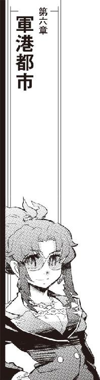
ポルト・セルーナの港湾地区は帝国艦隊専用の軍港と民間船が出入りする商用港に分けられている。軍港も商用港も用途と都合に応じてさらに細かく区分けされており、全開放、半開放、閉鎖型の桟橋がそれぞれにある。
宇宙船の出入りが最も多いのは、軍港ではなく通商港、開放型桟橋が連なる南港である。
ポルト・セルーナは四方八方に拡がった複雑なブロック構造の集積体である。軍用ステーションらしく人工重力の作用方向は基本的に統一されているため、区画は大きく東西南北の四つにさらに上と下の六つに分けられている。
軍港は上部と東部、西部区画に集中しており、民生用の宇宙船は南北の港湾地区に入港する。
長距離、短距離の定期輸送船や連絡船がひっきりなしに出入りする南港に、今また連絡バスが入ってきた。錨泊空域に投錨した連絡船から人員輸送のためにピストン輸送を繰り返すバスから、作業服だったりビジネススーツだったり旅装だったりする旅客が混雑する南港に吐き出される。
「半径千光年じゃ最大級の帝国艦隊基地だってえからどんな体制かと思いきや」
開放式の桟橋にドッキングしたボーディングブリッジからステーション内に入ったケンジョー・クリハラは、作業用ツナギのうえからごつい旧式の軍用コートをひっかけて肩に円筒型のバッグを担いだまま自動走路が続く太い桟橋を見廻した。
「この辺り見てるだけじゃ近所の貿易港と一緒じゃねえか」
最前線の軍港として建設されたポルト・セルーナは、母星となる恒星系を持たない。
巨大重力源の近傍では超空間経由する超光速跳躍に誤差が出る。艦隊を緊急展開させるには、近傍に恒星や重力源を持たない方がいい。そのため、ポルト・セルーナはなにもない恒星間空間に建設された。
航路帯の交差点ですらない場所に莫大な資本と資材が投下され、巨大な軍用ステーションが作られた。
港が出来れば、宇宙船の流れも変わる。巨大軍事ステーションに潤沢な労働力を供給するために近傍星系からの定期航路がいくつも拓かれ、生鮮食料品や水、空気などの生活必需品の輸送航路も確立された。
「ここも、古い港ですから」
傷だらけのトランクケースを細腕に下げた旅装ドレスのノーラが応えた。
「それに、辺境の最前線ならともかくここは帝国領内になってずいぶんになります。軍用区画じゃなくて、民間船用の宇宙港ならこんなもんでしょう」
「ま、楽でいいがね」
錨泊空域と桟橋を結ぶバスから吐き出された乗客は、自動走路でステーション内部に移動していく。ばらばらにバスに乗り込んだ乗組員たちが人の波と一緒に移動しているのを確認して、ケンジョーも自動走路に乗った。
中継ステーションでも場所によっては検疫があるが、ポルト・セルーナには港ごとに救急病院があるだけである。軍用ステーションらしくＩＤ確認はあるが、それは錨泊空域から港に移動するバスの中に装備されている情報システムかあるいは個人で持っている情報端末経由で行われた。
「迎えはなしかい」
桟橋の先に、かつてはひとりずつＩＤチェックを行っていた審査ゲートが形だけは残されている。ゲートをくぐったケンジョーは、港湾地区に付きものの商店街が軒を連ねる港街を見廻した。待ち伏せされている気配もないし、因縁を付けてきそうなマフィアも見当たらない。
「期待してたんですか？」
隣に立ったノーラが小さな情報端末を開いてメッセージを確認した。
「だってよ、帝国艦隊の基地に乗り込むのにせっかくもと海賊船バルバルーサ船長って名乗ってＩＤ登録したんだぜ。まともに仕事してる奴らなら、買い上げた海賊船の船長がそのあとなにしてるかくらい気にしてたっていいじゃねえか」
「気にしてないんじゃないですか？」
小振りのトランクケースをぶら下げたまま、ノーラが先に立って歩き出した。
「バルバルーサを引き取ってからの行動を見てると、彼らは海賊船にも海賊にも関心があるとは思えません。すくなくとも直接の交渉相手に立ったトアール・コンツェルンは、我々に取り引きが終わった商品以上の興味を持っていないでしょう」
「そらま、トアール・コンツェルンはそうかも知れないがよ、代理人って名乗るからには海賊免状の買い上げを依頼した黒幕が他にいるって話じゃねえか。そいつまで海賊に興味なしとは思えなかったんだがなあ」
「彼らにしてみれば、我々はすでに商売の終わった相手であり、問題にされてないんでしょう。動きやすくていいわ」
「でなければ、始末しやすいタイミングを待ってじっと見張ってるってところか」
物騒なことを言うケンジョーを、先を行くノーラが肩越しに軽く睨み付けた。
「ここはもう敵地です。その口から役にも立たない感想を垂れ流すのは、自分がどこにいてなにをしているのかよく考えてからにして下さい」
「ここはまだ安全地帯というか緩衝空域じゃねえかなあ」
ケンジョーのにやにや笑いが止まらない。
「敵地ってのは、たぶんバルバルーサが放り込まれてる工場区画だろうぜ」
「ちがいます」
ノーラはぴしゃりと言った。
「この基地で仕事してる民間企業が入ってるオフィス街です」
ケンジョーはにやりと牙を剥きだした。
「おっと、忘れるところだったぜ。今回は敵の鼻っ先かすめて獲物をかっさらうだけじゃなくて、懐に一撃喰らわせる必要があるんだったっけ」
辺りを見廻したケンジョーは、ステーション内の公共交通機関として設置されている路面電車の乗り場を見付けた。小型の貨物コンテナなら専用車両に搭載して移送出来る規模のレールがメインストリートの中央を走っている。
宇宙都市でも中継ステーションでも、真空の宇宙に建築される構造体の内部でもっとも貴重なのは空間である。バスでもトラムでも、居住空間内を共有して走る公共交通機関なら、専用軌道を居住空間や与圧部と別に設置したりするよりも利用効率がいい。また、将来的な発展や変化への対処の余地も大きい。
小さなステーションでも徒歩だけでなく電動車椅子や自転車は普通に使われているし、地表のように何車線もある巨大なフリーウェイを完備した巨大宇宙都市も珍しくない。
軍港として建造された巨大ステーションの路面電車らしく、桟橋まで乗り入れている貨物車も通れるくらい軌道の幅が大きい。車体の高さよりも幅の方が大きなひらべったい四両編成のトラムは、港町の停車場に警笛の音を響かせて入線してきた。
「さて、それじゃあ敵地に乗り込むか」
肩に円筒形のバッグを担いだまま、ケンジョーは大股で歩き出した。
増築を重ねた古い要塞を原型とする宇宙都市は、古代の城塞都市に例えられることがある。
対艦戦を前提とした宇宙都市は最外殻に強力な装甲板を連ね、大口径の攻撃兵器を設置する。生命体が活動するために必須な環境を維持するためのシステム、必要なエネルギーを発生供給するためのシステムは分厚く防護された外殻の奥深くに設置される。
最前線の要塞として建設されたのは比較的最近のこととはいえ、ポルト・セルーナも長い歴史を重ねた軍港である。東西南北と上下に区分けされた六つのブロックのうち、旧市街と呼ばれる分厚い装甲に護られた区画は東西南北と上部ブロックにまたがる中央部にあった。
古いステーションになると旧市街と新市街を分ける巨大な気密隔壁は都市の奥深くになるため、開放状態で固定、動力部が取り外されているものも珍しくない。しかし、現役の軍港でもあるポルト・セルーナでは増設のために奥深くになってしまった旧最外殻装甲部をまだ実用に使うつもりか、トラムで潜ったゲートの稼動部分はぴかぴかで即応体制にあるように見えた。
「こりゃあ......」
停車場の名を示す看板も装備されている情報伝達システムも港よりずいぶん高級なプラットホームに降りて、ケンジョーは辺りを見廻した。
天井の高い、旧官庁街。軍関係の施設が使い勝手の良さを求めて新しく増設された軍港側の新市街に引っ越したあと、残った民間企業のオフィス街が拡大して旧市街の一区画を占領するまでになった。
「空気の匂いまで違うな」
鼻をひくつかせて、ケンジョーは呟いた。古い、整備の行き届いていないステーションだと閉鎖系の中で使い廻された空気はどれだけフィルターを通しても拭いきれない淀んだような匂いをもつことがあるが、ポルト・セルーナは桟橋でもそんなことはなかった。いくつもの隔壁で護られた奥深くまで入ってくると、高級な循環システムで交換処理された空気はかすかなオゾン臭だけでなく肌触りまで違うような気がする。
「就業中の効率をあげるためにいろいろ添加してるんでしょう」
ノーラは左手首の華奢なブレスレットに触れた。場所によっては薄くナノマシンのウィルスを散布しているような場末のステーションもあるが、有害成分は感知されない。
ノーラは、出来るだけ薄く調整したブレスレットの表示を切り換えた。気を付けていないと見分けられないほどの柔らかな光が、手首の上に淡い立体画像を描き出す。
「通信波はいっぱい飛んでます。高強度暗号ばっかり。データ通信もあるけど、どうせ飛んでるのは盗まれるの覚悟で大した情報じゃないんでしょうね」
「聞かれて困る情報を垂れ流すような間抜けじゃ、この辺りで生き残るのは難しいだろうよ」
民間ステーションのオフィス街と違って軍服姿も目立つ旧市街を、ケンジョーは楽しそうに見廻した。かつて軍用ステーションとして作られた区画に相応しく高い天井を支えて並ぶオフィスビルは頑丈一点張り、民間企業が使うようになって化粧パネルを貼り替え、壁面をロゴで飾ったり営業用の看板を張り出したたくらいではその出自は隠せない。
「なるほど、最前線だ。街中歩いてるだけでぴりぴりしてやがる」
ビジネススーツに軍服だけでなく、港からそのまま出てきたような作業服姿やパイロットスーツも珍しくない。
「さて、おれたちゃこの最前線のどこに行けばいいんだ？」
「こっちです」
ブレスレットの表示を切り換えて行き先を確認したノーラが、先に立って歩き出した。
「はい、いらっしゃーい」
応接室に通されたケンジョーを、テンションの高い声が出迎えた。
「ハロルド・ロイド保険組合ポルト・セルーナ支社にようこそ!!」
「こいつは驚いた」
ケンジョーは、会議卓から立ち上がったアフロヘアの怪人に片手を上げた。
「おまえさん、実在してたのか。ハロルド・ロイド保険組合のエージェントがモニターの中から出てきたのははじめて見たぜ」
「おれの担当は優良な顧客が多くてねえ」
ただでさえ図体の大きなケンジョーよりもさらに頭ひとつ高いショウは、ケンジョーに派手なジャケットを着たひょろりと長い腕を延ばした。
「おかげで楽な仕事が出来てたんだが、うちで面倒見てる数少ない海賊船のうち一隻が行方不明、一隻は身売り問題にもう一隻が身に覚えのない海賊行為で帝国艦隊に取調中ともなると、これは非常事態だ」
ケンジョーと握手をし、ノーラに胸に手を当てた礼をしたショウは二人に応接室備え付けのカウンターバーを指してみせた。
「なにか呑むかい？」
「これからお仕事しようってのに、呑んでられるか」
ケンジョーはまだ他に誰もいない応接室を見廻した。
「他の連中は？」
「こっちに向かってるはずだ」
デスクに戻ったショウは、コントロール・パネルを叩いてクロノメーターの立体表示を浮び上がらせた。母星系をもたないステーションは地方時に縛られる必要はない。銀河標準時と同じ数字が浮び上がる。
「尾行されてないか？」
「バルバルーサ乗組員も含めて最低限のチェックは掛けてるんだが、少なくともここまで尾行が付いてる形跡はない」
ショウはデスク上の立体表示を切り換えた。
「敵がこちらの体制を出し抜くほど巧妙な尾行体制を整えているのか、それともほんとに興味がないのか、その辺りまでは判別出来ないが」
「この規模のステーションなら、軍の監視システムだって信用のある民間会社に開放されてるんじゃないのか？ その辺りのデータ探れば、わざわざ人員を張り付けなくても少人数を尾行して行動を確認するくらいは出来るんじゃないのか？」
「こちとら情報の精度と確度で商売してる保険組合だぜ」
ショウは、立体表示をさらに切り換えた。系統樹が流れるような複雑な流体のモデルがデスク上に描き出される。
「有線、無線を問わず飛び交ってる情報の量くらいはうちでもモニター出来る。暗号変換付きのデータ全部解きほぐしてたら時間と演算能力がいくらあっても足りないからそこまでは見てないが、動き廻ってるまわりのデータの流れ方を見ればどこの誰がなにに興味を持ってるか、ある程度は見当を付けられるもんだ」
ショウはゆっくり動く流体のモデルをポルト・セルーナ旧市街の立体地図に重ねた。
「この辺りじゃ何年ぶりなんて海賊指定手配された免状持ちの海賊船が錨泊空域に入港、しかもその乗組員が軍の監視もなしに平気でポルト・セルーナに上陸してくるとなれば、すこしは物見てる相手なら気にならないはずがないと思うんだが、よほどうまく軍のシステムに潜り込んでるのかそれとも本当に興味がないのか」
「ふむ」
ケンジョーはつまらなさそうに腕を組んだ。
「せいぜい目立つ格好してあちこち歩き廻ってこいってったんだが、無駄だったか」
「まあ少なくとも、無事に我がハロルド・ロイド保険組合ポルト・セルーナ支社までは来てくれた、と」
ショウはデスクのコントロール・パネルを軽く叩いた。応接室のドアが開き、今まさにノックしようと軽く握った拳を上げたビジネススーツ姿のチアキがきょとんと目を見開いた。
「ご苦労！」
ケンジョーが娘に声を掛けた。
「無事だったか？」
「親父！」
ぎろりとケンジョーを睨み付けて、着慣れないビジネススーツ姿のチアキが応接室に入ってきた。
「おかげさまで、拍子抜けするくらい」
チアキに続いて、前に海明星中継ステーションの高級ブティックで誂えたビジネススーツを身につけた茉莉香が現われた。
「言われたとおり、軍港の見学コースとそれから南港のショッピングモール廻ってきました。ご覧の通り、無事です」
「ほおー」
鮮やかな赤のビジネススーツ姿の茉莉香を見たケンジョーが、チアキの地味目のビジネススーツに目を移す。チアキは低い声で言った。
「なんだその残念そうな目は」
「いや、べつに」
「何回か、レーダーやセンサーが絡んできた反応はあった」
ドアをくぐるようにして、シュニッツァーが部屋に入ってきた。
「だが、個人を特定してどうこうしようというものではなかった。幸運なことに、護衛の必要な事態にはならなかった」
「指定手配されてる海賊が帝国艦隊のステーション内を平気でうろついてもなんの反応もなしか」
茉莉香もビジネススーツ、シュニッツァーも陸戦用の戦闘服ではなく略装の船内服に古いジャケットを引っ掛けているとはいえ、各種センサー組み込みのグラスアイを剥き出しにしたサイボーグ顔は隠しようがない。
「軍港に放った囮としちゃ派手すぎたか」
「ハロルド・ロイド保険組合ポルト・セルーナ支社にようこそ」
茉莉香、チアキとシュニッツァーに両手を拡げて、ショウはソファを勧めた。
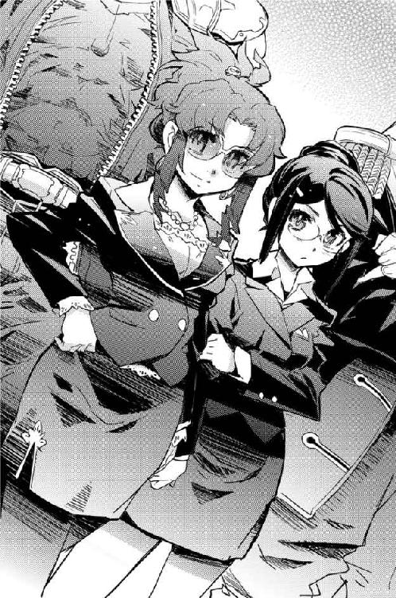
「ご覧の通り、この中は対電子戦仕様の上にジャマーで守られてる。この中でなら、どんな内緒話をしても外に漏れる心配はない」
ショウは、豪勢な調度品で飾られた窓ひとつない応接室を差し廻した。
「これだけ技術が発達して、同じところにいなくても顔合わせて話が出来るような時代になったってのに、結局、秘密の話は直接出向いて顔合わせなきゃ出来ないってのも不便な話だねえ」
ショウは、古代樹の一枚板で飾られているドアを閉じ、ロックした。壁の情報システムでロックを確認し、デスクに戻ってさらに状況をチェック、スーツのポケットから取り出したカード型のレシーバーで室内に感知出来るような電磁波が飛んでいないことを確認する。
「これで、この部屋は電磁暗室になった。皆さんの携帯端末も居場所を知らせるＩＤも使えなくなってるはずだ。どうだい、シュニッツァー戦闘隊長？」
ショウの視線を受けて、シュニッツァーはごついグラスアイを持つセンサーに片手を当てて部屋を見廻した。動作を伴わなくてもスキャンは出来るが、それでは同室者が何をやっているのか解らない。
受信可能な全周波数を感度を上げて走査して、シュニッツァーは口を開いた。
「さすが保険会社だ。こちらのセンサーで見る限り、照明と皆さんが持っている電子機器以外の発信源は見つけられない」
「内緒話の準備は整った、ってわけだ」
ケンジョーは大きなソファにどっかと腰を下ろした。
「で、どうだいショウの旦那。本社オフィスからはるばる出てきて、なんか成果はあったかい？」
「知っての通り、おれたちの業界じゃ情報ってのが実弾よりもよっぽど重要なタマになる」
ソファに着かず、デスクに戻ったショウは、アームレストに大仰なコントロール・パネルを備えた椅子を引っ張り出した。
「軍隊はどんぱちするのが仕事だから勝つための情報収集、企業は商売だから売るための情報収集だが、こちらは状況に値段を付けて安心を売るのが仕事だ。一時も停止せずに動き続ける状況って奴がどっちに向かってるか、どこに落ち着くか、どこで値付けすればいいか判断しなきゃならない。そういう意味じゃ、保険会社の情報収集システムってのは軍や商社よりも精緻で確実に出来てると自負してる」
引っ張り出した椅子をテーブル脇に置いて、腰を下ろしたショウは長い脚を組んだ。
「もし保険組合の情報システムがうまく働かなかったらどうなるか。そしたら、仕事に損益が重なって赤字が出て、最終的には保険会社そのものが清算されてなくなっちまう。おれたちの仕事は公益のために動いてるからね、損しないように、だからって儲けすぎないようにバランスを取らなきゃやっていけない」
長い手をデスクに延ばして、ショウは表示を切り換えた。
閉鎖型ドックの中に固定された旧式宇宙船が映し出された。
「まず、簡単な情報から行こう。トアール・コンツェルンがクリハラ船長から買い取ったバルバルーサは、現在、ダウンタウンの貸しドックに入ってる」
「おお、無事だったか」
ケンジョーは、映し出された画像でバルバルーサの外観に欠損や破損がないのを見て両手を合わせた。背景のドックを見廻す。
「こいつは、今の画像か？」
「モニター画像は、二時間前の記録だな」
ショウはタイムスタンプを確認した。
「最新の画像を獲ろうと思ったら、この貸しドックを運営してるランタン造船の回線に入らなきゃならない。もちろんそれは不可能じゃないが、逆探知されたり、こっちのモニターがばれなくても向こうに持ってきた海賊船を気にしてるものがこの基地の中にいると知らせたくないから、これ以上の深入りはしてない」
「案の定、無人でも分解整備出来るようなロボットドックじゃないか」
バルバルーサを入渠させるには少し大きめな閉鎖ドックの背景を見廻して、ケンジョーの目つきが険しくなる。
「船齢一世紀を軽く越えるうちのぼろ宇宙船を安い沖留めじゃなくてわざわざ高い閉鎖式のそれも桟橋じゃなくてドックに入れたのは人目を避けるためだろうが、それがロボットドックってことは、うちの宇宙船分解処分でも決定したのかい？」
「船齢の割に金のかかってるところもあるから、そこだけ取り出して叩き売ればちったあ値が付くかもしれないが、だったらわざわざロボットドックに入れるほどじゃない」
ショウは別なリストを呼び出した。
「クリハラ船長が期待しているような展開じゃなくて申し訳ないが、バルバルーサがロボットドックで受けているのは自動でも念の入った検査と、それから整備補給だ」
「ほ？」
ケンジョーは、目を丸くしてバルバルーサが映し出されている静止画像を見直した。
「どういうこった？ 今さらうちの宇宙船を商品に仕立ようってのか？」
「だとすれば、売りに出た時点で買い戻せばバルバルーサは合法的に船長の手に戻る」
にやにや笑いのまま、ショウは言った。
「だが、残念ながらそうじゃない。つい先ほど、バルバルーサの名義がトアール・コンツェルンからマエストロ・ヴァンヴァンヴィガロに書き換えられた」
ショウは、デスク上に表示したデータを見やすいようにテーブル上にも転映した。
「聞かねえ名だなあ、ヴァンヴァンヴィガロとは」
「ポルト・セルーナにいくらでもある宇宙船運航会社のひとつだ。仕事のほとんどは艦隊じゃなくて会社からだが、宇宙船の回航、テスト、無人運行まで一通りの仕事は請け負っている」
目の前に表示されたデータを見たケンジョーの視線が一点で止まった。
「船名も変えたか」
低い声を聞いて、船名の欄を見たチアキは思わず声を上げた。
「標的船ＱＤ０４４３!?」
「そうだ」
ショウのにやにや笑いがさらに大きくなった。
「我がハロルド・ロイド保険組合がポルト・セルーナで得た今のところ最大の情報が、それだ。バルバルーサは、所有権を買い取ったトアール・コンツェルンからおそらくは二束三文でマエストロ・ヴァンヴァンヴィガロに叩き売られ、現在、標的船として整備中と、こういうわけだ」
「標的船ってどういうことです！」
思わずソファから立ち上がったチアキがショウに両の拳を握る。
「うちの宇宙船をどっかの演習の標的に使い捨てるつもりですか!?」
「......妙だな」
テーブル上に表示されているデータに太い指を突っ込んで、ケンジョーはデータを引っかき回した。
「標的船に使うなら、ここまで念入りな整備補給は必要ないはずだ。いくらぼろ船使うったって標的船は演習場に持っていく手間もそこで訓練に役に立つように動かす手間も掛かる。一発喰らって爆発四散するよりは出来れば何度も使い回したいはずだから、使う予定のない兵装や機械は全部抜いてすかすかにして持っていくはずなんだが、この整備内容は......」
どこからどうやって持ってきたのか、テーブル上に表示されているデータにはランタン造船のドックに入渠したバルバルーサに予定されている整備内容のメニューまで表示されていた。指先で最初から最後までスクロールさせたケンジョーは、ショウに顔を上げた。
「機関系のチェックは基本としても、推進剤だけじゃなくてミサイルまで補充、主砲廻りも分解整備とまでは行かないが最低限のチェックが入ってる。奴ら、記号しか名前に付けない標的船でなにをやらせるつもりだ？」
「ポルト・セルーナは軍港だから、出入りしてる業者も軍用の識別記号をそのまま使っている。で、ご存知のとおりＱＤは無人運行される標的船に使われる記号だ」
ショウは、テーブルの両側の海賊たちを見廻した。
「そして、最新の情報によればＱＤ０４４３となったバルバルーサの出航予定は四日後。帰還予定は現時点では提出されていない」
「行き先は？」
鋭い目つきのまま呟いたケンジョーは、目指す情報を目の前のデータから探し出した。
「ファウンテンブロウの演習空域か」
「さよう」
ショウは楽しそうに頷いた。
「帝国領内で数少ない民間企業管理下にある演習空域だ」
銀河帝国領内には、いくつもの演習空域が設定されている。たった一隻でも簡単に星を砕くことが出来るような戦艦を艦隊で揃えて実力を発揮させるには、平時からの訓練と演習が欠かせない。
強力な兵器を装備した軍用宇宙船の戦闘力を制限なしに解き放つためには、広大な空域が必要になる。宇宙空間での戦闘距離は兵器の破壊力よりも索敵精度と射撃精度により決定されるところが大きい。
亜光速から超光速で放たれるエネルギービームは、拡散して充分に威力を失うまでに光年単位の距離を駆けなければならない。加速して目標に向かうミサイルも、弾頭の運動エネルギーを破壊力とする質量兵器も、宇宙空間では母艦を離れて制御を失っても飛び続ける。
大規模な艦隊戦が行われれば、戦後何年も経ってはるかに離れた空域で別な被害が出ることも珍しくない。そんな事態を防止するため、巨大な戦力を制限なしに開放できる演習空域は充分に広く設定され、厳重に監視されている。
また、演習空域では未発表の新兵器の開発実験も行われる。実質的に実弾が飛び交う戦闘空域だから、民間船の出入りは厳しく制限される。
「ファウンテンブロウの演習空域は、たしか複数の企業体が共同管理してたな」
ケンジョーは古い記憶の中から民間企業による演習空域の運営形態を思い出そうとした。航路帯や可住惑星からは充分に距離を置いて設定されるが、広大な演習空域は銀河帝国のような強力な体制でもなければ維持出来るものでも管理出来るものでもない。ファウンテンブロウの演習空域は帝国艦隊の演習空域のように戦火が絶えないような場所ではなく、時期と場所によって設定も使用体も変化する空域だった。
「今、ファウンテンブロウを仕切ってるのはどこの会社だ？」
ショウのにやにや笑いが顔中に拡がった。
「企業連合体ラキオン。ご存知、ビッグスリーに続く新興の軍需会社だのなんだのが寄り集まってる企業体だ。そして、その中にはデアフリンゲ級を造っているルーベ・マスも含まれる」
ショウは、テーブルの両側に着いている海賊たちの顔を見廻した。
「これから言うことはハロルド・ロイド保険組合の総意じゃない。あくまでおれの個人的意見だと思って聞いてくれ」
ショウは、テーブルの上の立体表示に企業連合体ラキオンのロゴマークと、ポルト・セルーナにある関連各社のリストを表示した。
「ラキオン、あるいはその配下にあるどれかの会社あるいは複数の会社が関わっている合同プロジェクトが、今回の敵の本体だろう。おれはそう考えている」
「企業連合体......」
茉莉香は、経済関係のニュースくらいでしか聞かないような単語を繰り返してみた。ディスプレイに表示されたラキオンのロゴの下に並ぶ関連各社の数は膨大で、それだけでも銀河帝国の全てを支配出来そうに思える。
「コンツェルンとは違うのかい？」
念のため、というようにケンジョーが訊いた。ショウは答えた。
「コンツェルンよりは個々の会社の結びつきは緩い。複数の会社が作る同盟やらグループやら連合体なんてものは帝国の税制や各星系の条例が変更になるたんびに増えたり減ったりする程度のもんで、ラキオンと名乗ってる企業連合体はかなり最近になって複数の星系に登録されたもんだ」
ショウは、ラキオンという大きな名前の下にあるいくつかの会社の名前をカラーバーでポイントした。
「ご存知の通り、帝国領内の軍需産業はビッグスリーと呼ばれる三大企業だけで業界の過半を支配してる状態だ。帝国艦隊や各星系の自衛軍、防衛軍の戦艦からピストルのカートリッジのみならず、レーダーやセンサー、ジャマーなんかで戦闘のやり方まで商品にしてると思って間違いない」
軍需産業が顧客に提供するのは武器だけではない。古代の傭兵は、武器だけでなく戦力とその使い方まで商売として売っていた。
「だから、軍は商品だけじゃなくていろいろ売りつけられる、しかも金払いのいい最高の顧客なんだが、もちろんそれだけじゃない」
ショウは、ピックアップした大手企業の専門分野をそれぞれの名前の下に表示させた。
「軍ってのは最新技術を貪欲に呑み込む割に保守的でね、実績がある兵器はたとえ使う可能性が著しく低くなったとしても手放したがらない。同じように、付き合いが長いところとは今までと同じように付き合いたがる。おかげで、どこに行っても癒着だの賄賂だの汚職だのって問題も尽きない訳だが、そっちはうちの専門じゃないんでこのさい省く。ラキオンは、そういう訳でぽっと出の新参企業が巨大な顧客である軍に対して少しでも信用を得て、商売をしやすくするために大きな看板を作って寄り集まった、そういう企業体だ」
それぞれの専門分野に関して、帝国艦隊との取り引き実績を表示させる。帝国艦隊と商売しているということはそれだけでも企業にとってステータスになるから、契約名目と年次は公式サイトの公開資料にまでもったいぶって表示されている。しかし、契約年は最近数年から古いものでも十数年前のものしかない。
「もし、値段と性能が同じなら、顧客はわざわざ新しいところと余計な手間を掛けてまで契約し直すことはない。値段でも性能でも、明らかに優れていることを示さなければ新しい客層は開拓出来ない」
「にもかかわらず、新興の企業体がこれだけ帝国艦隊相手の商売に食い込んでるってことは、それだけいろいろ頑張ってるってことだろ？」
興味深げに表示されたリストを見廻して、ケンジョーはショウに目を戻した。
「ラキオンって企業連合体が今回の黒幕なら、その根っこのところにでも出入りかければいいのかい？」
「いささか乱暴だが、歴史と伝統あるビッグスリーとの最大の違いは、企業連合体が寄り合い所帯だってことにある。その結びつきは、差こそあれほとんどひとつの社内で全てを賄ってる古参のビッグスリー、あるいは強固な指揮系統をもつコンツェルンほどには強くない」
ショウは、企業連合体ラキオンに参加している会社のリストに画面を戻した。
リストを見ていた茉莉香が口を開いた。
「このポルト・セルーナのオフィス街にも、ラキオンに参加してる企業はいるんですよね？」
「ああ、もちろん」
ショウは、長い指で茉莉香の目の前の立体表示を示した。
「そこにリストになって出てるのが、ポルト・セルーナで仕事をしてるラキオンに登録されてる会社だ。大は戦艦製造のルーベ・マスから小さいところならドック貸しのランタン造船、運航会社のマエストロ・ヴァンヴァンヴィガロまで、ぜんぶラキオンに参加してる」
茉莉香は、ずらっと並んだリストを見ながら注意深く言った。
「......ここの、ハロルド・ロイド保険組合から、弁天丸に直結回線は設定出来ますか？」
「なに？」
ショウは茉莉香の顔を見直した。
「弁天丸はこの近くに沖留めされてて、ポルト・セルーナとは物理回線では繋がっていません。オフィス街には軍のものから独立した商社専用のネットワークがありますよね？ 弁天丸から、なんらかの方法で直接そのネットワークに入る方法はありませんか？」
「お薦め出来ない」
ショウは、にやにや笑いを浮かべた。
「物理回線を繋ぐのでなければ、超光速空間か通常空間かどっちにしても無線接続が必要になる。なにを話してるのか、どこに聞き耳立ててるのかは解らなくても、なにかをしているのはばれちまう。まして、その目的があんまり堂々と出来ないことだとなれば、なおさらだ」
茉莉香は眉をひそめた。ショウは陽気な顔で続けた。
「だから、外の錨泊空域からポルト・セルーナの商社専用回線に潜り込むなんてことは考えない方がいい。どうしても、ってえんなら、中からだな」
ショウは、テーブルに着いている海賊たちの顔を見廻した。
「ポルト・セルーナのオフィス街にも出入りはある。軍と同じくらい昔からずっと同じところで商売してる事務所もあれば、進出してきたはいいが仕事も資金力も持たずに早々に撤退していく中小企業も珍しくない」
ショウはひょろりと長い指をまっすぐ上に立ててみせた。
「このハロルド・ロイド保険組合ポルト・セルーナ支社が管理しているブロックにもこないだまで大志を抱いた新興の情報分析シンクタンクが入ってた。残念ながら志半ばで撤退したが、そのフロアは次のカスタマーが決まらずに空きっぱなしだ」
ショウは、楽しそうに海賊たちの顔を見廻した。
「だから、もし商社ネットに潜り込んで悪さしようなんて考えるなら、まず、ここに店を構えることを考えた方がいい」
「それで、あんたたち、いったいなにしてるんです？」
取り調べ三日目、今日も朝から巡視艇で弁天丸に乗り込んできたホーガス大尉は、胡散臭そうに船内を見廻した。
「ええと」
大尉の先に立って船長室への通路を歩いていた茉莉香は、昨日までと打って変わって乗組員の往来が多い通路にあいまいな笑みを浮かべた。
「弁天丸は取調中ですけど、幸いにして乗組員の移動に制限があるわけじゃないんで、ちょっとしたお仕事を、と思いまして」
「そりゃあ、宇宙船さえ動かさずに船長さえいてくれれば取り調べの体は保てますけどね」
だらしなく前を開いて引っ掛けただけの制服のジャケットのポケットから情報端末を取り出したホーガスは、片手でディスプレイの表示を呼び出した。
「それにしたって、えーと、乗組員の半分近くがうちの港に上陸ですか？」
ポルト・セルーナの錨泊空域に投錨中の弁天丸は、軍警察により事情聴取中という立場に置かれている。弁天丸は帝国艦隊の許可なしでの移動を禁じられているのはもちろん、乗組員のポルト・セルーナへの上陸にも申請書の提出を求められている。
買い出し部隊が港に連絡艇で乗り付けるくらいなら無視してもあまり問題ない申請を、茉莉香は馬鹿正直に全て提出していた。提出された申請書類はデータのかたちで管制局経由で軍警察に廻され、ほとんどの場合自動的に許可証付きの申請書が戻ってくる。
これにより、帝国艦隊は取調中の宇宙船の乗組員がどこで何をしているか把握出来る、というのが建前である。
「うちの宇宙船、今のところ本業が出来ないんで開店休業状態なんです」
先に立って表情を見せないようにしたまま、茉莉香は言った。
「私掠船免状持ってるっていっても、今は艦隊に事情聴取されている身の上で、お仕事出来ない状態です」
「艦隊にも都合ってもんがありますから」
ホーガスは気のない声で答えた。
「指定手配中の海賊船に海賊営業させるわけにもいきませんからねえ」
「あたしたち民間船ですから、それだと困るんです」
ちらっと付いてくるホーガスを見て、茉莉香は続けた。
「ごらんのように弁天丸ってのはただでさえぼろ宇宙船で、普通に置いておくだけでもいろいろ手間と経費が必要なのに、ここで取り調べ受けてる限りは収入の当てがない。このまんまじゃ、うまく無罪放免ってことになっても、もちろんそうなるとあたしは信じていますけれど、宇宙船を動かす経費が払えなくて倒産なんてことになっちゃいます」
「だからって、手空きの乗組員に上陸してバイトさせる気ですか？」
情報端末に、上陸予定の弁天丸乗組員の名前がリストになって表示された。所属別に名簿をソートして、ホーガスは溜息を付いた。
「それにしても、いくら南港とはいえこれだけの人数、よくもまあ簡単に仕事先が見つかりましたね」
「ちょーど付き合いのある保険組合が、オフィスを拡げるそうなんです」
出来るだけなんでもないふりをして、茉莉香は言った。
「電子関係なら、うちは人材が揃ってますから、新規開店のお手伝いくらいなら簡単に手伝えますから」
「付き合いのある、保険組合ですか？」
情報端末を早いテンポでタップする音を聞きながら、茉莉香は船長室の前で止まった。ホーガス大尉なら、弁天丸がどこの保険組合と契約してどんな関係にあるか先刻承知しているはずである。となれば、今の情報検索は歩きながらの暇潰しでない限りはハロルド・ロイド保険組合の事業展開予定を調べているはずである。
「本社勤めのエージェントがそのためにわざわざこっちに来たって聞いてます」
嘘ではない情報を口にして、茉莉香は船長室のドアを開いた。今日からは、一人でホーガスの相手をしなければならない。
「さあ、今日はどんなことお話しすればいいんでしょうか？」
「大丈夫かね？」
右側のパイロット席に潜り込んできた百眼は、心配そうにシャトルの操縦室から弁天丸の船長室の方向を見上げた。
「心配なら、居残ってもいいんだぜ」
飛行前チェックを終えた機長席のケインは、手際良くスイッチを入れていく。
「操縦室よりキャビンへ、本機まもなく発進する。予定全員乗り込んでるなら、ドアはそっちで閉めてくれ」
「居残っても出来るのはあの憲兵さんの相手だけだ」
百眼は、死んでいた自分のまわりのコントロール・パネルのスイッチを入れはじめた。
「それよりは、港に上がって仕事した方が有望な展開が期待出来る」
「心配じゃないのかい？」
機長席廻りのコントロール・パネルに異常が出ていないのを確認したケインが、ちらりと百眼の横顔を見た。
「まあ、茉莉香船長が乗り込んでからこっちの仕事洗いざらい調べられたところで後ろめたいことがある訳じゃなし」
言い訳をリストにするように、チェックの片手間に百眼は言った。
「船長が乗り込む前の弁天丸の仕事は、どうやっても船長が知る訳なし、と。とりあえず今までのところはうまく憲兵の兄さんと話を合わせてくれてるんだ。あと何日、今の状況が続くかどうか解らんが、船長には時間稼ぎの役目を期待しよう」
キャビン側から、ドアクローズのサインが返ってきた。
「気密確認、推進系通信系異常なし」
「管制局から、南港への入港許可は届いてるぜ」
「シャトルより弁天丸メインブリッジ」
百眼の報告を聞いて、ケインはメインブリッジに残っている機関士の三代目を呼び出した。
「発進準備完了した。左舷側ハンガーデッキを開いてくれ」
『メインブリッジ了解』
ブリッジの三代目から応答が返ってきた。
『今日だけで三往復予定かい？ あとがつかえてる、急いで帰ってきてくれ』
「言われなくても」
ハンガーデッキの外部気圧が抜けていくのを確認して、ケインはシャトルをデッキに固定しているロックポイントを解除した。シャトル側からのコントロールで人工重力をカットする。
デッキ内にわずかに残っていた艦内大気が開いたカーゴドアから流れ出る。風に乗るように、シャトルが弁天丸の左舷側ハンガーデッキから横向きのまま滑り出た。
弁天丸は投錨空域に錨泊したまま、右舷側には今日も巡視艇ＫＰ93が接舷している。
ケインは、微速前進を開始したシャトルの機首を目の前に浮かぶポルト・セルーナに向けた。
「今日も巡視艇が付いて取り調べ、にもかかわらず連絡艇で乗組員が大挙上陸と」
ケインに操縦を任せている百眼が、パイロット席をリクライニングさせて頭の上に手を組んだ。
「監視されてるのかされてないのか解らないが、そろそろ敵の影でも見つけたいところだねえ」
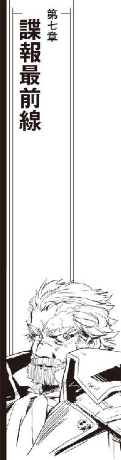
「マルクス情報システムねえ」
百眼は、ドアの外に掲げられた古い木彫の看板を胡散臭そうに見上げた。
「これも、ロイド保険が持ってるダミー会社のひとつかい？」
「うちもこれで古い保険組合だからね」
ショウは、旧市街のオフィスでも珍しい古い樹の板で作られた両開きの大きなドアの上に掲げられた木彫りの看板を満足げに見ている。
「今みたいなスタイルで仕事をするようになるまで、いくつもの同業他社や他業種の会社を合併したり吸収したりしてる。営業が厳しくなった同業他社を救済合併したり、ババ札掴まされて倒産したところから債権代わりに会社を名義ごと引き取るなんてのも仕事のうちでね」
ショウは百眼に目を戻した。
「ほとんどの場合、債権代わりの会社なんてのはそのまま他に転売するか、でなければ処分して未回収の債権の足しにするんだが、うちに余裕があるとか向こうの形態によっては会社としての形態をそのまま維持して仕事を続けて貰うこともある。こっちの営業基盤が弱い場所でのコネがあるとか、その道のエキスパートが揃ってるなんて時が多い」
ショウは意味ありげな笑みを浮かべた。
「前にも言ったとおり、保険会社にとって情報ってのは軍や商社よりも重要な商売のタネなんだ。本業で利益を上げられて、なおかつ有益な情報を得られるなら、少しばかりの事務的な手間や経費をかけても維持した方が得になる」
「そりゃまあ、あんたたちがなんでそんなところまでってくらい手広いコネ持ってるのは知ってるがね」
百眼は胡散臭そうな眼のまま年季の入った看板とアフロヘアの怪人を見比べた。
「関係ってのはほっといて維持出来るようなもんじゃない。出来れば観葉植物くらいにはまめに手入れをしないと、必要なときにそれなりに役に立つ関係なんて構築できないぜ」
「お説ごもっともだが、こちとら海賊なんで、時節の挨拶だけで季節過ごしちまうほど手に余裕がなくてねえ」
百眼はもっともらしい顔で首を振った。
「うちも宇宙船だけじゃなくてどっかに事務所でも構えてあちこちと連絡とりながら商売出来るような立場なら、そういう商売も考えた方がいいんだろうが」
「マルクス情報システムってのはうちより古い時代から営業してる情報コンサルタントの一社だ。ダミー会社だなんてとんでもない。核恒星系じゃ今でも有名どころ相手に経済指南から資産運用までしてる経済コンサルタントだぜ」
「大丈夫かい？」
百眼は、さらに胡散臭そうな顔で年季の入った古い看板とショウの顔を見比べた。
「そんな有名どころの名前を借りて、もしなんか予想外の事態でも攻めてきたりしたら」
「私掠船免状持ちの海賊に保険組合が心配されるようになるとは、悲しい世の中になったもんだねえ」
にやにや笑いを貼り付けたまま、ショウは言った。
「こっちがそんなリスク管理なしに君たちにオフィス提供したりダミー会社の名前まで貸したりすると思うのかい？ 大丈夫、もしラキオンの機密体制がこっちの期待より固かったり、君たちの仕事がこっちの期待より遅かったりしても、ちゃんとそのための準備は整えられてる」
ショウは、ブロックごとに備えられている背後のエレベーターホールに肩越しに親指を向けた。
「マルクス情報システムの表札は、目立たないようにだけど、もう、うちの区画の入り口に貼りだしてある。回線はわざわざ維持費を払って現役に保持していたものだし、仕事内容についても前期実績と今期見込みは作成済みだ」
「あらあー」
昨日今日で作ったばかりのダミー会社にそんなデータまで作成済みの保険組合のエージェントに、百眼は思わず低い声を上げた。
「いちばん問題なのは、そんな実績と歴史あるスタッフをいったいどこから連れてきたかってことだが」
ショウは、閉じられていた木彫のドアを大きく開いた。
「弁天丸とバルバルーサ、それぞれが抱えてるダミー会社や別名義の輸送船からの出向ってことで辻褄を合わせてある」
弁天丸に限らず、私掠船免状を持って一世紀以上もの間海賊稼業を続けている海賊船は別名義の船籍や書類上にしか存在しない貿易会社を持っている。私掠船免状を持っているとはいえ海賊船名義では行動に制限や支障が出ることもあるし、身分を隠して動かなければならない仕事も珍しくない。
「マルクス情報システムねえ」
もう一度言って、百眼は玄関の上の看板とワンフロアそっくり占領した急拵えの情報コンサルタント会社を見廻した。弁天丸とバルバルーサの乗組員が持ち込んだ私物のポータブルコンピューターや電子ファイルだけで用が足りるはずもない。加えて、レンタル会社から借り出した大型の電子機器を並べたフロアの様子は、情報コンサルタントというよりは野戦用電子戦本部に近い。
巨大軍事基地であるポルト・セルーナの旧市街だから、電力も情報ラインも潤沢に供給されている。収集した情報を効率的に処理する大型のシステムだけでなく、網の目よりも細かく張り巡らされたネットワークに侵入して目指す情報を掠め取るための電子戦システムまで並べた上に実動優先で太い結線で接続されている様子は、どう見ても新規開店した情報コンサルタントではない。ましてや、弁天丸とバルバルーサから寄せ集められたスタッフとなれば私服に作業服が入り乱れ、統一感などどこにもない。
「よくある電子飯場だな、こりゃ」
「百眼ー！」
弁天丸から持ち込んだ予備をレンタルの電子機器だけでは足りずに実働しているハロルド・ロイドのオフィスから借り出して構えた仕事場にいつも通りのジャージに半纏姿で沈み込んでいたクーリエが声を上げた。
「もうすぐ穴開けるから、手が空いてるなら手伝って!!」
「あいよ、すぐ配置に付く！」
返事だけして、百眼はショウに向き直った。
「んじゃ、しばらくは開店準備中ってことで、もしどっかの物好きが様子見に来てもしばらくはシャットアウトするよう伝えといてくれ」
「承知した」
ショウは片手を上げた。
「安心してくれ、ハロルド・ロイド保険組合の名にかけて、完璧な仕事環境を提供しよう」
「逃げよーったってそーはいくかい」
上げたショウの腕を捕まえて、百眼は野戦本部のようなフロアに引っ張り込んだ。
「こちとら宇宙の上での電子戦には慣れてても、閉鎖ブロック内でのネット戦争は専門外なんだ。ここまでお膳立て整えて貰って悪いんだが、どーせ同じ穴のムジナ、いろいろ手伝ってもらわないと」
「うちのオペレーターをヘルプに廻したじゃないか！」
百眼に引っ張られながら、ショウは声を上げた。
「おかげでうちの営業所、戦力半減だって文句言われてるのに、おれだって本社で実務担当なんだ、ネットワーク戦争なんて専門外だ！」
「はいはい、解ってる範囲で手伝ってくれれば充分だぜ。まずは痕跡残さずにここのネットワーク駆け廻る裏技教えてくれ、ざっと試してみたところ標準一二種に変異型一八種のダミーパターンが全部対策されてやがる。蛇の道はヘビだ、どーせ回避手段が出来上ってるんだろ？」
「それで、あんたたち、ほんとはなにをはじめたんです？」
取り調べ四日目。ピーター・ホーガス大尉は、船長室でしげしげと茉莉香の顔を見直した。
「はい？」
営業用の笑顔を浮かべたまま、茉莉香は可愛く首を傾げてみせた。
「こういう仕事をしてますからね、いちおう街の中の状況は軍民問わずに聞こえてくるんですよ」
しかめ顔のまま、大尉は手の中の情報端末のディスプレイと茉莉香の顔を見比べている。
「昨日大挙してポルト・セルーナに上陸した弁天丸の乗組員はそのほとんどがこちらに帰ってきてません。ハロルド・ロイド保険組合では新しく立ち上げたマルクス情報コンサルタントって会社がまだ立ち上げの準備中ってことになってるけれど、旧市街から南港を中心とした民間用のネットワークの緊張度がいきなり上がってます」
「民間ネットワークの緊張度？」
乏しい知識を総動員して考えながら、茉莉香はさらに首を傾げた。
「軍警察って、そんなところまで監視してらっしゃるんですの？」
「自分の足もとで商売相手がなにやってるかくらい把握してなきゃ、こんな商売やってられませんよ」
ホーガス大尉はめんどくさそうに両手を拡げた。
「それにしたって、民間用のネットワークまでモニターしてるなんて、大変ですね」
「ここは軍港ですから」
大尉は事も無げに言った。
「空間から空気、エネルギーから情報回線を含むインフラストラクチャーは軍が提供しています。民間ネットといってもうちの管理下にありますからね、なんか妙な動きがあれば自動的に報告が上がってくるようになってまして」
大尉は、前日から付き添いの乗組員もいなくなった船長室を見廻した。
「基本的に軍は民間の活動にはノータッチ、会社同志で諜報戦やろうが仕手戦やろうが他に被害が及ばない限りは傍観するってのが建前ですが、だからこそ高みの見物をするためにはいろいろとものを知らなきゃならない」
「さすが、大きな港の治安を預る軍警察ですわ」
「民間企業とはいえ軍需産業ですから、互いの情報収集のために軍の情報部も目を背けるようないやらしい情報戦が行われることもありますし、時によっちゃポルト・セルーナのネットワークの中が電子戦みたいな状態になることだってあります」
眉根を寄せたまま、大尉は茉莉香に目線を戻した。
「さっきも言ったとおり、他に被害が及ばない限りはうちに出入りしてる会社が何しようと見て見ぬふりするのがうちの基本方針ですが、そのためにはどこの誰がどんなつもりでなにをしているのか理解してなきゃならない。お宅と長年付き合いのあるハロルド・ロイド保険組合が持ってるブロックの中にマルクス情報システムの支店を構築中って申請はもちろんこっちにも流れてるが、ネットワークの中の騒ぎはちょーどこいつの設定がはじまるのと同時に拡大を開始している」
大尉は手の中の情報端末と茉莉香の顔をちらちら見比べている。
「もしご存知なら教えていただけませんかねえ。上陸したあなたのところの乗組員、旧市街に店まで構えていったいなにやろうとしてるんです？」
「さあ？」
商業用の笑顔のまま、茉莉香は真っ正面からすっとぼけてみせた。
「申し訳ありません、大尉、今までお話になって解ると思いますけど、あたし海賊船の船長としては史上かつてないくらいキャリアがない上に乗組員の信用もないんです」
「ご冗談を」
大尉は笑いもしない。
「他のなにが足りなくても、乗組員の信用なしに船長なんか出来るもんじゃありません」
「もちろんこちらの事情は先刻ご承知だとは思いますが、あたしが弁天丸の船長になったのは、私掠船免状の相続要項に船長資格を引き継げるのは船長の子供だけ、っていう条項があるからなんです」
見透かされていようがいまいが、舞台に上がったら役を最後まで演じなければならない。観客にシナリオの裏まで読まれているような錯覚を覚えながら、茉莉香は平気な顔を強いて続けた。
「他の乗組員の誰よりもキャリアのない海賊船長なんて、そんな特別な条項でもなきゃやってられるもんじゃありません」
「少なくとも、上陸したお宅の乗組員がなにかやってると、そこまでは認めるわけですか？」
ホーガスの言葉に、茉莉香はにっこりと頷いた。
「うちの乗組員は優秀ですから、そりゃあ行くところに行ってやらなきゃならない仕事があればおとなしく遊んでるはずがありません。きっとなにか、弁天丸の役に立つようなことをしていてくれてると信じています」
「そりゃまた、ずいぶんと信用してるもんですな」
「それも仕事ですから」
茉莉香は頷いた。
「もうひとつ、弁天丸の役に立つことは、きっと帝国艦隊のためにもなることだと信じています」
茉莉香はじっと大尉を見たまま言った。
「艦隊が、民間の活動については見て見ぬふりをすると聞いてほっとしています。それはつまり、看過できないような事態になれば出てきてくれるってことですよね？」
「それはあたしが決めることでも軍警察が決定することでもありません」
大尉も茉莉香から視線を外さない。
「けどね、船長が連日取り調べを受けてるってのに宇宙船は落ち着いたまま、乗組員は平気で外に出稼ぎに出掛けてそれでもあなたが船長を続けてられるってえんなら、茉莉香船長、あなたも充分乗組員に信用されてるってことですよ」
「そうですね」
茉莉香は溜息混じりに応えた。
「そうであればいいと思ってます」
営業用の笑顔に戻って、茉莉香は付け加えた。
「出来れば、うちの乗組員があんまり他所さまに迷惑かけずにうまくやらなきゃならないことだけしてくれればいいんですけれど」
「海賊って人種は、なにもなかったフロアをたった二四時間でここまで散らかすことが出来るのか」
銀河標準時に従って動いているポルト・セルーナ、日付が変わる寸前にやっと解放されて臨時住いのビジネスホテルに避難したショウが戦線に復帰したのは翌日の始業時間をはるかに過ぎてからであった。
前日は広いフロアのあちこちにレンタルと持ち込みの電子機器が散在し、タコ足配線にスパゲッティ結線がのたくり廻っていたマルクス情報システムは、真夜中のうちに一画にキャンプ場にも似たスナックコーナーが設営され、飲み物や軽食がセルフサービス出来るようになっていた。
弁天丸からだけでなく、売り渡し前のバルバルーサから運び出された電子機器も大量に運び込まれて接続され、稼動開始している。平面表示と立体表示が入り乱れ、最低限の動線の確保もなしに設置された各種電子機器と取り付いている担当のオペレーターの間には私物や荷物がジャンクかゴミか解らないような様子で積み上げられ、昨日はまだ広く見えたフロアが見違えるように狭くなっていた。
「戦闘中ですからね」
椅子のまわりにレンタルのディスプレイと仮設のコントロール・パネルだけでは足りず、あり合わせのデータカード用コンテナの上にカロリー補給のためのお菓子を並べて作業中のクーリエが答えた。
「うちは、結果さえ出れば途中の見た目とか人聞きとかあんまり気にしないことになってるんです」
「他人の評判気にするようなら海賊には向いてねえな」
ふわあ、と大あくびしながら空箱を寄せ集めた一画から作業服姿のケンジョー船長が出てきた。
「宇宙でお上品に仕事したけりゃ、他の仕事を探した方がいい」
「弁天丸だけじゃなくて、バルバルーサも同じ方針かい」
ショウは、活発に立体表示が入れ替わり、立ち歩く人員も多いフロアを見廻した。
「そりゃよかった。流儀や礼儀でぎすぎすしてるようじゃ先が心配だからねえ」
「うちみたいな商売じゃ、この段階での仕込みがいちばん肝心なんでな」
バケツのような巨大なマグカップにコーヒーを汲みながら、ケンジョーは言った。
「じっさいに戦闘する時には、勝負は九割方決まってるってね。保険業界だって、契約する時に利益を確定させてるんだろ？」
「勝てそうかい？」
ショウはずばりと聞いてみた。巨大なマグカップに満たした熱いコーヒーを一気呑みしたケンジョーは乾杯でもするようにからになったカップを上げてみせた。
「誰に向かって物言ってるんだ。海賊が、負けた時のことなんか考えるもんかい」
「保険業界は、損した時の計算を先にして辻褄合わせるんだ」
ショウは黒髭船長に笑みを返した。
「最悪の結果まで考えて損害計算しておけば、たいていの事態には余裕を持って対応出来る。聞かせてくれ黒髭船長、どうやってバルバルーサを取り戻すつもりだい？」
「まあ、待ちなって」
マグカップに追加のコーヒーを注いで、ケンジョーはケーブルとジャンク部品と空コンテナとパックゴミの間に出来ている獣道を歩き出した。
「どうやら、今回のプロジェクトはかなりな時間的余裕を持って進行中らしくてな、閉鎖ドックの中のバルバルーサの補給点検はまだしばらく掛かるらしい」
「ほお？」
「うちみたいなぼろ船にはもったいないような時間の掛け方だぜ。まあ、せっかく標的艦として使い倒すために正確な性能を測って使い倒そうって腹でもあるのかも知れないし、いっくらぼろ船っても軽戦艦のクラスだからな、一から十まで面倒見ようと思ったらそれなりに手間が掛かるんだが」
「なるほど」
ショウはケンジョーの後をついて歩きながら訳知り顔に頷いた。
「バルバルーサの完全整備が終わるのを待ってから、掠め取るつもりか」
「まあ、基本はそのつもりなんだがね、バルバルーサの自動整備メニューをチェックしていたら重要な問題が発見された」
ケンジョーは、フロアの一画にあり合わせのテーブルと椅子代わりの空ケースやコンテナを並べただけの談話スペースに向かった。
「なんだ？」
「奴ら、バルバルーサを無人運行する気だ。それは、名前がＱＤ０４４３なんて味も素っ気もない艦番に登録変更された時点で解ってる。もちろん、無人運行するにはあちこちにそれなりの仕掛けをしてやる必要があるが、ときどき乗り込んで手を入れてやるか、でなければ使い捨てるつもりなら問題はない」
「バルバルーサの中身まで改造される心配はないと？」
「そこまで金掛ける気がないってだけの事だろう。問題は、バルバルーサが無人運行されるって事だ」
「ああ」
ショウは、ケンジョーが腰を下ろしたテーブルの反対側に適当なコンテナを横倒しにしてどっかと腰を下ろした。巨大なマグカップをテーブルに置いたケンジョーは、深刻な顔を上げた。
「無人で運行する予定の宇宙船なら、生命維持系のチェックは必要ない。当たり前の話だ、生きて息するデリケートな生命体乗っける必要がないなら、宇宙船は気密チェックする必要もない。与圧が必要な一部の機器にそれなりの処置を施しておけば、窓全開で飛んだって宇宙船としての機能に問題はない。それどころか、余分の空気まで積み込まずに済むとなればそれだけで宇宙船の重さがずいぶん軽くなる」
一気圧の与圧大気は、一立方メートルで一・二キログラムの重量を持つ。
「空気だけじゃないな」
ショウはケンジョーが言わんとする事に気付いた。
「乗組員とその私物、食糧や水を積み込まずに済むならかなりの軽量化が期待出来る。もとが軽戦艦じゃ大した重量の軽減にはならないだろうが、戦闘艦にとっちゃ馬鹿にならない重量だろう」
「加えて、下手すりゃ電子系や兵装なんぞより手間が掛かる生命維持系の整備もそっくり省略出来る。無人船として運用する方にとっちゃ手間が減って万々歳だろうが、掠め取って頂くつもりのこっちには大問題だ」
「ふむ」
ショウは頷いた。宇宙船の運用は専門外だが、部外者として考えただけでも山のように噴出する問題を思い付く。
「で、どうするつもりだ？」
「現時点で判明しているバルバルーサの整備リストには、生命維持系の点検も入ってないし空気や水の補給予定もない。もちろん、人なんか乗せずに飛ばす予定の宇宙船に食糧を積み込む必要もないしその予定もない。つまり、首尾良くバルバルーサをこっちの手に取り戻したとしてもその辺りは全部こっちで面倒見てやらなきゃならない」
ショウは簡潔に感想を述べた。
「大仕事だな」
「さて、そこで相談だ」
ケンジョーはテーブルに身を乗り出した。
「バルバルーサの生命維持系はこっちで面倒見てたから、今回の整備中に取り外すとかわざとぶっ壊すとかそんな真似されない限りは放っておかれてもそれほど問題はない。だが、空気と水と食糧に関しちゃ最低限をこっちで手当てする必要がある」
「ライト級とはいえ戦艦一隻を動かそうというのだ、それくらいの手間は必要だろう」
「残念ながら、バルバルーサは現在休業中で、おおっぴらに動く訳にはいかない。という訳で頼みたい事がある。補給船を一隻、手配して欲しい」
「解った」
ショウはケンジョーに両手を挙げた。
「必要な物資と予定を出来るだけ早く出してくれ。こっちでなんとかする」
ケンジョーはショウの顔を見直した。
「やけに話が早いじゃねえか」
「当たり前だ」
ショウはケンジョーに手を振った。
「バルバルーサ向けに補給船一隻、揃えなきゃならない物資は水と空気に食糧なら、まあ極秘裏に話進めなきゃならないにせよ難しい話じゃない。それよりも、閉鎖ドックで点検中、自分の名義でもない宇宙戦艦一隻盗み出すなんて方がよっぽど大変なのは港のネコにだってわかる話だ。こっちにそういう話を持ってくるってことは、そっちは目途が付いたって、そういう事だろ？」
ケンジョーはにやりと笑って、フロアに目をやった。
「まあ、うまくそういう事になるように、目下仕事中だ」
火事場のようなフロアを見渡して、ケンジョーはショウに目を戻した。
「実のところ、いつ、どうやってバルバルーサを取り戻すかはまだ色々検討中な段階でね。取り戻したあとはやる事は決まってるから、必要な事は解ってるうちに手配しておこうってだけの話さ」
「なるほど」
ショウは、満足げにたった一日で古い市場のように散らかったフロアを見廻した。
「戦闘準備は順調に進行中という事か。けっこうけっこう。ここが順調に廻り出したとなれば、こっちも安心して本業に勤しめるってもんだ」
「ショウさん！」
棒菓子を銜えたままのクーリエが声を上げた。
「そっちの話が終わったら、こっちもちょっとご相談があるんだけど？」
声が聞こえた印にショウはひょろりと長い片手を挙げた。ケンジョーは二杯目のコーヒーに口を付けた。
「補給品目のリストはそっちに廻しておく。作戦の細かいスケジュールがまだ決まってないから正確な補給ポイントや日付は指定出来ないが、ここから跳んだ先で補給して貰うのは間違いない」
「補給船は余裕を持ってチャーターした方が良さそうだな」
ショウはテーブルから立ち上がった。
「どうせ短期間のミッションに保つような補給が出来ればいいんだろう。補給物資を揃えるより、チャーターした宇宙船から目的を探られる方が痛い。出来るだけ目立たないように離れたところで補給船を仕立てる事になると思うから、リストだけじゃなくてスケジュールも早めに確定してくれ」
「最善を尽くそう」
ケンジョー船長に片手を挙げて、ショウはクーリエの仕事場に移動した。
「で、こちらの依頼はなんだい？」
全周囲に立体ディスプレイと平面ディスプレイだけでは足りずに各種キーボードやコントロール・パネルを並べ、その真ん中にはまり込んで作業中のクーリエにショウは外側から声を掛けた。
「ああ、やっぱりどうやってもそっちの方が早いみたいなんで、お願い」
口をもぐもぐさせて両手でキーボードを叩きながら、クーリエは顔も上げずに言った。
「保険ネットへのアクセス、開いてくれない？」
「なに？」
ショウはおもわず聞き直した。たん、っと長いコマンドを送り出したクーリエは、結果も確認せずに椅子ごとショウに向き直った。
「保険業界が銀河系を飛ぶ宇宙船の保険の照会に使ってる保険ネットよ。ハロルド・ロイド保険組合みたいな古株が繋がってないはずないでしょ」
銀河帝国領内を飛ぶ全ての宇宙船は、事故や遭難などの非常事態に備えて保険を掛ける事を求められている。どれだけ技術が進歩し、宇宙船の航行が安全になったとしても不測の事故や遭難は必ず起こる。
宇宙船の寿命は長い。登録されている長い期間に一度の事故もトラブルも起こさずに引退する宇宙船は希である。そして、トラブルが起きれば経費が発生する。
宇宙船の保険は、危険を分散して管理するという昔ながらの考え方で運営されている。
保険を掛けずに飛んでいる宇宙船は帝国や独立政府所属の軍艦くらいなもので、これらに発生する非常事態の経費は行政機関により保障されている。
銀河を飛ぶすべての宇宙船は種別も期間も金額も様々な保険を掛けている。保険を扱う企業もまた星の数ほど多い。宇宙空間に於ける非常事態のなかで単独事故が占める割合は年々低下しており、保険会社が取り扱う事象の大半は複数の宇宙船が連動して関係している。
業務を円滑にするため、保険会社は全ての宇宙船の保険データを一括して参照するための全銀河規模のネットワークを構築していた。星間情報網は超光速通信の実用化と同時に建設がはじまったが、保険会社が相互の情報交換のために作り上げたネットワークはもっとも古く、もっとも大規模なものだと言われている。
「保険ネットってのは、部外者に簡単に開放出来るようなもんじゃない」
くちもとを歪めて、ショウはお題目を口にした。
「そりゃあ、今、うちは君たちに対して全面的な協力を惜しまない状況にあるが、それにしたって保険ネットを開いてみせるなんてのは全然別のレベルの話だ。いったいなんでまたそんなことを思い付いた？」
「今、この銀河を飛んでる宇宙船を調べようと思ったら保険ネット使うのがいちばん確実で早いからよ」
口の中に残っていたお菓子を呑み込んで、クーリエは口を開いた。
「相手が独立政府が動かしてる軍艦でもない限り、銀河を飛ぶ全ての宇宙船は保険に入ってるわ。引き渡し前の試験飛行中の新造船だって、航路上を飛ぶ限りは短期で臨時の保険を掛けてる。航行法がそれを求めてるからね。例外は自分で抱えてる実験空域から一歩も出ずに試験や練習するような機体だけだけど、このさいそういうのは関係ない。相手にしたいのは、保険を掛けて飛ぶ必要があるような宇宙船だけ」
クーリエは、立体表示の向こうに立つショウに向けて表示を切り換えた。ポルト・セルーナを中心とした周辺空域の立体画像が映し出され、そこに細かい輝点が大量に重ねられる。
「これが、ポルト・セルーナの周辺にいる宇宙船。管制の公式データを弁天丸で確認してるから、信用度は高いわよ」
「ほお？」
ショウは、ポルト・セルーナ周辺の錨泊空域で投錨中のものと、それから入出港する全ての宇宙船を模式化した立体図とクーリエの顔を見比べた。宇宙船の数が多すぎて、輝点が粉にしか見えない。
「公式データと弁天丸の観測データを付き合わせるだけだけでも色々怪しい宇宙船は見つかるけど、でもまあ、軍港の錨泊空域で大出力レーダーぶっ放す訳にもいかないから得られるデータは限られる。ステーションの中に入ってる宇宙船に関しても昨日今日であらかた表向きのチェックは出来たけど、なにせ数が多いからね、決定打に欠ける訳」
「保険ネットに入れれば、事態が打開出来ると？」
クーリエは勢いよく頷いた。
「残念ながら管制データには契約保険会社しか入ってないけど、中身に当たれればばっちりよ。なにせ保険だけは嘘ついたらいざって時に役に立たないのみならず詐欺罪適用まであるってくらい厳密に記録残されてるじゃない。保険掛けてる宇宙船の種別くらいはごまかせても規模と運用期間は嘘吐けない。保険ネットさえ見せてもらえば、今この辺りにいる宇宙船が、うちがちょうど輸送船の救難信号受信した時に飛んでたのかそうでないのかすぐに確認出来るもの」
「保険ネットにあるデータは、宇宙船の行動まで記録してるもんじゃない」
ショウはぶつぶつと言った。
「どこでなにしてたかまで記録してる訳がない」
「充分よ」
クーリエは立体表示のリストを切り換えた。
「ラキオン系列の企業が契約してる保険で、迦陵頻伽が行方不明になった時期、うちが救難活動した時に有効な保険が掛かってる宇宙船がピックアップ出来るだけで絞り込みがぐんと楽になるわ。そうすれば、あとは電子戦や艦隊戦が出来そうな装備の宇宙船だけ選び出して確認すればいいんだから」
「保険ネットってのは部外者に見せられるようなもんじゃない」
珍しく低い声で、ショウは保険組合の建前を繰り返した。
「保険会社は契約者に対して守秘義務があり、当事者以外にその内容を明かす訳にはいかない」
「まあ、契約者保護のためにそういう事になってるみたいね」
もちろんその辺りの事情も承知しているクーリエは、さっさと表示を切り換えた。
「もちろん、タダでなんて言わないわ。保険業界はどうか知らないけど、うちの業界じゃギブアンドテイクってのは基本中の基本だもの、保険ネット見せてもらうって言うからにはもちろん相応のネタ用意してあるわよ」
「これは......」
立体表示の目録が次々と新しいタイトルに置き換えられていく。ポルト・セルーナに事務所を置いているほとんどの大手を網羅しているようなリストに、ショウの顔色が変わった。
「昨日、今日のマルクス情報システムの戦果よ」
横を向いて、クーリエは笑いながら背中を丸めてキーボードを叩きはじめた。
「ご覧の企業の内部ネットの構造と主要データベースとその警備保安システム解析済み地図付き解説書一式」
「どうやってこんなものを......」
「あら、こういうことするためにここ貸してくれたんじゃないの？」
スナック菓子に手を延ばしたクーリエは、つまんだチップを口の中に放り込んだ。
「戦争するのに、相手の状況と陣形と戦力と補給確認するなんて基礎の基礎じゃない。大丈夫、そこにあるデータだけなら手間は掛かるけど調べれば出てくるもので、まとまってるのは珍しいだろうけどそれ自体は非合法ものでもなんでもないから。ただ、こういう事前情報があれば、目当ての事務所に情報泥棒掛けるのはぐーんと楽になるでしょうけどね」
「これが、どれだけのものか解って言ってるのか？」
「実弾よ」
首だけショウに巡らせたクーリエのメガネが不気味な光を放った。
「保険会社にとっての情報の価値って、軍や海賊にとっての実弾以上のものなんでしょ。もし、保険ネットを開放してくれるのなら、今お見せしたデータをそちらと共有する用意があります」
「申し訳ないが、例え口頭でも今おれがここで君たちが保険ネットの開放を約束する訳にはいかない」
溜息を吐いて、ショウはクーリエに顔を上げた。
「だから、まあ、君たちの希望に添うためにはなにかそのための手を色々と考えなきゃならない」
「はいはい、スタイルはそちらにお任せします。早ければ早いほど嬉しいけど」
「お手柔らかに頼むよ」
本心から言って、ショウは派手なジャケットの内懐から情報端末を取り出した。
「ひとつ聞いてもいいかい？」
「営業上の秘密じゃなければ、ええ、どうぞ」
「なんでわざわざ保険ネットへの開放をおれに依頼するんだ？ これだけの情報を簡単に探し出せるなら、うちのネットワークから潜り込むなり他の保険会社をクラッキングするなりして保険ネットに入るくらい簡単だろう」
「ええ、出来るでしょう」
今度はショウに背を向けて、クーリエは速いタッチでキーボードを叩きはじめた。
「ショウさんに保険ネットに入れてくれるようにお願いした理由は二つあります。ひとつは、ハロルド・ロイド保険組合をはじめとする保険業界を敵に廻す気がないからです」
「もうひとつは？」
「引き換えにお渡しするデータだって一朝一夕に出てきたもんじゃありません。保険ネットに入ろうと思ったらそれなりの準備と手間と時間が掛かります。どう考えてもお願いした方が早いわ」
ショウは、参ったというように両手を挙げた。
「正解だ。正確な判断に脱帽するよ」
「素早い判断に感謝して、ひとつ、おまけ付けてあげる」
横を向いたまま、クーリエはショウの目の前のディスプレイを切り換えた。ショウは妙な呻き声を上げた。
「こんなもの、いったいどうやって......」
「あら、一目でこれがなんだか解るなんてさすがね」
早いタッチでキーボードを叩きながらクーリエは言った。
「そう、この港の物理ネットワークを上位から管理してる、軍用ネットの構造概念図」
「......潜れるのか？」
「今ならね」
クーリエは簡単に答えた。
「さすがに帝国艦隊の軍用ネットともなると実戦体制だもの、警備態勢も綿密だし身元保証も秒単位で確認されるしＩＤキーなんか一分ごとに変更されてる。覗き見するだけでも情報警察が飛んできそうな体制だから、ガイドなしで乗り込んだらあっというまに捕まるでしょうね」
ショウは、およそ考えられる限りの保安体制を張り巡らせているように見える軍用ネットの立体概念図を見直した。クーリエは続けた。
「今なら、ここにガイド出来るって人材がいるから大丈夫。一ヶ月先くらいまでの作戦行動予定くらいなら簡単に閲覧出来るけど」
「やめてくれ」
ショウは立体ディスプレイから視線をはがした。
「うちは、これから先も波風立てずに円満に仕事を続ける方針なんだ。濡れ手に粟のぼろ儲けも、詐欺まがいの営業妨害にも興味はない」
「はいはい、必要があったらいつでも言って頂戴ね、何とか出来るのはたぶんわたしたちがここにいる間だけだから」
「マルクス情報システムの営業、順調なようじゃないですか」
ホーガス大尉に言われて、茉莉香は思わず聞き返した。
「そうなんですか？」
「船長が、乗組員が上陸してやってる仕事の報告を受けてないんですか？」
大尉の不審そうな視線が茉莉香を射た。
「だって、うっかりしたこと聞いたら余計なこと喋るかも知れないじゃないですか」
茉莉香は笑顔で大尉に答えた。
「あたし、その辺りは乗組員に信用されてるんです」
茉莉香は真顔で大尉に聞き直した。
「うちの乗組員たち、港でうまくやってるんですか？」
「さて」
大尉は、左手の中の情報端末の立体表示を細かく切り換えた。
「少なくとも、この二日間ばかりは最初にあったような情報ネットの緊張度の無茶な上下もなし、積極的な情報戦争も行われているようには見えません。旧市街のネットが落ち着いた状態にあるということは、つまり、新入りがうまく居場所を見つけたということじゃないでしょうか」
「だと、いいんですけど」
茉莉香はあいまいな笑みを浮かべた。
「出ました」
クーリエは、立体表示にリストを出した。
「近所で短期間の航行に出てるのもあるけれど、すぐに帰ってくる程度の飛行計画だから、もしこっちの見立て通り相手が実験艦なら近所に調整のための試験航行に出掛けてる、程度のことだと思う」
「お見事ですね」
ノーラは、立体表示にずらりと並んだ船名と登録記号、所属のリストを見た。
「まだまだこれからですよ」
クーリエは、ノーラに顔を上げた。
「港の中に入ってるのが七隻、外にいるのは三〇隻以上。これからあとは、リストアップした宇宙船を一隻ずつ調べ上げなきゃなりません」
「必要な手順でしょう」
ノーラは当然のことのように言った。
「なにか問題が？」
「敵は、電子戦に特化している上に最低でも機動巡洋艦並みの艦砲を装備しているはずです」
ノーラは、ピックアップした宇宙船のリストを種別に並べ直した。
「しかし、残念なことにリストの中に巡洋艦級の宇宙船は二隻だけ。たぶん、この二隻は今回マークすべき敵ではないと考えています」
「残りは、貨物船ばかりですね」
ノーラは、リストの大半を占める宇宙船の種別を確認した。貨物輸送船は、銀河でもっとも多い宇宙船である。
「あと、調査船だったりするのもいますけど、貨物宇宙船で登録しておけばたいていの船種はカバーできますから」
民間登録の貨物宇宙船が多いのは、登録時の制限がもっとも緩い種別であることも理由のひとつである。
民間用宇宙船でも、自衛用兵器の搭載は認められている。帝国領内だけを航行するならそれほど心配はないが、帝国外の辺境では海賊も珍しくないし海賊まがいの因縁を付けてくる独立星系を名乗るごろつきも多い。敵艦を一撃で沈められるような大口径砲はそれだけでかさばるし火器管制系も必要になるからあまり現実的ではないが、一撃喰らわせて逃げる隙を稼ぐためのミサイルくらいならどの船にも搭載されている。また、直接戦闘用の兵器ではない電子戦兵装なら、艦載兵器ほどにはかさばらない。
「調べるっていうのは、つまり、リストアップした宇宙船を一隻ずつ見に行って、実際に外観をチェックするってことです」
「一隻ずつ？」
表情も変えずにノーラは繰り返した。クーリエは頷いた。
「全部の宇宙船を？」
クーリエは頷いた。
「わたしたちが？」
クーリエは頷いた。
「飛行中に、他の宇宙船を光学観測する機会なんてほとんどありません。実際に飛んでる他の宇宙船をこの目で見ることが出来るのは、よっぽど接近しての編隊航行中か、あとは港に入っている時くらいです」
宇宙空間は果てしなく広大で、宇宙船の航行速度もまた速い。同じ航路帯を同じ方向に飛んでいて、まわりに多数のトランスポンダーが確認出来たとしても、他の宇宙船を肉眼で確認出来るほど接近することはほとんどない。
「幸いにして、目当ての宇宙船はすべてポルト・セルーナに投錨中、ものによっては港に入って桟橋に接舷してます。だから、船型を実際に目で見て確認したり、センサー向けて取れるだけのデータ取ることが出来ます」
量産されている宇宙船なら、メーカーから構造図が公表されている。受動センサーを向けるだけのデータ収集ならなんの制限もない。ただし、停泊中の宇宙船にセンサーを向けたところで通常のセンサーでは最低出力で維持運転中の主機の稼動くらいしか確認できないはずである。
「おそらく、敵の宇宙船は登録されてる船種に見えるように偽装しているはずです。だから、実際に目で見てどの船が本当の貨物船なのか、偽装してるだけの戦闘艦なのか判断する必要があります」
「判断できるの？」
試すように、ノーラは訊いた。
「しなきゃ、こっちがやられるだけです」
クーリエはあっさり答えた。
「幸いにして、こっちには一度だけとはいえ直接戦火を交えた記録が残ってます。デアフリンゲ級って設定から嘘だって言うなら、そのつもりで敵の正体を推定することは出来ます」
「外観から偽装してたら、簡単には見分けられないと思うけど？」
「外観から偽装してると思ってます」
クーリエは頷いた。
「でも、それならそれで見分ける方法はあります。敵の正体が会社なら、利益確保のためにもそんなにコストパフォーマンスの悪い偽装はしないはずです。具体的には、戦闘機動するためには偽装のための装備なんて邪魔にしかならないから最低限にするはずだし、民間船にしちゃレーダー／センサー系が充実してるはず」
「まあ、やるしかないでしょうね」
その手間を推測して、ノーラは溜息を付いた。
「わかりました。うちの担当は、中？」
「話が早いですね」
クーリエはにっこり笑った。
「はい、弁天丸ならシャトルも使えるから、錨泊空域にいる宇宙船のチェックはこっちで行います。中の宇宙船のチェックは、そちらにお願いできますか？」
「チェックしなきゃならない宇宙船は、どの辺りにいるの？」
「もちろんこちらで確保してるデータはすべてそちらに廻しますが」
クーリエは、立体表示のリストを切り換えた。
「点検名目でルーベ・マスの造船ドックに入ってるのに出港予定がすぐ次に来てる奴、企業向けの貸しドック、あとは閉鎖系の港に入ってる宇宙船です」
「港に入ってるのはともかく、他はきっちり警備されてるわね」
立体表示に片手を突っ込んだノーラは、リストにあった場所をポイントしてポルト・セルーナの立体図上に切り換えて表示させた。
「ええ、軍需産業が同業他社がぞろぞろいる港で取るべき警備体制は整えられてます」
クーリエは、ポルト・セルーナ内の民間企業の工業地帯と港の中に数箇所点滅しているポイントに、現在までの調査で判明している警備パターンを重ねてみせた。
「もちろん、現状でそれぞれの場所を管理してる警備屋や会社のネットに潜ってモニターカメラの画像を取ってくることは出来ます。そうやって取ってきたデータも今回の判断のために使われてますけれど、でも、画像データは簡単に加工されたり欺瞞されたりするし、最新の確実なデータを取ろうと思ったらこっちのあとの仕事がやりにくくなります」
「今の段階でマルクス情報システムにこれ以上派手な真似させるわけにもいかないか」
数箇所のポイントを確認して、ノーラはクーリエに顔を向けた。
「わかりました。どうせうちの陸戦隊はバルバルーサ引き渡しのあと暇しててなんの役にも立ってませんから、少しくらい働いて貰いましょう」
「必要なら、シュニッツァー以下のうちの戦力を廻します」
クーリエは言った。
「副長には今さら確認の必要もないと思いますけれど、今まではいちおうルールの中でやってきました。ここから先、陸戦隊にドックや港の宇宙船のデータを取ってきて貰うのは、ルール外の行動になります」
「だったら、これはうちだけでやった方がいいわね」
クーリエの顔を見て、ノーラはポルト・セルーナの立体表示に目を戻した。
「取調中の海賊船の陸戦隊が会社の閉鎖ドック内で諜報活動なんて、いくらなんでも人聞きが悪すぎるわ。最悪の場合でも、廃業した海賊の陸戦隊が実力誇示のために暴走したとか同業他社に情報収集活動請け負ったとかそんな形の方がまだ簡単でしょう」
「......恐れ入ります」
メガネを上げて、クーリエはシートに着いたままノーラに頭を下げた。
「お礼は、実際にそれが必要になってからでいいわ」
手を振って、ノーラはクーリエの席から離れた。
「あなたがそれを言わずに済むように祈ってて」
「カイエン隊長なら、ばっちりでしょう」
後ろ姿に掛けた声に、ノーラは片手を挙げて答えた。
「そう期待してるわ」
「それで今度はなにをはじめたんです？」
そろそろ定時に弁天丸に通勤してくるようになっているホーガス大尉は、船長室で茉莉香と向き合って座るなり切り出した。
「なんですか？」
営業用の笑顔を貼り付けたまま、茉莉香は聞き返した。
「港で出稼ぎしてるうちの乗組員が、なにかご迷惑おかけしてますか？」
「いえ、マルクス情報システムの営業に関しては目立った報告は受けておりません。情報コンサルタントとして開店したはずなのに営業を一切行わず、登録はしても広告も出さず、店を構えた区画に表札は出しても代表の連絡先を突き止めるのに二手間くらいかかるってところを見ると、どう見てもまともな情報業を行う会社には見えませんが」
「うちの乗組員のやることですから」
軍警察が民間船の船長に対して言えば痛烈な皮肉になるはずの言葉に、茉莉香は笑顔のまま頷いてみせた。
「もしなにか迷惑おかけするようなら、ちゃんと言って聞かせますけど」
ホーガスは、迷惑そうな顔を茉莉香に上げた。笑顔のまま、茉莉香はなんでも言って下さいというようにもう一度頷く。
「いえ、マルクス情報システムに関しちゃ別に軍のネットワークに妙なアタックかけてるわけでもなし、民間ネットで他の会社と揉めてるようにも見えないし、もしトラブったとしても会社同志でなんかやってる限りは軍警察が出ていく幕でもないんでどうでもいいんですが」
笑顔を貼り付けたような茉莉香にめんどくさそうに頭を振って、ホーガスは手許の情報端末の画面を切り換えた。
「昨日から、弁天丸所属のシャトルと艦載機二機が出たり入ったりしてるのはご存知ですか？」
「ええ、報告は受けてます」
念のため、茉莉香はテーブルの立体表示装置を入れて連絡艇と艦載機二機分の飛行計画を呼び出した。
「情報収集と、慣熟訓練です」
茉莉香は、打ち合わせで受けた報告そのままに答えた。
「うちみたいな独立採算の弱小がお仕事続けていくためにはどんな情報でも役に立ちますから、港にどんな宇宙船が入ってるのかの確認と、それからずっと泊まってなきゃならないような状況だとパイロットの腕も鈍りますから、周辺空域に出ていっての慣熟訓練です」
「情報収集、ですか」
大尉は茉莉香の言葉を繰り返した。茉莉香は頷いた。
「ひょっとしたら先行き怪しいうちの仕事に見切り付けて、新しい仕事先でも探してるのかも知れませんけど」
大尉はつまらなさそうに首を振った。
「そういう乗組員なら、帝国艦隊に自首しようって海賊船には付き合わないでしょう。就職先を探すなら、これは売り込みにはならない」
「それじゃ、やっぱり技量維持の訓練かしら」
茉莉香は、艦載機二機の飛行計画を確認した。今朝の打ち合わせで聞いた報告よりも出撃回数が増えている。
「もし許されるなら弁天丸も近所の演習空域お借りして訓練したいところなんですけれど、さすがに取調中だとそういうのって難しいですよね？」
「自首してきたとはいえ、指定手配された海賊が取調中に実弾演習なんて許可出るわけないでしょお」
ホーガスは苦笑いした。
「乗組員の行動を制限してないってだけでもいろいろと突っつかれてるらしいのに、海賊船の実動許可なんぞ出したらいったいなに言われるか？」
「どこが突っついてきてるんですか？」
茉莉香は勢い込んで訊ねた。
「海賊に仕立てたはずの弁天丸がせっかく捕まったのに取り調べばっかりで、当てが外れたどこかの誰かさんが変な圧力かけてきてるとか、そういう話じゃありませんか？」
「そういう話じゃありません」
ホーガス大尉の苦笑いがニヤニヤ笑いになった。
「もし仮にそういう話だったとしても、取り調べの当事者である弁天丸船長なんかにその情報を伝えるわけにはいきません」
「ですよねー」
つまらなさそうに、茉莉香は唱和した。
「お願いしてる、マリア・フォルテの戦闘記録とこっちの記録の突き合わせについても、進展はなしですか？」
「追加の報告は受けておりません」
ホーガスは紋切り型に答えた。
「こちらの依頼がどこでどのように処理されているのか、いないのか、その辺りも含めて調査依頼中です」
「どんな感じですか？」
「もちろん、お答え出来ません」
先ほどと同じようにホーガスは答えた。
「進展があるのか、ないのかも？」
「もちろん、お答え出来ません」
同じように、ホーガスは答えた。茉莉香は注意深く聞いてみた。
「弁天丸のこれからについて、なにかお話は聞いてませんか？」
ホーガスはわずかに頷いただけだった。
「聞いていません。これまでで聞くべきことはほぼすべて聞いたし、それは報告書にまとめて上げてありますが、今のところ積極的な反応はありません」
「はあ......」
会話が途切れるのを待っていたように、船長室に呼び出し音が鳴った。ブリッジ当直の通信担当が出るはず、と考えてから、茉莉香は思い出した。三代目は機関室で主機の調整中、ケインは連絡艇の舵手として錨泊空域を飛び廻り、百眼とクーリエはマルクス情報システムに出向中、シュニッツァーも手伝いに借り出され、ミーサも買い出しとかで宇宙船を離れているので、ブリッジは今空っぽである。
「すいません」
デスクを見て、茉莉香は大尉に向き直った。
「今、通信担当が出払ってるんで、ちょっといいですか？」
「どうぞ」
大尉は片手を挙げた。弁天丸の通信には今のところ制限は加えられていない。ソファから立ち上がった茉莉香は呼び出し音を鳴らすデスクの通信パネルに手を伸ばして受信と同時に立体表示を解除した。
「はい、はい、今出ます」
超光速通信、クラスⅡ暗号通信という情報だけ見て、茉莉香はデスクの向こう側に廻った。船長席に腰を落とし、通信パネルの残りの情報を確かめる。
「グリューエル!?」
思わず口に出してしまってから、茉莉香はソファの大尉の様子を盗み見た。大尉は聞いていないような顔で情報端末の立体表示に目を落としている。
うっかり読み上げないように気を付けながら、茉莉香は残りの情報を確認した。グリューエルが、セレニティ宇宙艦隊司令部経由で弁天丸の加藤茉莉香船長を通信相手に指定しての呼び出しである。
もう一度デスクの向こうのテーブルに着いている軍警察大尉の横顔を見てから、茉莉香は通信回線を繋いだ。デスク上の平面ディスプレイに超光速通信特有のレインボーノイズが流れ、セレニティ宇宙艦隊の紋章が映し出されて安定する。
覚悟を決めて、茉莉香は通信に出た。通信ディスプレイに、髪を結い上げたドレス姿のグリューエルが映し出された。
『こちら、青い姉のセレニティ王宮より、グリューエル・セレニティです』
「ポルト・セルーナに停泊中の弁天丸、加藤茉莉香です」
答えながら、茉莉香は弁天丸の超光速通信が盗聴される可能性を考えた。超光速通信を行っていることまではすぐに解るだろうが、通信相手の特定は困難なはずである。ちらりと大尉を見て、茉莉香は付け加えた。
「今、弁天丸の船長室で帝国艦隊の取り調べを受けてる最中よ」
端正なグリューエルの眉がわずかにひそめられた。
『お話ししても大丈夫ですか？ お忙しいのであれば、時間を改めます』
「えーと、こっちの用事は急ぎじゃないから大丈夫。軍警察のピーター・ホーガス大尉を目の前でお待たせすることになるけど」
自分の名前にこっちを向いた大尉に、茉莉香は軽く頭を下げた。
『弁天丸はまだ困難な状況にあるのですね』
グリューエルは、現在の状況を控えめに表現した。
『解りました。お話は手短にします。セレニティ宇宙軍のロベルト・ベルマー大佐が興味深いレポートを送ってくれました』
通信のための画像音声データと別に、圧縮された情報コンテナの受信が通信パネルに表示された。
『詳細はその中にありますが、市場には公式に発表されないタイプの新商品の情報です。軍事会社による戦争デザインのプロモーションだそうです』
「戦争デザインの、プロモーション？」
その意味を理解出来ずに、茉莉香はグリューエルの言葉を繰り返した。
『まだ広告代理店によるプレゼンテーションの検討段階だそうですが、そういう企画が多業種に渡る民間企業を横断する形で計画されているようです』
「あの、ええと」
茉莉香は、別便で送られてきた情報コンテナを開いてみた。動画を含むデータは分量はそれほどでもないが、話の片手間に目を通せるほど小さなものでもない。ディスプレイの向こうのグリューエルに目を戻して、茉莉香は思いきって聞いてみた。
「戦争デザインって、なに？」
『顧客のオーダー通りに戦争をデザインし、要望に応じて開戦から終戦までの展開をコントロールするそうです』
すらすらと答えたグリューエルの顔を、茉莉香は思わず見直した。グリューエルは澄まし顔のまま説明を続ける。
『銀河帝国はおおむね平穏を保ってはおりますが、その内実が努力も代償もなしにもたらされる永遠に続く平和でないことはご存知の通りです。対立する複数の勢力があれば、互いの要求のために実力が行使されるような事態になることは珍しくありません。しかし、銀河帝国に所属する限り全面星間戦争は実質的に不可能です』
「そうよね？」
茉莉香は、社会科で教わった銀河帝国の政治的構造に関する知識を総動員して言った。
「銀河帝国の外ならともかく、中で戦争しようと思ったら、帝国艦隊をまるごと敵に廻すつもりでもなきゃ戦争なんか出来ないわよね？」
『表向きはそうなっていますが、物事にはいくらでも抜け道や裏技があり、違法行為のためのガイドブックがあります』
茉莉香を見つめたまま、グリューエルは言った。
『戦争のデザインとは、銀河帝国の秩序や律法に従わずに物事を運ぶための方法のひとつです。そうですね、例えば、もし茉莉香さんが海明星を支配しようとしたらどうしますか？』
「え？」
考えたこともない質問に、茉莉香は目をぱちくりさせた。
「ええと、大統領選に立候補？ だめ、まだ選挙に出れるような歳じゃないし」
『極端な話ですが、茉莉香さんが海明星を支配することに反対のものを一掃出来れば、あとは茉莉香さん次第です』
「ええ？」
茉莉香は首を捻った。
「ええー？ どういうこと？」
『いまの海明星行政府でも白凰女学院の校長先生でもいいですけれど、おそらく現状では茉莉香さんが海明星を支配しようとしてもそれに従わないことは明白です。でも、茉莉香さんの支配に誰も反対しなければ、茉莉香さんは海明星を支配出来ます』
「だから、あたし、海明星の支配なんてしんどそうなことやる気ないし」
『そうですね。では、もし、セレニティ星王家が昔のように七つの宝石を支配しようと欲したらどうですか？』
黄金の幽霊船がセレニティに帰還してから、連合王国の融和は急速に進んでいる。星王家の権限は順次縮小され、代わりに議会の権限が強化されつつある。議会では王党派や復古主義、独立党に革新派が喧々諤々の論戦を繰り広げているが、内戦や内部崩壊の危機は遠く去った。
『あくまでも、仮定の話として聞いて下さい。もし、星王家が強権をもって連合王国を支配しようと思ったら、敵対勢力を排除すればいいのです。声を上げて反対するもの、あるいは実力で態度を表明するものがいなくなれば、星王家の支配を妨げるものはいなくなります』
「でも......」
『もちろん、今のセレニティでは敵対勢力の排除と言っても簡単には行きません。しかし、不幸な事故や災害が敵対勢力を襲ったらどうでしょう？ あるいは、敵対勢力の非人道的な陰謀が白日の下に晒されたり、非合法の敵対行為が行われたりしたら？』
「......でっちあげようって言うの!?」
社交用のグリューエルの笑顔を見て、茉莉香はやっとその言わんとすることに思い当たった。グリューエルはゆったりと頷いた。
『例えば、対立する星間政府の片方を顧客とすればもっと簡単かも知れません。全面的に相手に非がある形で星間戦争になりかねない事態を作り出し、敵失により相手を自滅させる。一方的に勝つと解っている戦争を計画し、細部を整え、実行を売り込んだら、毅然と拒否出来る為政者はどれほどいるでしょうか』
「それが、戦争のデザイン......」
茉莉香はごくりと唾を呑み込んだ。
「そんなものを、商品として売り出そうとしてるの？」
『もちろん、おおっぴらに売れるようなものじゃありません』
社交用の笑顔を湛えたまま、グリューエルは言った。
『特定の状況にある客を選び、状況に合わせて戦争をデザインしなければ売り込めるものでもないでしょう。だけれども、トラブルの数だけ客はいるでしょうし、問題の根が深く、規模が大きければ大きいほど期待出来る利益も大きくなるはずです』
「だって、戦争のデザインなんていったら、いったいいくら払えばいいのか」
『戦争をデザインして、売り込むのは軍需産業を中心とした企業体です』
笑顔をくちもとに貼り付けたまま、グリューエルは言った。彼女の通信モニターには茉莉香しか映っていないはずだが、茉莉香はグリューエルが船長室にいるもう一人の聴衆を意識して喋っていることに気付いた。
『戦争になれば、そのための宇宙船、武器を大量に売り込むことが出来ます。開戦のタイミングから作戦立案まで戦争をデザインするコストはもちろん小さなものではありませんが、おそらく戦争が起きる事により爆発的に増加する商品の需要こそが企業体の狙いだろう、と情報部は分析しています』
グリューエルは、じっと茉莉香を見つめた。
『戦争デザインの一番おそろしいところは、戦争が顧客に対するサービスとして提案されることだと思います。もちろん、戦争それ自体のコストは莫大なものになるでしょうが、それは星系政府としては必要なコストであり、全ての支出を正当化出来るでしょう』
「サービスって......」
よく解らないまま、茉莉香はグリューエルの顔を見直した。
「それじゃ、どうやって開戦するかも、そのためのお膳立ても、企業が売り込んで準備してくれるってこと？」
『利益追及が正義である企業にとっては、戦争のデザインは莫大な利益のための些細な投資でしかないだろうということです』
グリューエルは茉莉香から目を離さない。
『そして、戦争はこの宇宙で行われる最大規模の経済活動です。破壊と損耗が目的であり、なにも産み出さないことにさえ目をつぶれば、戦争は企業に莫大な利益をもたらします』
「そんな......」
『もちろん、表立って宣伝出来るような商業活動じゃありません。戦争をデザインしてコントロールするなんて銀河帝国の理念にも真っ向から反抗しますから、関わる企業体は最大限の機密体制を敷いています。おそらく、どの段階で戦争犯罪として告発されたとしても、例えば今の段階なら単なる思考実験であるとか、じっさいに戦争をはじめる段になっても巧妙に裏に隠れて絶対に表に出ないような体制が組まれるはずです』
「悪の秘密結社だって自覚があって黒幕やろうって訳か」
ソファで興味なさそうに情報端末をつついている大尉を見て、茉莉香は呟いた。
「そりゃまたずいぶん厄介な相手ねえ。でも、戦争のデザインとか開戦とかって、そんなに簡単に出来ることなの？」
『茉莉香さんならどうしますか？』
グリューエルは挑発的な口調で言った。
『もし、茉莉香さんが戦争を起こしたいと思って、しかも開戦の責任を敵に全面的に負わせたいと思ったら、どうしますか？』
「どうって、ええと......」
グリューエルの質問の意味を考えて、茉莉香ははっとして顔を上げた。
「敵の艦隊をでっち上げて、無防備の民間船を襲わせる？」
『単純で簡単ですけれど、敵対する相手を悪役に仕立て上げるには効果的な手です』
グリューエルの社交的だった顔が、見慣れた笑顔に変わった。
『やっと、見えましたね』
目をぱちくりさせて、茉莉香は口を開いた。
「ちょっと待ってよ、都合良く戦争起こさせるために適当な戦闘データでっち上げたい連中が、なんで海賊なんて相手にするの？ 正規軍相手じゃ問題になるから、海賊相手にデータ取りしてるだけ？」
『わたくしも、それは最初に考えました』
グリューエルが職業的笑顔に戻った。
『でも、実働部隊に実戦を経験させるだけなら、麾下の会社艦隊を使えばいいんです。コンピューターシミュレーションなら何回でも出来るし、じっさいに宇宙戦艦を動かしての訓練ならどんな状況からでも戦闘を開始出来ます』
グリューエルの顔から笑顔が消えた。
『ここから先は、わたくしの想像でしかありません。たぶん、今回弁天丸が巻き込まれた事態は、おそらく訓練や実験などではなく、私掠船免状を持つ海賊を排除するという明確な目的をもって計画されたことです』
「海賊を？」
茉莉香は思わず自分自身を指した。
「あたしたちを排除？ そりゃ宇宙のどこででも歓迎されるなんて思ってる訳じゃないけど、戦争のデザインなんて大それたこと考えるような人たちが、なんであたしたちみたいな弱小で独立営業の海賊なんか邪魔にするの？」
『もし、特定の場所で戦争を起こそうとするセールスマンがいれば、なにが邪魔だと思いますか？』
グリューエルに質問されて、茉莉香は首を傾げた。
『軍隊とか？ 報道機関？ 情報部？』
「企業体にとって、軍隊や報道機関は商売すべき、そして利用すべき相手です。もし、思い通りに戦争を起こし、その行方を操ろうとしたら、利害のある勢力の双方に関係し、しかも状況の中と外に同時に存在出来る、指揮系統から外れた戦力はとてつもなく邪魔な存在になるはずです」
グリューエルはじっと茉莉香を見つめている。
『なぜなら、双方の指揮系統にない戦力は、制御出来ません。戦争をデザインし、その通りに進めようとすれば、計算出来ない戦力は不要です。だから、もしわたくしが特定の客に戦争のデザインを売り込もうとしたら、そこにいる海賊の排除からはじめようと思いますわ』
「それってつまり......」
頭の中が与えられた情報と溢れ出る思考でごった煮にされる感覚を覚えながら、茉莉香は自分が辿り着いた結論を口にした。
「......たう星系が、戦争をデザインする企業体の売り込み先として選択されてるってこと？」
「おそらく」
グリューエルは頷いた。
『認めたくないですし、海明星行政府にもどれだけ戦争のデザインを売り込まれているのか、それともこれからセールスマンが来るのかは解りませんが、もし戦争をデザインして制御しようとしたら、場所は核恒星系よりも最近になって帝国に併合された辺境区の若い星区が選ばれるでしょう。今、私掠船免状を発行している旧植民地連合の星系政府は、逆に言えば海賊が活躍する余地があるだけ核恒星系の古い星系よりも不安定だと言えます』
「たう星系じゃなくて、旧植民地連合が狙われてるってことか......」
『あくまでも、わたくしが想像したことでしかありません』
グリューエルは言った。
『でも、戦争をデザインするものが海賊を排除しようとするなら、それは少なくとも今の段階では海賊の存在を前提とした戦争はデザインされていないということだと思います。ベルマー大佐のレポートは、兵器市場や中央の軍産市場に流れている噂や情報をまとめたもので、残念ながら信憑性を数字で保証出来るような性質のものではないそうです』
茉莉香は、別便で送られてきたデータコンテナに目を走らせた。
『彼らは様々な手段を使って海賊を排除しようとしている。そう考えれば、迦陵頻伽の行方不明やバルバルーサが直面している状況も説明することが出来ます』
「解った。ありがとう、グリューエル。このデータ、うちのスタッフと、あとケンジョー船長にも見てもらうわ」
『気を付けて下さい、茉莉香さん』
グリューエルの目が心配の色を帯びた。
『もし、わたくしの想像がいくらかでも正しければ、迦陵頻伽を襲い、弁天丸を陥れたのは、星を商売の道具と考え、戦争を商業手段のひとつとして考えるような大きな企業体です』
「じゃあ、なおさら思い通りにされる訳にはいかないわね」
茉莉香は、グリューエルに頷いてみせた。
「心配しないで、なんとかするから。レポート作ってくれたベルマー大佐にもありがとうって伝えて。それと、そんな大きな敵が相手なら、グリューエル、しばらく学校に帰らずに王宮にいてくれる？」
『なぜですか？』
グリューエルは不審そうに聞いた。茉莉香はにっこり笑って答えた。
「グリューエルがセレニティの王宮にいてくれた方が、必要な情報集めてくれそうだから」
『解りました』
モニターの向こうでグリューエルは一礼した。
「またなんかあったら、連絡よろしくね」
『弁天丸とバルバルーサの健闘をお祈りします』
超光速通信は終了した。設定したチャンネルをちゃんと閉鎖して通信を終了させてから、茉莉香はデスクの向こうのテーブルのホーガス大尉に顔を上げた。情報端末を持つ手は動いていない。
「お待たせしました」
茉莉香はデスクから立ち上がった。
「いえ」
前を向いたまま、大尉は答えた。ちょっとためらってから、茉莉香は思いきって聞いてみた。
「今の話、どう思います？」
大尉は、情報端末に向けていた視線をデスクの横に立ったままの茉莉香に巡らせた。
「想像力の豊かなお姫さまですな」
「ええ、ほんとに」
茉莉香は笑って頷いた。
「問題は、グリューエルの想像って規模が大きすぎるところと、当たって欲しくないところの的中率ばっかり高いところなんです」
茉莉香は、デスクに手を延ばして受信した情報コンテナをデータカードにコピーした。
「ええと、あの、ちょっとお願いがあるんですけれど」
「なんでしょう？」
「もし巡視艇の飛行計画に余裕があるようなら、ポルト・セルーナまで乗せていって貰えませんか？」
茉莉香は、情報コンテナをコピーしたデータカードをデスクのスリットから抜き出した。
「今貰ったレポートをマルクス情報システムに届けようと思うんですけれど、どう考えてもこのデータ、港のネットワーク通さない方が安全だと思うんです」
「あら珍しい」
ノックに応じてマルクス情報システムのドアを開けたのは、作業着姿のチアキだった。
「今日は、軍警察の取り調べはなかったの？」
「連日同じような質問ばっかり繰り返しだもの、いーかげん聞くこともなくなるわよ」
船長服では目立ちすぎるから、学校の制服で来た茉莉香は話でだけ聞いていたマルクス情報システムの中を覗き込んだ。
「あらあー」
弁天丸のブリッジでその一画だけ散らかっているクーリエの電子戦席を全フロアに拡大したような様相に、茉莉香は目を丸くした。
「入って」
さっさと茉莉香を引っ張り込んで、チアキはドアを閉めた。
「どこに広告出した訳でもないのに近所のデリの営業や押し売りやご用聞きが来たりするから、ここあんまり開けておきたくないの」
「よお、茉莉香船長！」
電子卓の真ん中のクーリエと話し込んでいたケンジョーが入ってきた茉莉香に手を挙げた。
「いいところに来た。色々と進展があるぜ」
「こっちもです」
茉莉香は、仮眠室代わりのテントまで一画に設営されているフロアを見廻してから、クーリエの電子卓に歩いた。制服の内懐からデータカードを取り出す。
「グリューエルから、セレニティ宇宙軍情報部が廻してくれたレポート」
「重要機密ですか？」
電子卓の向こうから手を伸ばしてカードを受け取ったグリューエルのぐるぐるメガネがきらりと光った。茉莉香は頷いた。
「グリューエルの話通りなら、物理ネットワークに繋がってるところじゃ見て欲しくないくらいの。だから、通信回線通さずに直接持ってきたの」
「承知しました」
言うなり、クーリエの姿がシートから消えた。まわりに配置したコンソールのひとつに潜り込んだクーリエは慣れた手付きで仮結線されていただけのネットワークケーブルを取り外し、強制的に孤立させた情報端末にカードリーダーを放り込んだ。
「盗難防止の量子キーに確率的多重暗号化ですか、さすがセレニティの情報部、念が入ってるわ」
手際良くカード内のデータ解凍を開始したクーリエから、茉莉香はケンジョーに相手を替えた。
「こちらの進展とは？」
「ポルト・セルーナに入っている民間船で、登録されている船種に合わない電子戦装備や兵装を隠し持っているだろう宇宙船の割り出しが出来た。中二隻、外に七隻だ」
「全部で九隻ですか」
茉莉香は、マリア・フォルテの救難に駆けつけた時、そのうち何隻が弁天丸の相手になったのか考えた。
「宇宙船の素性までは解らんが、新造船から中古の船籍流用まで取り揃えて念の入ったもんだよ。性能の揃ってる巡洋艦級を買い揃えて仕立て直したんだろうってのがカイエンの見立てだが、そのつもりで見てなきゃありゃ戦闘艦だとはわからんな」
「輸送船に偽装した戦闘艦ですか」
「ああ。仮装巡洋艦の逆だ」
民間用の輸送船を武装、電子兵装も装備して戦闘出来るように仕立てた宇宙船を仮装戦闘艦と呼ぶ。かつて太陽帆宇宙船として建造され、独立戦争当時に私掠船免状を得て海賊船となったかつての白鳥号、今のオデットⅡ世は大きさから仮装巡洋艦のクラスにはいる。
「まあ、そう心配したもんでもない」
深刻そうな顔の茉莉香に、ケンジョーは言った。
「電子データ上で偽装するなんて戦闘空域じゃよくあることだし、じっさいに肉眼で見て撃ち合うほど接近して低速な戦闘なんぞ現代じゃほとんど起きない。戦闘艦が輸送船に偽装してるメリットは入港時に戦闘艦だってばれないことくらいだろうが、実戦じゃ外観の偽装が役に立つケースはあんまり考えられない。同級の戦闘艦と比べたら偽装がデッド・ウェイトになるし余分な装備を背負い込んでいる分だけ正面戦力も削られる。おそらく、一隻あたりの戦力はバルバルーサどころか弁天丸よりも低いはずだ」
「九隻分の怪しい宇宙船がみつかったとして」
茉莉香はケンジョーに顔を上げた。
「中のデータは、見れました？」
最初の予定では、民間船に偽装している戦闘艦を割り出したら、内部データに侵入、その航行データや戦闘情報を確認する予定だった。デアフリンゲ級三隻を偽装した宇宙船の戦闘情報が取れれば、それはそのまま弁天丸の潔白を証明する証拠になる。
「いや」
ケンジョーは小さく首を振った。
「民間船に偽装してるってったって相手は本気の戦闘艦、それも非合法任務専門って承知してるような立場だからな。ここに持ち込んだ程度の設備とお仕着せのネットワーク使ってるうちは、表向きのデータ洗うのが精一杯だ」
「やっぱり」
茉莉香も首を振った。電子戦艦と電子戦を行おうと思ったら、こちらにも電子戦装備が必要である。
「一切敵に気付かれないように内部情報を持ち出さなきゃならない、ってのがネックでな」
あっけらかんとした顔で、ケンジョーはマルクス情報システムのフロアを見渡した。
「弁天丸とうちの腕利きが寄って集ってるが、敵も本職、色々念の入った防護壁を張り巡らせてるらしい。逆探知されずに受け流される程度の攻撃じゃシステム構造ひとつわからんとよ」
「それじゃ......」
「まあ、そう悲観したもんでもない。敵の宇宙船さえ解れば、管制から入港、出港予定のデータを誰にもはばかることなく堂々と持ってこれる。九隻揃って明後日には出港だと、そこまでは簡単に調べが付いたぜ」
「明後日！」
茉莉香は声を上げた。
「てことは、バルバルーサを標的艦に使った演習って、明後日以降に行われるってことじゃないですか!!」
「ああ。だからこっちとしてはそれまでにバルバルーサを無事取り戻したいところなんだが、この件調べれば調べるほどいろいろと裏が厄介なことになっててな」
「船長！」
クーリエが鋭い声を上げた。茉莉香とケンジョーがほぼ同時に電子卓の真ん中で多重表示した立体画像に囲まれているクーリエに向いた。
「茉莉香船長、貴重な情報ありがとうございます。ケンジョー船長、見て下さい」
クーリエは船長に一番近い立体ディスプレイの表示をケンジョーに向けて反転させた。
「セレニティ宇宙軍情報部からのレポート、精度はそれほどじゃないし信頼度はたぶん聞いちゃいけないレベルでしょうけど、すんげえ面白いですよ」
「おや？」
ハロルド・ロイド保険組合ポルト・セルーナ支社にぞろぞろ訪れた団体の人数を、ショウは数えはじめた。
「おやおや？ マルクス情報システムの主力、だけじゃなくて弁天丸とバルバルーサの陸戦隊隊長も？」
「ショウさん！」
団体の中から、茉莉香が進み出た。ショウは派手なサングラスを掛け直した。
「これはこれは茉莉香船長、よく弁天丸から出てこれましたな」
「軟禁されてる訳じゃありませんから」
茉莉香はショウに一礼して声を潜めた。
「大事な内緒話があります。応接室、貸して下さい」
「内緒話か」
ショウはコンソールを叩いて応接室の予約状況を確認した。使用予定、なし。ショウはデスクから立ち上がった。
「内緒話じゃあしょうがない。提供しよう」
「店仕舞いですか？」
ドッキング・ポートで茉莉香に出迎えられた大尉は、開口一番訊いた。
「せっかく店を開いたマルクス情報システムが、今朝から開店休業状態らしいじゃないですか」
「ええ、そうみたいですね」
先に立って船内通路を歩きながら、茉莉香は頷いた。
「それから、鯨座宮航天公司が高速輸送船を大至急でチャーター」
背中を向けているのに、ホーガス大尉の言葉に茉莉香は表情を変えないように苦労した。
「おたくの裏会社のひとつですよね、鯨座宮航天公司は？」
「よくご存じですね」
出来るだけ平穏な声で、茉莉香は答えた。
「そうです。鯨座宮航天公司は、弁天丸が仕事のために使っている会社のひとつです」
「よかったら、なに企んでるのか、喋って頂けませんかねえ？」
ホーガスの口調が変わった。
「船長室に行くんじゃないんですか？」
「ええ、今日は違うところにご案内します」
前を向いたまま、茉莉香は話し続けた。
「鯨座宮航天公司名義で借りた高速輸送船は、もう出発してます。行き先は飛行計画じゃウズマサ星系海森星になってるはずですけど、その前にファウンテンブロウ空域を経由します」
「誰が乗っているんです？」
前日までと打って変わって行き交う乗組員が増えた弁天丸の通路を見廻しながら、大尉は訊いた。
「ご存知なんじゃないですか？」
ホーガス大尉のような相手にそんな質問をするには多大な精神力を必要とする。
「それがねえ、提出された乗員名簿見ても、船長以下ろくな経歴も記録も出てこないんですよ」
すべて知っているだろうに、ホーガスはさも意外なことのように言った。
「まるで、鯨座宮航天公司のことを調べてもろくな記録が出てこないように、ひょっとしたら幽霊でも乗組員にスカウトしたんですか？」
茉莉香は、出来るだけ平静を装って答えた。
「船長以下の全員の乗員名簿は、事情があってすべて偽名を使っています」
それは、管制に対する詐称を意味する。この先起きるかも知れない最悪の展開と、その場合の対処の方法を考えながら、茉莉香はブリッジに続くドアのレバーを下げた。
ブリッジのすべての席には灯が入っていた。船長席とオブザーバー席以外の全てのシートにいつものブリッジ要員が着いている。
「どうぞ。弁天丸のブリッジにご案内するのは、これで三回目になりましたっけ」
「取り調べで、二度ほど見せてもらっています」
茉莉香に続いて入ってきた大尉は、稼動状態でクルーが全員定位置に着いているブリッジを見廻した。
「だが、こんな今にも動き出しそうなブリッジは初めてです」
面白がっているような顔のまま、大尉は訊いた。
「いったい、なにを企んでるんです？」
茉莉香は、精一杯の笑顔を浮かべたままホーガス大尉に向き直った。
「軍警察の、弁天丸担当取調官の誘拐です」
「ほお？」
茉莉香の顔を見返したホーガスは、さらに面白そうにわずかに首を回した。
「事情はすべてお話しします。こちらで得ている限りの情報も開示します。ただし、おそらく正規ルートで話を進めている限りは証拠もなにもすべて隠滅されてなかったことにされるはずです。今、動き出せば間に合います。大尉、弁天丸に誘拐されてくれませんか？」
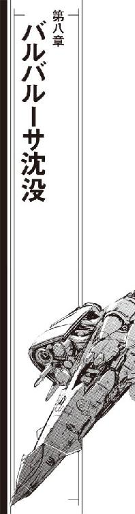
ポルト・セルーナ管制に提出された弁天丸の飛行計画は、帝国艦隊軍警察ピーター・ホーガス大尉の裏書きもあって簡単に受理された。行き先は核恒星系、統合参謀司令部。かつて、海賊を帝国から一掃した掃討戦争で全銀河の帝国艦隊の指揮を執った司令部である。
「行き先を統合参謀司令部にしておけば、わざわざ追跡してほんとうにそこに行くかどうか確認しようとは思わないでしょう」
弁天丸ブリッジのオブザーバー席で管制からの出港許可を確認したホーガスは、操舵席と航法士席、船長席にそれを転送した。
「ただし、統合参謀司令部に回航されたはずの海賊船が行方不明になったくらいじゃ帝国艦隊は動いてくれない。これから先、どうするつもりです？」
「海賊船が軍警察の士官を誘拐したって設定なら？」
茉莉香は、船長室のディスプレイに映し出された出港許可から顔を上げた。
「ケイン、順番が来たら動き出しちゃって」
広い錨泊空域だが、宇宙船の出入りは管制に管理されている。出航順位は申し込み順にさらに順位を上げるための特別料金や帝国艦隊の都合による優先順位の変更もある。
「了解しました」
すでに、弁天丸は全ての出港準備を整えていた。ホーガス大尉が乗ってきた巡視艇もドッキング解除して次の空域に移動している。
「弁天丸は、大尉のことですからもうたぶん見当は付いてると思うんですけれど、ファウンテンブロウに向かいます」
「民間企業の実弾演習空域ですか？」
オブザーバー席のコンソールからシートを後退させて、ホーガス大尉は船長席に向いた。
「ええ」
茉莉香は頷いた。
「鯨座宮航天公司名義で買った輸送船、名前はグラマラス・グレイスそのままですが、ケンジョー船長以下バルバルーサ乗組員が乗り込んで、もうファウンテンブロウに到着してるはずです」
「輸送船で？」
「ええ」
茉莉香は頷いた。
「丸腰で？」
「百戦錬磨の海賊が、完全武装の陸戦隊と一緒です」
「グラマラス・グレイスは昨日ポルト・セルーナを出港していますね。管制局に提出された飛行計画によれば行き先はガリア・ガリアのジャンク・ベルト経由でウズマサ星系。だが、ガリア・ガリアにグラマラス・グレイスが到着したという報告はまだ受けていません」
情報端末も見ずにすらすらと言った大尉の顔を、茉莉香は思わず見直した。
「知ってたんですか？」
答えずに、大尉はじっと茉莉香の顔を見返した。船長席の茉莉香は無理矢理笑顔を作った。
「なら、お話がしやすいですね。ファウンテンブロウでは、海賊船バルバルーサを標的艦にした演習が行われるはずです。演習を計画したのは軍事コンサルタントであるカリガリ・インク、協力はルーベ・マスをはじめとする造船会社、参加するのはデアフリンゲ級機動巡洋艦六隻、演習内容は新型兵装の実験名目。民間とはいえ軍需産業が戦闘空域を借り切っての実弾演習ですから、周辺空域は厳重な立ち入り禁止制限が行なわれます。演習の保安責任社、実行責任社は参加企業がともに所属する企業連合体、ラキオン」
「ラキオンがファウンテンブロウで行う演習については、第五艦隊に届け出が出ています」
情報端末も見ずに、大尉は言った。
「実験兵器の実働演習を行うのに機密保持を計るのは、軍でも民間でも変わりありません」
「演習に参加するデアフリンゲ級六隻は、実在しません」
大尉はなにも反応しなかった。構わずに茉莉香は続けた。
「演習に参加予定のデアフリンゲ級機動巡洋艦は、侵略会社ベータユニオン所属の二隻、ルーベ・マスが完成させたばかりの新艦二隻とあとは軍事レンタル会社ファイブアクシズ・サービスが提供していることになっていますが、このうちまがりなりにも存在しているのはルーベ・マスが作った二隻だけ、あとの四隻は書類上にしか存在しない幽霊船です」
「帝国艦隊は、民間企業による演習についてひとつひとつ調査確認を行うことはありません。もちろん、演習に参加予定の宇宙船が実在するかどうか確認することもありません」
「演習空域に展開する企業連合体ラキオン関連の宇宙船は、こちらの調査では二〇隻以上に及びます」
ホーガス大尉に向いたまま、船長席の茉莉香は片手を挙げた。合図を待っていたように電子戦席のクーリエはオブザーバー席にリストを送った。
大尉は、新しく表示されたディスプレイにちらりと目を走らせただけですぐ茉莉香に視線を戻した。
「そのうち、ポルト・セルーナからファウンテンブロウの演習に向けて出航した宇宙船は一〇隻。中型の高速貨物船が九隻、それからかつてバルバルーサと呼ばれていた無人標的艦が一隻です」
話を聞いているというそれだけの印に、大尉は軽く頷いた。茉莉香は訊いてみた。
「九隻の貨物船についてのデータは必要ですか？」
「見せてもらいましょうか」
クーリエは、オブザーバー席にマルクス情報システムで作成したレポートを転送した。ポルト・セルーナ港内に二隻、外の錨泊空域に七隻の高速貨物船の画像とデータがずらっと重ねて表示される。
「この九隻、運用している会社もばらばら、船齢も経歴も違います。ただし、会社はすべてラキオンの所属あるいは系列会社で、最近は数隻が同じような飛行計画で束になって運用されています」
オブザーバー席のディスプレイに重ねて映し出された貨物船の画像を、大尉はぽんぽんと切り換えていった。
「それで？」
「我々は、この九隻の貨物船が、たう星系でマリア・フォルテを襲ったデアフリンゲ級の正体だと考えています」
「貨物船が、機動巡洋艦を偽装したと？」
ディスプレイに目を落としたまま、大尉は訊いた。茉莉香は答えた。
「そうです。この九隻の貨物船は、高速船にしても大きすぎる主機を装備し、船内には充分な電子兵装と艦載兵器を装備するだけのスペースがあります」
「偽装貨物船にしては、充分な量の貨物を搭載しているようですが？」
適当にディスプレイの表示を切り替えながら、大尉が言った。
「搭載量の数字なんていくらでもごまかせます。じっさいより少ない量しか運んでいなくても、関税や手数料がきっちり支払われてるなら誰も気にしません。それに、輸送される貨物は送り主も受け取りもラキオンの系列会社です」
「企業連合体のすべてが、貨物船の偽装に荷担していると？」
「荷担してるのは貨物船の偽装だけじゃありません。貨物船が偽装出来るのは、デアフリンゲ級だけとは限りません。もし必要なデータを貰えるのなら、弁天丸だって他の宇宙船に化けることは出来ます」
茉莉香は、船長席に顔を上げたオブザーバー席の大尉をじっと見つめた。
「データさえあれば、貨物船は帝国艦隊の巡洋艦にも、反乱軍の戦艦にも化けることが出来るはずです」
「帝国の企業連合体が、なんのためにそんなことをするんです？」
大尉は淡々と訊いた。驚きもなにも感じられない。茉莉香は答えた。
「好きなところで、好きなように戦争を起こすためです」
音量を落とした呼び出し音が、控えめにブリッジに響いた。
百眼が報告した。
「ポルト・セルーナ管制から弁天丸へ、出港の順番が廻ってきた」
「弁天丸はこれから、ファウンテンブロウの演習空域に行き、弁天丸を標的艦に演習をするはずの九隻の貨物船の正体を暴きます。軍警察のピーター・ホーガス大尉には最前列の観戦席をご用意します。ご一緒して頂けますか？」
「誘拐されてる身の上の憲兵に選択の余地があるんですか？」
にやにや笑いを浮かべて、大尉は両手を挙げた。
「どこへ連れて行かれて、なにを見せられようと、抵抗できるわけがないじゃないですか」
「たぁぬきめ」
百眼の呟きを無視して、茉莉香はにっこり微笑んだ。
「では、行きましょう。弁天丸、発進！」
「敵は九隻の仮装戦闘艦に加えて調査観測船四隻、補給整備のための船団は無視出来るにしても、ラキオンが運営している軍事会社から護衛艦隊も出ているそうじゃないですか」
超光速航行に入った弁天丸のブリッジで、大尉は茉莉香に質問した。茉莉香はオブザーバー席の大尉に目を向けた。ファウンテンブロウの演習空域に展開する予定の船団について、機密保持のために展開されるであろう護衛艦隊に関する確実な情報は弁天丸にはまだない。
「もう一度聞きますが、こちらの戦力は？」
「弁天丸と、バルバルーサ乗組員が乗り込んで先行しているグラマラス・グレイスの二隻だけです」
茉莉香は正直に答えた。
「現地で、標的艦に改装されたバルバルーサをこちらの手に取り戻せば、こちらの戦力は大幅に増加します」
「他には？」
「帝国艦隊の軍警察の有能な大尉さんが一緒です」
噴き出しそうになるのをこらえながら、茉莉香はかろうじて言い切った。難しそうな顔をして、大尉は茉莉香から目を逸らした。
「いくらなんでも、戦力が違いすぎるんじゃありませんか？ 前回の弁天丸の戦闘データを信じるなら、デアフリンゲ級に偽装していた敵船の戦力は単純計算でも一隻あたり弁天丸の二倍、それが複数となると戦力差は幾何級数的に開きますが？」
「敵が艦種を偽装出来るんだと解ってれば、いくらでも戦い方はあります」
ブリッジ最年少の自分の言葉が、軍警察の大尉にどれほどの説得力を持って届くか考えながら茉莉香は言った。
「敵は、今回の戦闘がシナリオ通りの演習だと思ってるはずです。今回、防諜には特に気を使いましたから、外部勢力の介入が予定されてるとは気付いてないはずです」
「演習のシナリオは手に入りましたか？」
のんびりした声で訊かれて、今度は茉莉香が目を逸らした。
「残念ながら、細かい進行予定どころか全体構成のシナリオも手に入れていません」
茉莉香は、主張すべき事項を頭の中で必至にリストにして言った。
「今回の作戦は、敵に悟られて演習の予定を中止にするだけでもこちらの負けになります。可能な限り相手に気取られないよう、こちらからの情報収集は最低限に留めました」
「それが、マルクス情報システムのポルト・セルーナにおける活動の成果ですか？」
「はい」
茉莉香は頷いた。
「あたしがうっかり報告聞いて、それを大尉に聞き出されちゃまずいと思ってなにも聞いてなかったんですけれど、うちの腕利きがバルバルーサのスタッフと共同でいろんなところに調査を掛けました。電子戦は、仕掛けてるって気付かれたら対応されちゃいますから、どれだけ気付かれないように仕掛けるかが腕の見せ所なんだそうです」
「なるほど」
弁天丸のブリッジを見廻した大尉は、船長席の茉莉香に目を戻した。
「その気になればいくらでも引っかき回せるはずの魔法使いがごっそり揃ってるにしちゃ動きがおとなしいと思いましたが、それは意図してのものだったんですか」
茉莉香は、百眼とクーリエにちらりと目を走らせた。超光速航行中のブリッジで、二人ともいつもどおりの後ろ姿で仕事をこなしている。
「やっぱり見てらっちゃったんですね」
茉莉香は大尉に目を戻した。
「それで、ここまで平和にお付き合い頂けたと言うことは、少なくとも企業連合体ラキオンが主催する今回の演習は、当初の予定通り行われると思っていいんでしょうか」
「帝国艦隊は民間企業の演習のスケジュールくらいまでならともかく、その内容までは関知しません」
大尉はいつもと同じ口調で答えた。
「新兵器のテストかなにかで星を砕くような大規模な環境破壊が行なわれるというなら話は別ですが、企業活動の範囲で行なわれる限りは企業秘密に不必要に関わりたくないという方針もありますから、演習内容までは関知しません」
「こちらで得た情報では、ファウンテンブロウで行なわれるのはラキオン系列の会社が開発中の戦闘システムの試験だそうです」
大尉相手に茉莉香がいくら粘ったところでろくな情報が得られないのは解っている。茉莉香は先に話を進めた。
「バルバルーサを標的艦に、戦艦にも巡洋艦にも偽装出来る電子戦艦で様々なパターンを試すものと予想しています」
説明しながら、茉莉香は注意深く大尉の表情を読もうとした。もしこちらの読みが大尉が得ている情報と違っていれば、多少なりとも助言が得られるかもしれない。
「演習で、しかも九隻もの偽装艦を連動して動かしての実験となれば、シナリオは実際の戦闘よりもかなり遅いはずです。これだけの宇宙船を投入して、広域の演習空域を借り切っての演習なら予算もかなりの規模になるはずですから」
「民間企業がどのような演習を行っているかについては残念ながら詳しくないんですが」
大尉はぽりぽりともじゃもじゃ頭を掻いた。
「帝国艦隊があなたがた海賊や会社艦隊を仮想敵として雇う場合は、実戦さながらのスピーディーな戦闘が行なわれるんじゃありませんでした？」
「帝国艦隊との演習は実戦前提ですから」
茉莉香は、目の前の大尉にどこまで説明すればいいのかわからなくなった。軍警察なら艦隊戦は専門外でも不思議はない。
「実験艦でしかも標的艦相手なら、周囲の観測船でデータを取りながら演習することになりますから、その進行は実戦前提の実弾演習よりもゆっくりとした進行になると考えています。実際に、新規開発された戦闘艦のテストは実戦にはほど遠いスケジュールでゆっくり行われるそうですから」
茉莉香は新造艦の実験飛行など見たことはない。全て、乗組員からの受け売りである。
「しかし、演習空域には観測船だけで四隻、ほかに護衛艦隊も展開するんでしょう」
大尉はのんびりとディスプレイの表示を切り換えた。
「隠密行動が得意な弁天丸はともかく、電子兵装もない輸送船を使うバルバルーサの乗組員はいったいどうやって現場に入り込むつもりなんです？」
「演習すれば、補給が必要になります」
ファウンテンブロウで演習に参加する各艦の補給スケジュールは判明していない。
「今回の実験は、標的艦にまで実弾を積み込んで様々な状況を模擬するものです。実験データは一回ごとに観測船に集められるでしょうけど、ファウンテンブロウに向かう輸送船が調達した補給物資の中にはバルバルーサ向けの旧式なミサイルもありました」
演習船団向けの補給物資は、ポルト・セルーナよりもはるかにセキュリティレベルの低い田舎の中継ステーションで調達された。全銀河のどこから出発するかもわからないファウンテンブロウに目的地を定めた輸送船がどこでなにを積み込むかという気の遠くなるような調査で、バルバルーサの電子戦スタッフは現代の戦闘艦では搭載されることのない旧式な母船誘導式のミサイルの注文票を見付け出したのである。
「安くない金額で手に入れた海賊船を、使えるうちは使えるだけ使い倒すつもりだと思います。そして、実験の数をこなそうと思ったら標的艦にも補給が必要です」
「......グラマラス・グレイスで、バルバルーサへの補給船と入れ替わるつもりですか？」
「詳しい作戦は聞いてません」
茉莉香は正直に言った。事前に確認出来る情報が少なかったため、ケンジョー船長も「貨物船を囮にしてバルバルーサを取り戻す」程度のいいかげん極まりない作戦方針しか立てていない。
「だけども、バルバルーサを標的艦として敵の手に置いておけば、それだけ敵の戦力が多くなります。逆に、敵の手の内にあるバルバルーサは最強の囮になります」
「......バルバルーサを、外から動かせるのですか？」
「ケンジョー船長は、そう言ってました」
茉莉香は頷いた。
「バルバルーサは、最初に海賊免状を頂いてから百年以上も現役の海賊を続けている宇宙船です。数日間の改装程度で無人運行の標的艦になるような簡単な宇宙船じゃないでしょう」
「えーつまり......」
ホーガス大尉は、難しい顔でオブザーバー席をブリッジ正面、弁天丸の進行方向に向けた。
「あなた方は、旧式な海賊船たった一隻で民間企業が最新鋭の実験戦艦を演習させようという空域に潜り込み、あまつさえ標的艦として敵の手に落ちている宇宙船を取り戻し、はるかに優勢な実験艦隊に勝とうと、そういうつもりなわけですか？」
「勝つ必要はないんです」
ほっとして、茉莉香は言った。
「演習中の実験艦隊が、複数の艦種を偽装して戦闘出来るという、その戦闘データさえ盗れれば、直接戦闘の必要もないかもしれません」
「まだこちらの手にも入っていない、しかも無人標的艦として運用されているような宇宙船と状況も解らない輸送船まで戦力の勘定に入れて、正確な戦力の算定も出来ていない実験艦隊を相手にするつもりですか」
茉莉香は笑顔のまま答えた。
「ええ、たぶんそうなります」
大尉は大袈裟な溜息を着いた。
「聞きしに勝る無茶苦茶ですな。ゴンザエモン船長以上だ」
それまで無表情を装って任務に集中していたブリッジクルーの視線がオブザーバー席に集中した。笑顔を顔に貼り付けたまま、茉莉香はひきつった声で聞いた。
「......父を......先代の弁天丸船長、ゴンザエモン加藤をご存知なのですか？」
「今回の件を担当するに当たって、昔の記録を見ただけです」
興味深げにブリッジクルーの顔を見渡しながら、大尉は答えた。
「信じ難いような記録ばっかり残っていて、帝国艦隊に直接関係がないレポートはかくもいい加減が罷り通るのかと呆れておりましたが、どうやらまんざらそうでもなかったのかもしれません」
茉莉香はちらりとブリッジクルーの顔を見廻した。父の現役時代の話はほとんど聞いていない。
操舵席のケインが正面に向き直った。
「まもなくタッチダウンだ。通常空間に復帰する」
「いちおう、厳戒態勢で」
タッチダウン・ポイントはファウンテンブロウだが、演習艦隊からは遠く離れているはずである。敏感な観測船を擁している艦隊のそばにタッチダウンすれば、それだけで空間微動を感知される。
「いきなりどんぱちなんてことにはならないはずだけど、最大限気を付けて」
気のない顔でオブザーバー席のコントロール・パネルをいじっていたホーガス大尉が、いきなり声を上げた。
「ちょっと待って下さい、このタッチダウン・ポイントは!?」
「降りた先は、もう敵地です」
澄まし顔で、茉莉香は船長席に深く座り直した。
「ちょっと、揺れるかも知れません」
「この座標は赤色巨星のすぐそばじゃないですか！」
大尉は、自分が見ているデータの間違いを探すようになんども数字を確認した。
「こんな長距離で、こんなに巨大な恒星のそばにタッチダウンすることなど有り得ない!!」
超光速跳躍の精度は、通常空間の状況に支配される。正確に跳ぼうと思ったら、テイクオフもタッチダウンも重力源やエネルギー放射源となる天体からは出来るだけ離れた、安定した空間を選ばなければならない。
弁天丸のタッチダウン・ポイントは、ファウンテンブロウにいくつもある星系のうちもっとも重力の大きな寿命末期の赤色巨星のすぐそばだった。表示されている数字が真実なら、そのタッチダウン・ポイントは帝国艦隊が定めている超光速跳躍のための安全基準を大幅に下回る。
「長距離跳躍ですから、これくらい恒星に接近してタッチダウンしないと観測網を拡げている敵に感付かれるおそれがあるんです」
ほとんどかっこつけのためだけに、茉莉香は艦長席のバックレストからシートベルトを引っ張り出した。
「ラキオンが演習のために集結ポイントに指定した星系からは離れてますから、よほど敏感に調整した観測船を集中させていない限りは見つからないとは思いますけれど」
「跳躍誤差はどうするんです！」
焦った声で、ホーガス大尉は訊いた。
「恒星表面からこんな近距離をタッチダウン・ポイントに設定したら、恒星の中に出現する可能性が！」
「大丈夫、ちょっと熱いくらいで済むはずです」
恒星表面といってもその実体はプラズマであり、岩石惑星のような個体ではない。
「タッチダウン時の速度を考えたらほとんど固体みたいなものじゃないですか！」
惑星間航行速度で突っ込めば、プラズマといえどもその抵抗は莫大なものになる。
「ご心配なく」
声を掛けたのは舵輪を握るケインだった。
「海賊の地図と腕を信用して下さい」
弁天丸は、通常空間にタッチダウンした。
超光速跳躍は、長距離を跳ぶほど強力なエネルギーを必要とする。跳躍に投入されるエネルギーが大きくなればなるだけ、周辺空間に与える影響も大きくなる。弁天丸は、予測される演習船団から可能な限り距離を置いてファウンテンブロウの通常空間に復帰した。
ファウンテンブロウはひとつの星域を示す名前ではない。それは、開発されず、知的生命体も住んでいない広大な空域を含む名前である。
ファウンテンブロウに設定されている演習空域は、数個の恒星系と暗黒雲を含む差し渡し十数光年にも及ぶ。
人が住む惑星も、中継ステーションも、鉱山を含む資源星も存在しない。無人観測機が一定間隔で配置され、空域内の空間状況を逐一管理会社に伝えているが、それ以上の活動は行なわれていない。
恒星が密に存在する銀河腕ではなく、オリオン腕とペルセウス腕の間の暗黒湾と呼ばれる領域に拡がる空域は、文明も発生せず、生命の生存に適した恒星があまり無いこともあり、ほとんど開発されずに原初の状態を留めている。
宇宙空間で、戦闘が起きる状況は実は限られている。生命は星に住むものであり、惑星地表でなくても生命のための環境を宇宙都市あるいは中継ステーション、スペース・コロニーや人工惑星などに作り上げ、維持しなければならない。
全ての戦闘は、敵と味方の意思によって行なわれる。互いの意思とは恒星系や星、あるいは生命や資源などの確保あるいは奪取である。
互いの戦力は、可能な限り維持される。敵味方が納得尽くで互いの戦力をすり潰すというそれだけの目的のために恒星間空間で大艦隊がぶつかり合う状況は、実はほとんど起こらない。
演習は、戦闘が発生する可能性が高い状況を模して行なわれる。ほとんどの戦闘は、母星を遠く離れた恒星間空間ではなく、すぐそばに母星がある星系内で行なわれる。
演習予定が設定された空域は、ファウンテンブロウの中ではもっとも活発なスペクトルＦ型恒星を中心とした星系の外惑星系だった。茉莉香はこっそり聞いた。
「ばれたと思う？」
恒星としては消えかけているとはいえ、赤色巨星も直上では莫大な熱を放射する。弁天丸は熱防護システムをフル・パワーで作動させて耐えられるぎりぎりまで恒星表面まで接近したまま滞空していた。
「予定通りなら、演習船団はＬＦ５２５星の外惑星系に展開しているはずです」
航法士席のルカが答えた。
「タッチダウン・ポイントは狙い通り赤色巨星を挟んでＬＦ５２５の反対側。これだけの長距離跳躍ですから赤色巨星を集中観測してれば背景の揺らぎくらいキャッチされた可能性はありますが、専用の調査船でも跳ばしてこない限りは何が起きたかなんてわかるはずありません」
「敵の目を眩ますためとはいえ、恒星のすぐ近傍にタッチダウンとは......」
さっきまでと打って変わったハイテンポでオブザーバー席のコントロール・パネルを叩く片手間に、ホーガス大尉が質問した。
「弁天丸の航海は、いつもこんな具合なんですか？」
「ええ、まあ」
どう答えていいかわからずに茉莉香はあいまいな笑みを浮かべた。
「今回はまだ、実戦はじめてないだけ平和かな？」
「オーライ、周辺状況確認完了！」
百眼が観測データを船長席に廻してきた。
「さすがに赤色巨星の向こう側までは見えないが、こっちのセンサーで見通せる限り、宇宙船も無人観測機も見えない。動き出しても大丈夫だぜ」
「レーダー使うと居場所ばれちゃうからねえ」
電子戦席のクーリエは、受信だけにセッティングしたレーダー画面の確認を続けている。
「超光速レーダーでも跳ばさない限りは、まあすぐに気付かれるってことはないと思うけど」
「ＬＦ５２５周辺の状況は？」
さすがに隣の恒星系までは見えないだろなーと思いつつ、茉莉香は念のために聞いてみた。
「演習船団とか、見えない？」
「見えない」
百眼はあっさり答えた。
「だが、データが来たぜ」
一瞬だけ立ち上げた超光速回線が、弁天丸宛に超空間を漂っていたデータコンテナを受信した。
「先行してるグラマラス・グレイスから、タイムスタンプは一〇分前、最新情報だ」
「ほんもの？」
念のために茉莉香は聞いてみた。超光速回線経由でも、データを偽装する方法はいくらでもある。
「だと思うね」
百眼は、高密度圧縮された受信データの解凍を開始した。
「画像データだ。見るかい？」
「お願い」
百眼は、ブリッジのメインスクリーンで画像データの再生を開始した。バルバルーサよりはるかに広くて殺風景なブリッジに、作業服姿のチアキ・クリハラのバストショットが映し出された。
『こちらグラマラス・グレイス、現在位置はＬＦ５２５、第二アステロイドベルトの中』
伝えるべきメッセージが映し出されているらしい手許のノートから、チアキは通信モニター用らしいカメラに顔を上げた。
「チアキちゃんだ」
茉莉香は嬉しそうに言った。
『わたしがメッセンジャーなのは、この通信がうちから発信されていることを証明するためです。現在までに得られた情報は同梱のデータを見て下さい。グラマラス・グレイスは現在無線封鎖中、ラキオンの演習船団の通信回線のモニター状況にいくつか穴を見付け出しましたが、あからさまなのでおそらく同業他社の産業スパイを誘う罠だろうと考えて使っていません。そちらでも無視して下さい。定時連絡のみ受信します。通信コードと時間はこれもデータを確認して下さい。こちらはそろそろ動き出します』
メッセージを読み上げたチアキが、心配そうな顔でカメラを覗き込んだ。
『ここに来てわかったけど、この演習、神経質なくらい厳重よ。親父たちもぴりぴりしてる。気を付けて』
「以上だ」
百眼は、画像データの終わりを告げた。
「あとは、バルバルーサ、今はグラマラス・グレイスか、あっちがあり合わせの観測機器で捉えた演習船団の配置と進行状況」
解凍したデータをディスプレイ上にスクロールさせながら、百眼は説明した。
「ただの輸送船に標準装備のセンサーと観測機器だけでよくもこれだけデータ揃えられるもんだ」
「あっちは戦艦だもの」
茉莉香は船長席に転送されてきたデータを見た。
「直接戦闘なんかうちよりいっぱいやって、それで平気で生き残って来てるのよ。グラマラス・グレイスがいる第二アステロイドベルトっていうのは？」
「ＬＦ５２５はその軌道上に四つの小惑星帯を持っています」
ルカが、メインスクリーンにＬＦ５２５を中心とした星系の模式図を写しだした。
「原始星系のリングにしちゃ時間が経ちすぎてるから、おそらくなんらかの原因で形成されたものでしょう」
「なんらかの原因って......」
「ここは演習空域ですから」
ルカはつまらなさそうな口調で言った。
「もとからそこにあった惑星を吹き飛ばしたのか、どこかから持ってきた遊星を標的にしたのか。カタログに載ってるアステロイドの成分みると全部が全部この星系の出自って訳でもないから、他の星系の小惑星だけじゃなくて標的艦にしたスクラップとかプラント船の破片なんかもあるみたいね」
「演習専用の空域なんて物騒なところだと思ってたけど、それだけ荒れてるってことか」
茉莉香は、ＬＦ５２５が五つもっている惑星とは別に存在する四つの小惑星帯の状況を確認した。グラマラス・グレイスの観測でもカタログの公式情報でも、内側から二番目の小惑星帯がもっとも高密度である。
「ずいぶん濃くない？」
生成されてから年月を経た星系の小惑星帯は、大重力の惑星に引かれてまとまるからそれほど高密度にはならない。しかし、星図で見てもＬＦ５２５の小惑星帯は常識で考えるよりもはるかに高密度に見える。
「よく、小惑星帯で安定してるわね」
「安定してません」
ルカは答えた。
「小惑星帯の厚さが、ＬＦ５２５に対して大きすぎます。リングとして安定するなら、もっと薄くなるはず。この厚さだと、数百万年で惑星になるんじゃないかしら」
「数百万年......」
それは星にとっては短時間でしかない。
「ええと......」
茉莉香は星図にあるＬＦ５２５の小惑星帯の情報を呼び出した。
「全部、カタログになってるの？」
「演習空域に設定されてるおかげで軍用並みの立入り禁止空域ですから、カタログに載ってるのは長径で五〇〇メートル以上、質量で一〇〇〇万トン以上の大きな石だけです」
通常の星図と比べればはるかに空白の多いリストをメインスクリーンに出して、ルカは言った。
「だけど、民間企業のくせにこれだけ念の入った機密体制で実験演習するような連中が、公式カタログの星図しか使わないで演習のシナリオ組み立てるなんてはずはありません。砂粒みたいなデブリまで番号振って追跡してるとは思わないけど、メートル単位の石の観測くらいなら弁天丸だって出来るもの、専用の観測船まで使ってる連中が知らないはず、ない」
「相手が持ってる地図がこっちより細かいってのは厄介ね」
茉莉香は、ぎっしりとＬＦ５２５のまわりを廻るアステロイドが書き込まれた星図を拡大してみた。大きくて重い小惑星だけしか星図に記されていないというのに、それだけでも表示を重く感じる。
スペクトルＦ型恒星であるＬＦ５２５を遠く離れてリング状に取り囲むアステロイドベルトは、場所によって密度が異常なまでに濃いところと薄いところがある。
通常なら、恒星系が持つ一本のアステロイドベルトはそこにある全てのかけらを集めても小さな惑星にしかならない。しかし、ＬＦ５２５の星系全体の質量のうち恒星以外の質量はかなり大きい。第二アステロイドベルトに散らばる小惑星をすべて合わせれば、大気や海を持つような重力を持つのに充分な岩石惑星をいくつも作ることが出来る。
「主要な演習空域は第二アステロイドベルトと第三惑星軌道の間か」
茉莉香は、グラマラス・グレイスから送られてきたデータにあるこれまでの演習記録を見た。ＬＦ５２５を中心とした星系図を大きく展開して演習記録と重ねてみる。
ＬＦ５２５は、いちばん内側に恒星が纏うリングのようなささやかな小惑星帯を持っていた。かつて第一惑星だったものが砕けたらしい。その外側に今の第一、第二惑星があり、第二アステロイドベルトがあり、第三惑星がある。岩石惑星なのは第三惑星までで、第四惑星は分厚い大気を主成分とする巨大ガス状惑星、次の第五惑星も第四ほどは大きくないもののかなり大きなガス状惑星で、いずれもリングを持つ。
そのさらに外側に薄い密度の第三アステロイドベルト、さらに外側にもう少し小さければ小惑星に勘定されるであろう最後の第五となる岩石惑星があり、いちばん外側に第四アステロイドベルトがある。
主星すら記号でしか呼ばれない星系だから、五つの惑星も識別記号しか与えられていない。いちばん大きなものなら数百キロにも及ぶサイズのものがあるアステロイドベルトの小惑星も、識別記号付きの番号が振られているだけである。
「念のために聞きますが」
一通りの情報は収集し終えたのか、オブザーバー席のコントロール・パネルを叩く手を止めた大尉が口を開いた。
「弁天丸も、ＬＦ５２５に跳ぶのですか？」
隣の星系とはいえ、現在位置からＬＦ５２５星系までは光年単位の距離がある。
「ええ」
茉莉香は答えた。
「でないと、間に合いませんから」
「仕方ありませんね」
軽く首を振って、大尉はコントロール・パネルを叩いた。
「ファウンテンブロウの星図、第五艦隊司令部の最新版です」
「最新版ですって!?」
ルカがめったに聞けないような高音を発した。オブザーバー席から船長席に、大きなデータコンテナがどさっと届いた。
帝国艦隊の任務の中に、星図の製作という項目がある。
艦隊を運用するためには、多数の艦艇を展開する作戦空域を正確に把握していなければならない。そして、戦闘はいつどこで発生するか、予想出来ない。そのため、帝国艦隊はどこよりも正確な星図を持っていることを求められる。
人が住む星系なら、その行政府は正確な地図を作らなければならない。銀河帝国は支配下にある星系と星図を共有するが、そうでない場所に関しては帝国艦隊が調査して星図を製作する。
「チェックして」
自分でそれを開く前に、茉莉香は船長室に廻されてきたデータを百眼、ルカとクーリエに廻した。
「何故、帝国艦隊の星図を提供して下さるのですか？」
茉莉香は、大尉の横顔を見た。星図は、大宇宙を航行するものにとって共有されるべき財産である。しかし、最新の情報が反映された精緻な星図はそれだけで有力な戦闘情報となる。
「ファウンテンブロウを管理しているマルグリット・サービス会社が提出したデータです」
大尉はなんでもなさそうに手を振った。
「公式星図より多少は細かいでしょうが、おそらく演習艦隊が使っているものほどの精度はないでしょう」
「帝国艦隊が公開していいものなのですか？」
茉莉香は重ねて訊いた。大尉は茉莉香の顔を見ずに答えた。
「無制限に公開したわけじゃありません。航行の安全を確保するために必要と思われる情報を一部提供しただけです。銀河帝国艦隊の業務には、安全な航行を保障することも含まれますから」
「......すごい」
さっさと目の前の航法ディスプレイに星図を展開したルカが唸った。
「マルグリット・サービスは、帝国艦隊向けに提供する情報の精度を落とす手間も省いたようです。生データそのまんまだから、星図として使うには処理しなきゃならないけれど、数メートル単位のかけらまでプロットされてます」
「貴重な情報の提供、感謝します」
茉莉香は大尉の横顔に一礼した。大尉はわずかに顔を歪めて首を振った。
「いえ、さすがにこちらの命が惜しくなっただけです。ＬＦ５２５への跳躍もさらに詰めたポジションで行うつもりなんじゃないですか？」
「ええ、そうしないと調査船まで展開してる演習艦隊に部外者が入り込んで来たってばれちゃいますから」
「生き残ることも、艦隊の重要な任務のひとつなので」
「ありがとうございます。これで、生きてファウンテンブロウから帰れる確率がかなりよくなりました」
「どっからこんなもの引っ張り出してきたのか知らないけれど」
最終校正日とか原典データの所在とか、帝国艦隊提供の星図なら記入されているはずの項目が空白のままのデータを見た百眼が船長席に振り返った。
「生データそのまんまってことは、提出された星図データを帝国艦隊もチェックしてないってことだぜ」
「すいませんねえ、帝国艦隊ってのは帝国でもっとも大きなお役所ですから」
「星図にする処理って時間かかるの？」
質問した茉莉香に答えたのはルカだった。
「機械処理でよければすぐに終わるわ。そのあと、じっさいに使えるかどうかチェックしないと信用出来ないけど」
「チェックは使いながらやりましょう。星図に処理出来たら、次の定時連絡でチアキちゃんのところに送ってあげて」
茉莉香は、グラマラス・グレイスからの超光速通信に含まれていた定時連絡の情報を確認した。超光速回線は盗まれる心配はほとんどないが、超空間を経由して行なわれるために付随現象が観測されやすい。ＬＦ５２５の第二アステロイドベルト内に潜伏しているグラマラス・グレイスは、危険を最小限に抑えるために超光速通信の送受信タイミングを数時間おきのほんの数秒間に設定していた。
「それから、チアキちゃんからの情報分析して、どのタイミングでどうやってあっちに跳ぶか決めましょう。演習は、もう開始されてるんでしょ？」
「ああ」
答えた百眼が、解いた戦闘データを船長席をメインスクリーンに映し出した。
「グラマラス・グレイスからの観測データにはすでに二回の演習のデータが入ってる。うち一回はデアフリンゲ級三隻による攻撃演習だが、もう一回はロキュータス級電子戦艦二隻による要塞戦想定の電子戦演習だ」
「ロキュータス級電子戦艦？」
聞き覚えのないクラスの名前を、茉莉香は繰り返した。クーリエが、カタログにある艦影をディスプレイに出した。
「新型の電子戦艦よ。ヒュー＆ドリトル星間運輸護衛艦隊の旗艦、ジャバウォッキーと同型」
「ジェニー先輩の実家の戦艦......」
思い出した茉莉香はすぐに次の指示を出した。
「そんな大きな艦なら、全部の居所簡単に解るわよね。今のうちにロキュータス級の現在位置、チェックして！」
「言われなくてももうやってるう」
クーリエは、跳躍前に調べておいた帝国内の全ての軍艦の最新データの中からロキュータス級電子戦艦の現在位置をリストにして表示した。
「いま作戦行動状態にあるロキュータス級は二八隻、民間の護衛艦隊所属が六隻、星系軍や防衛軍所属が八隻、あとは帝国第二艦隊と第三艦隊に七隻ずつ！」
銀河系全域を表示した星図に、クーリエはロキュータス級電子戦艦の現在位置をプロットした。
「データは弁天丸の跳躍前に更新済みだから多少の時間差はありますし最新の情報とも言えませんけど、少なくともファウンテンブロウを中心とした半径一〇〇光年にはロキュータス級電子戦艦は一隻もいません！」
「どうですか、大尉？」
茉莉香は、気のない顔で銀河系宇宙図を見ている大尉に訊いた。
「ロキュータス級の現在位置に関する最新情報を、ここで更新して付き合わせた方がいいですか？」
「超光速通信の使用は最小限に抑えたいのではないですか？」
大尉はオブザーバー席のディスプレイに目を落とした。グラマラス・グレイスから送られてきた二回目の戦闘情報を開いて映し出す。
「前にも言いましたが、これは単なる電子情報でしかありません。この戦闘情報が実際に行なわれたものか、それとも電子回路上で作られたデータでしかないのか、それを決定するのはあたしじゃなくて上です」
「ファウンテンブロウでの演習への参加艦艇として第五艦隊に届け出が出ていたのは、デアフリンゲ級だけのはずです」
大尉の表情を注意深く観察しながら、茉莉香は言った。
「もしこの戦闘情報が事実だとすれば、演習船団は第五艦隊への届け出を偽ったことになります」
「あとから、ロキュータス級戦艦の参加が追加で届け出られたかも知れません。修正して済むようなミスはどこにでもあります」
大尉はなんでもなさそうに答えた。
「事実でないとすれば、グラマラス・グレイスが架空の戦闘情報を作って弁天丸に送ったという可能性も考慮しなければなりません」
「では、やはりファウンテンブロウに行って目の前で偽装船の演習を見なければなりませんね」
用意していたような台詞を口にした茉莉香に、大尉は目を向けた。目の前の戦闘情報を見て、宇宙船の進行方向を指す。
「やっぱり、行きますか？」
「最初からその予定ですから」
茉莉香は船長席に座り直した。
「せっかく協力的に誘拐されてくださった大尉には、どうあっても最後まで付き合って頂かないと」
「危ない橋渡るのはあたしの仕事じゃないんですけど」
困ったような顔で、ホーガス大尉はもじゃもじゃ頭をかいた。
「えー、誘拐されてる身の上じゃあんまり聞いて貰えないと思いますが、出来る限り穏便にお願いしますよ」
「努力します」
二時間後、グラマラス・グレイス宛に時間を合わせた定時連絡で処理を終えて使えるようになったＬＦ５２５の星図データが、弁天丸から送信された。ほとんど折り返しのようなタイミングで、弁天丸宛に返信が返ってきた。
最初の通信にはラフプランのような形で作成されていたバルバルーサの奪還計画が、弁天丸からの星図を得て相当に細かく具体的に書き込まれている。
「あいかわらず化け物じみた立案能力だ」
送られて来た作戦計画のタイムスタンプを見た百眼が声を上げた。
「こっちの定時連絡からわずか一〇分で、こっちの送った星図を元に作戦手直ししたんだぜあの副長」
「ノーラさんが？」
訊いた茉莉香にクーリエが答えた。
「バルバルーサの作戦は、ほとんどがノーラ副長の手になるものです。ケンジョー船長はもっぱら実戦指揮が専門で、細かい作戦を同時並行で進行なんて仕事は副長に任せっきりだそうですから」
「へえ、まあ、そう見えるけど」
茉莉香は、グラマラス・グレイスから送られてきた作戦手順書をホーガス大尉に示した。
「どう思います？」
「申し訳ない、対艦戦闘はもちろんその作戦立案も専門外でして」
大尉は片手で拝むような仕草をした。
「実弾演習中に標的艦を取り戻すための作戦です」
軍警察の士官が宇宙空間での対艦戦に詳しい必要はない。素人ぶっている大尉をどこまで信用したものか考えながら、茉莉香は説明した。
「演習想定は、機動巡洋艦による標的への遠距離砲撃。標的になっているのはＱＤ０４４３、バルバルーサです。場所は、第二アステロイドベルトと第三惑星軌道のあいだ、参加艦艇はデアフリンゲ級四隻」
茉莉香は、演習の最初の四隻のデアフリンゲ級及び遠く離れている標的艦ＱＤ０４４３の現在位置をＬＦ５２５の星図上にプロットした。
「標的艦は、半自律で演習船団からコントロールされています。想定は強電子妨害下ですから、四隻のデアフリンゲ級は電子戦を行いながら逃げるバルバルーサに長距離砲撃を行います」
「かなりの長距離砲戦ですな」
最初の配置を見た大尉が感想を述べた。
「こんな長距離で当たるものなのですか？」
「カタログ上だけなら」
茉莉香は答えた。
「静止目標が相手なら、巡洋艦クラスでも惑星軌道半径くらい離れた目標を狙えます。ただ、現実的にはエネルギービームは光速を越えませんから、命中は数分後なんてことになるとよほど相手の未来位置を正確に予測しないと簡単に逃げられちゃいますけど」
「標的艦はセッティングされたとおりに電子妨害や攪乱幕をばらまきながら逃亡、追っ手側は追撃しながら長距離艦砲射撃ですか」
演習シナリオのおおまかな流れだけを読み取って、ホーガス大尉は船長席を見上げた。
「それで、ケンジョー船長はどうやってバルバルーサを取り戻すつもりですか？」
「演習中のバルバルーサに乗り移って」
茉莉香は、演習シナリオにあとから書き加えられたグラマラス・グレイスの動きを立体ディスプレイ上に重ねて見せた。大尉はあからさまに顔をしかめた。
「可能なんですか？ 演習中の標的艦といったら、廻りからばんばん狙われてるんじゃないんですか？」
「普通なら無理だと思います」
茉莉香は、予定されている無人標的艦の機動をディスプレイ上で追跡してみた。
「旧式で軽戦艦、しかも無人運行中とはいえ戦闘機動中のバルバルーサだと、いくら高速仕様でもグラマラス・グレイスみたいな貨物船じゃついていくだけでも難しいと思います」
「なのに、やると？」
「幸いにして、演習開始時に標的艦は本体から遠く離れます」
茉莉香は、演習シナリオのスタート時点まで船団配置を巻き戻した。
「演習全体を記録する観測船の配置ももっとも離れます。このタイミングで仕掛けて、バルバルーサの最新状況を欺瞞出来れば。接近してくる機動巡洋艦隊に見つからずにグラマラス・グレイスがバルバルーサに接舷、コントロールを取り戻すことが出来るでしょう」
いつもながら御都合主義の作戦シナリオを見て、説明しながら茉莉香は最悪の場合の行動を考えていた。グラマラス・グレイスが巡洋艦隊の標的になったら、乗組員を無事に救出しなければならない。
「どうやって、観測船と攻撃側の巡洋艦相手に標的艦の状況を欺瞞するんです？」
訊いた大尉に、茉莉香はにっこりと答えた。
「もちろん、弁天丸が現地で演習船団に電子攻撃するんです。どおクーリエ？ 行けそう？」
「攻め手の偽装予定がデアフリンゲ級ってのが助かります」
コントロール・パネルに両手を走らせながら、クーリエは答えた。
「ただし、戦力の設定条件がデアフリンゲ級ってだけで、偽装も含めた電子戦力は別物と思わなきゃなりません。少なくともバルバルーサのコントロールを取り戻すまでは演習を見てる観測船にも見つかっちゃまずいわけだし」
「タイミングは？」
「最新のグラマラス・グレイスからのシナリオを信じるなら、いますぐ動き出す必要があります」
早いタッチでコントロール・パネルを叩きながら、クーリエは言った。
「最初の通信で、グラマラス・グレイスはこれから動き出すって言ってました。演習は超長距離砲撃戦から開始ですから、各艦の距離が離れている最初のうちの方が作戦成功率が上がります」
「動ける？」
「帝国艦隊からのデータで、精密跳躍が可能になりました」
こちらはゆったりとルカが答えた。
「前跳躍現象を演習船団に気付かれないよう、最大限にＬＦ５２５に接近して演習空域の反対側にタッチダウンすることになりますが、今回は短距離だしデータもばっちり、よっぽど運が悪くない限りＬＦ５２５の直近にタッチダウン出来ます」
ルカは、予定軌道をメインスクリーンに描き出した。
「また恒星のすぐそばに降りるんですか」
うんざりしたような声を上げた大尉に、茉莉香は笑いかけた。
「宇宙服をお貸ししましょうか？」
「結構です。船内の与圧大気を抜いて高温をやり過ごすとかいうなら話は別ですが」
「演習船団の観測船に気付かれる可能性を出来るだけ下げるため、タッチダウン後もしばらくはＬＦ５２５の直上に張り付くことになります」
ルカの予定軌道を見て、茉莉香は眉をしかめた。
「大丈夫なの？ スペクトルＦ型恒星って、たう星より熱いんでしょ？」
たう星はスペクトルＧ型黄色恒星である。ＬＦ５２５は、たう星よりも高温のスペクトルＦ型黄白色恒星に分類されている。
「表面温度でたう星より千度がところ上ですね」
クーリエが簡単に答えた。
「大丈夫、五千度が六千度になっても熱さに大した違いはありません」
「二割違ったら大違いでしょうが！ 大丈夫なの？」
「もちろん、長時間は保ちません」
操舵席に転送されてきた飛行計画をチェックしながらケインが答えた。
「フレアなんかどこに出るからわからないから出たとこ任せで避けながら、アンテナもあとで使うこと考えると高温に曝すわけにはいきませんから全収納状態のまんま恒星表面を突っ切ることになります」
予定されているタッチダウン・ポイントは演習空域から見てＬＦ５２５の裏側、そこから恒星表面に張り付いて半周してから離脱、演習空域に向かう。高重力源、高エネルギー放射源である恒星にタッチダウン・ポイントを近付けるほど前跳躍現象をごまかしやすくなるし、演習空域への接近も恒星を背負った方が発見される確率を低く抑えられる。
演習シナリオに想定されている空域は、ＬＦ５２５の黄道つまり惑星軌道平面に沿って設定されていた。多元的なデータを得るために観測船は広めの間隔で配置されているが、第二アステロイドベルトを抜けるまでは小惑星の影に隠れることも出来る。
「無茶苦茶ですな」
予定軌道を一目見て、大尉はオブザーバー席に深く持たれ込んだ。
「念のために聞きますが、もしＬＦ５２５への弁天丸のタッチダウンが演習船団に察知されるとか、接近してる最中に見つかったとしたら、どうします？」
「そうしたら、演習が中止にならない限りはたぶんグラマラス・グレイスが弁天丸の掩護なしでバルバルーサの奪還に動くと思います」
「いや、聞きたいのはそっちではなく」
大尉は軽くこめかみを押えた。
「こっちが遅れると、ケンジョー船長のことだから勝手にはじめちゃうかもしれません。三代目、機関大丈夫？」
「出力充分！ スペクトルＧ型のすぐそばだと出たあとが心配だが、まあ冷却剤タンク派手に使いまくれば大丈夫だろう」
「ルカ？」
「跳躍設定は完了している。タッチダウン後の軌道は現地で修正予定」
「シュニッツァー？」
「行ける。ただし、タッチダウン直後に戦闘にはいるようならその時点でこの作戦は失敗だ」
「クーリエ？」
「電子戦の設定はタッチダウン終了後、恒星離脱前には終わらせます」
クーリエは手早く両腕を動かしながら言った。
「どうせ恒星直上じゃアンテナ拡げられないからこっちの出番はありません」
「百眼？」
「同じだ」
こちらも手早くレーダーとセンサーの設定をしている百眼が言った。
「恒星直上じゃセンサーなんかおっかなくて開けないし、レーダーも観測船に見つかる可能性考えたら最小限しか使えない。気にしないで跳んでくれ」
「他に問題のありそうなところは、と」
赤色巨星直上へのタッチダウンだから、どこに問題が出てもおかしくない。茉莉香は、船長席のディスプレイで弁天丸に即座に対応しなければならないような問題が出ていないことを確認した。
「では、大尉、よろしいですか？」
「行って下さい」
大尉は簡単に手を振った。
「今さら何言っても止まらないでしょう」
「ええ、もう止まりません。弁天丸、行きましょう」
通常空間に復帰すると同時に、ブリッジの警報がまとめて鳴り出した。
「戦闘中よ、船体のチェックは後まわし！」
船長席の茉莉香が叫ぶ。
「宇宙船の周り、やばそうなのはいない!?」
「こっちのセンサーにひっかかるような未確認飛行物体なし！」
手早くデータを読み取りながら、百眼が答えた。
「推進主機、動くだけなら問題ない！」
両手を忙しく動かしながら三代目が告げた。
「他に色々問題出てるが、大丈夫、なんとかする！」
「任せるぜ、高度は現在を維持のまま、恒星表面に張り付いて反対側に抜ける!!」
光学センサーの感度を最大限に落とし、あるだけのフィルターをモニターカメラに重ねても視界は真っ白に染められたままである。ケインは、光学観測データを色温度表示に切り換えた。
「船外温度、六二五〇度ケルビン！ 桁違いのフレアが噴き上げてやがるぜ！」
「左舷側に低温域！」
ヘッドマウントディスプレイを頭に装着したままのルカが告げた。
「仰角マイナス四、急いで！」
「見えた！」
恒星直上という最悪の飛行条件の中、最小の機動で船体姿勢を制御しながら弁天丸は突撃を開始した。
「冷却剤の散布を開始した」
シュニッツァーが報告した。クーリエが捕捉する。
「どうせ長くは保たないわよ。船体が生き残ったって、アンテナ展開出来なきゃ弁天丸が役に立たないんだから」
「仕事出来なくなるよりは見つかる方がマシだわ」
茉莉香は船長席に座り直した。
「ケイン、三代目、構わないから最大速度でぶっ飛ばして！」
「了解!!」「あいよ、行け！」
「うっはー、冷却剤ぶっかけても先端部が真っ赤だぜ」
百眼の感想を聞き流しながら、ケインはスロットル・レバーを最大戦闘出力に入れた。機関担当の三代目が設定した可能な限りの大出力で、スペクトルＦ型恒星の直上に位置する弁天丸が炙られながらの大加速を開始する。
「ねえ、前に言ってた慣性制御システムを熱交換に使うって、あれでなんとかならないの？」
「やってる！」
あっという間に危険域に飛び込む主推進機の排気系に冷却剤を細かく当てながら、三代目は答えた。
「だが、こいつは熱エネルギーを運動エネルギーに効率良く転換できる太陽潜航艇じゃない。ただでさえＬＦ５２５の重力で落ちないように飛ばなきゃならないのに、今だって超流体コンデンサーが爆発寸前だ！」
「......大丈夫ですか？」
こっそり呟いた大尉の声を、鳴り響く多種多様な警報と警告ライトの点滅の中で聞き逃さなかった茉莉香はにっこりとオブザーバー席に向いた。
「大丈夫に決まってるじゃないですか。......暑いですか？」
「ええ......」
大尉はオブザーバー席のディスプレイを見廻した。火が入っているディスプレイの半分以上は警告を発して派手に点滅している。
「こんなに熱いのは、はじめてです」
「反対側まで抜ければ、あとは涼しくなります」
茉莉香は進行方向に目を戻した。
「太陽圏を離脱したら、今度は戦場です」
ＬＦ５２５を半周近くしたところで、弁天丸は予定より早く恒星表面から離脱した。冷却剤が予備タンクまで底を尽いたのである。
なまじの惑星よりもはるかに大きな重力を持つスペクトルＦ型恒星から脱出するに足る充分な離脱速度を得ていた弁天丸は、太陽圏離脱と同時に主推進機関をカットした。第二アステロイドベルトの先にいるとはいえ演習船団は充分な距離を置いて散開しており、正確に太陽を背負って接近出来る位置にいる艦艇は限られる。
推進機を使わなければ、赤外線反応による発見確率を抑えられる。
「とはいえ、こっちの船殻がちんちんにあったまってるんだぜ」
進行方向に対する投影面積を最小にするように慎重に姿勢を制御している。
「横からでもセンサー当てられたら、恒星から飛び出した絵に描いたような高熱源体が見つかっても不思議じゃないと思うが」
「恒星近傍に高熱源体なんか珍しくないわよ」
クーリエが言った。弁天丸は超流体コンデンサーに溜め込んだ熱エネルギーを運動エネルギーに転換して推進なしで加速している。
「自分から余計なもん発射しなきゃ気付かれないし、気付かれたら気付かれたでこんどは確認のために宇宙船飛ばして来なきゃならない。こんだけ大規模な実験演習中の船団に、そんな余裕あるもんですか」
「見える？」
茉莉香は訊いた。
「演習船団と、グラマラス・グレイスと、バルバルーサの位置、確認出来る？」
「まだアンテナもセンサーも開いたばっかりで、充分な放熱出来てないんで誤差だらけですが、この辺りです」
百眼が、進路上、第一アステロイドベルトと第一惑星、第二アステロイドベルトの先に展開している船団の現在位置を星図にプロットした。
「補給船団に、デアフリンゲ級も四隻。標的艦役のバルバルーサはぐーっと離れてこの辺り」
ポイントではなく、ある程度の範囲を持って数十隻分の現在位置が星図に重ねられる。一目見て、茉莉香は訊いた。
「デアフリンゲ級以外の高速輸送船は？」
「見えません」
百眼はあっさり答えた。
「演習に参加してる偽装輸送船は全部で九隻、デアフリンゲ級一隻を偽装するのに何隻必要か、はたまた九隻全部でデアフリンゲ級四隻を模擬してるのかは解りませんが、今の観測精度じゃ一隻も見えません」
「だって、デアフリンゲ級の戦闘方向、こっち向きじゃないんでしょ？」
「現状で、標的艦であるバルバルーサは演習船団の本隊からはるか離れます。デアフリンゲ級はもう標的艦に向けて進撃を開始してますから、今の弁天丸は長距離砲撃戦を横から観測出来る位置にあります」
「正面にいるわけでもないのに、偽装を見破れないの？」
茉莉香はもう一度状況を確認した。
「すごいじゃない」
「真横から高出力レーダーでもぶち当てれば話は別かも知れませんが、受動のみの観測状態じゃこんなもんでしょう。相手が見せたい状況しかこちらに見えない。見えてる状況が役に立たないってのは、レーダー担当としちゃ悪夢みたいな状況ですな」
「そこにいるのがデアフリンゲ級かそうでないかはともかく、反応があるところになんかいるのは間違いないわ」
誤差の大きなデータを星図に合わせて洗い直しながら、クーリエが言った。
「電子戦艦が現われたり消えたりするのは、今さら珍しいことじゃないし」
「グラマラス・グレイスの現在位置は？」
「見えません」
たっぷり温められたレーダー系もセンサー系もゆっくりとだが温度が低下してきている。時間ごとに精度が上がっているセンサーで標的艦周辺空間を探しながら、百眼は言った。
「もっとも、こっちの今の観測体勢でバルバルーサのそばにグラマラス・グレイスが確認出来るようなら、そいつは演習船団からもばっちり見えてるってことですから」
「まだ、出てくるには早いわよね」
茉莉香は頷いた。
「解りました。戦闘情報を収集しつつ、こっちも戦闘準備しながらバルバルーサに接近します」
茉莉香は、演習船団と標的艦、及び頂戴に延びた演習空域をカバーするように一定間隔で配置されている観測船の現在位置を確認した。
「......百眼、バルバルーサを挟んで演習船団の反対側の空域って、なんか見える？」
「......いや」
バルバルーサの現在位置を再確認した百眼は、遠く離れた空間にセンサーを向けた。
「現状では自然天体以外の反応はない。どうした？」
「演習船団と観測船に出来るだけ見つからないように標的艦に接近しようとしたら、反対側から行くしかないから」
茉莉香は考えながら答えた。
「この配置で、第二アステロイドの中にいたはずのグラマラス・グレイスが標的艦として観測されてるバルバルーサに接近しようと思ったら、反対方向しかないでしょ。それをアシストしようと思ったら、同じ方向から行くしかないのかなと思って」
「だまくらかさなきゃならないのは、正面から攻撃してくるデアフリンゲ級だけじゃなくて広域配置の観測船と、あと補給船だって無視出来ないからねえ」
クーリエが、新しい航路予定をメインスクリーンに転送した。
「観測船は演習の進行につれて標的艦に接近する、デアフリンゲ級四隻も距離詰めて精密艦砲射撃に移行するとなると、こっち周りで行く方が確実かな」
「あ、撃った」
百眼が報告した。四隻の機動巡洋艦が、カタログ上の射程距離内とは言えほぼ限界まで離れている標的艦に対して一斉斉射を行った。
「まあ、当たらないとは思うけど、大丈夫かしら」
茉莉香は心配そうに呟いた。確率上の問題とはいえ、天文学的な確率のラッキーショットはありうる。
「まず大丈夫でしょう」
クーリエは、艦砲軸線上の空間に占位している標的艦の現在位置をクローズアップした。
「バルバルーサ本来の電子戦力にはほど遠いですが、長距離砲戦に対して現在位置を欺瞞するくらいのことはやってます。それに、これだけ離れてれば巡洋艦の主砲といえども拡散しますから、旧式とはいえ軽戦艦のバルバルーサの装甲は抜けないでしょう」
「電子妨害かけながらの追撃戦か」
茉莉香は、今回の演習の想定を思い出した。
「四対一ってのが卑怯だけど、まあ、追われる立場ならしょうがないか」
弁天丸が第二アステロイドベルトを抜けるまでに、追撃側のデアフリンゲ級はさらに四回、距離と条件を変えた長距離斉射を行った。
射撃前に、標的艦であるバルバルーサは追撃側に電子妨害を行っている。追撃シナリオが進むにつれて射程距離は徐々に短くなっているが、未だにバルバルーサに対する命中弾はない。
「ひどいもんだわね」
弁天丸がＬＦ５２５から充分に離れるにつれ、恒星表面で炙られた船体の温度も充分に下がった。あちこちに警報は出っぱなしだが、当面の航行を続けられるくらいの対処は完了している。
「うちほどじゃないにしたって、バルバルーサだって長年海賊続けられるくらいの電子戦能力はあるのに、こんな教科書通りの電子妨害しかさせてもらえないなんて、こんなんでわざわざ舞台整えて演習する価値なんかあるのかしら」
「艦種から偽装するってったら、相当高度な電子戦技術が必要になるんじゃないの？」
ぶつくさと文句が止まらないクーリエに、茉莉香は訊いてみた。
「少なくとも、偽装してるデアフリンゲ級の方は、電子戦能力高いんじゃないの？」
「与えられた装備を言われたとおりに使ってるだけですね」
答えたクーリエは、いくつかのデータを船長席とオブザーバー席に送った。
「演習のシナリオに沿って手順を進めるってその点だけは褒められますけれど、それだけです。まだ距離が離れてるのと、こっちから仕掛けてないから、大した状況は見えてませんけど、連携もなってないし対電子防御も通り一遍の手しか使ってません」
「艦砲射撃は、最初に比べてずいぶん正確になってるように見えるけど」
「距離が詰まってきてるんだから当然です」
クーリエは、追加のデータをディスプレイに表示した。
「デアフリンゲ級の斉射は、充填率こそ本番と同じですけど演習用に集束率がそれほど上がってません。バルバルーサの装甲なら充分に弾ける程度で、つまりこの演習は本気で当てても大丈夫なように設定されています。にもかかわらず一発も命中させられないなんて」
そこまで一気にまくし立てて、クーリエは一息着いた。
「まあ、敵に回すにはその方がいいか」
「いや、そろそろ変わるぜ」
百眼が言った。
「演習シナリオどおりの展開なら、次は長距離砲撃戦から対艦機動戦になる。巡洋艦を偽装したまんまの対艦戦は難しいぞお」
「グラマラス・グレイスの現在位置は？」
茉莉香は念のために聞いた。まるでタイミングを待っていたように、ブリッジにメッセージ到着を告げる呼び出し音が鳴った。
「まだ見えない。だが、標的艦ＱＤ０４４３からの直接メッセージだ」
茉莉香は思わず船長席の通信ディスプレイでメッセージを確認した。標的艦が観測船向けに流しているデータ通信とは別に、一瞬だけ通信回線が開いて音声データが届いた。
「流すぜ」
百眼は届いた音声データを再生した。
たった一言のチアキの声がブリッジに流れた。
『開始！』
「はじめて！」
即座に茉莉香は指示した。
「デアフリンゲ級を含む全演習船団に電子戦攻撃、バルバルーサの現在位置を錯覚させて！」
「待ってました！」
クーリエが嬉々として仕事を開始した。
「弁天丸はバルバルーサの掩護に付きます。ケイン、百眼、気付かれるのはしょうがないけど出来るだけあとにするようにして、バルバルーサに接近!!」
「了解！」
主機による推進は最小限に抑え、慣性制御に反重力機関を併用して弁天丸は第二アステロイドベルトの外縁から飛び出した。
長距離砲戦と機動対艦戦を分ける距離が決まっているわけではない。遠く距離を隔てた宇宙空間でエネルギービームを打ち合う時、戦闘艦は離れている時はじっと動かずに敵の位置情報を収集し、自艦を可能な限り安定させて精密長距離射撃を行う。
距離が詰ってくれば、彼我の位置情報もより精密になり、互いのビームの破壊力も増す。互いの射撃機会の間に回避機動を行うようになれば、機動対艦戦である。
追撃する四隻のデアフリンゲ級より先にバルバルーサに追いつく軌道で、弁天丸は演習への介入を開始した。追う四隻の巡洋艦、及び距離を置いて配置された観測船に向けてバルバルーサの現在位置をすり替えるような欺瞞情報を流し、あわせて自分の位置は秘匿する。
弁天丸の軌道は、バルバルーサを追うデアフリンゲ級のそれからかなり外れている。宇宙空間における宇宙船はごく小さいから、自分から見つかるような真似をしない限りはかなり接近するまで弁天丸はその存在を秘匿出来るはずだった。
「バルバルーサの電子戦がパターン変えた！」
観測船とデアフリンゲ級に対する電子妨害を続けながら、クーリエが報告した。
「追撃側に対する妨害電波が出力急上昇！ たぶんこれ、バルバルーサの乗組員が直接仕掛けてるわ！」
「標的艦のコントロールが、バルバルーサに戻ったってこと？」
「そのための仕掛けはしてあるって、ケンジョー船長言ってたからねえ」
クーリエは、バルバルーサの電子妨害に合わせて弁天丸の電子攻撃パターンを変更した。
「さあて、シナリオ逸脱、演習船団はどうする？」
標的艦は演習シナリオにあるその予定軌道は変更せずに電子妨害の出力を急上昇させた。デアフリンゲは予定変更に関する問い合わせを行わず、観測船からも演習の中止あるいは停止はコマンドされない。実弾演習によくあるイベントだと解釈されたのか、デアフリンゲ級四隻はこれまでと同じように四隻同時の艦砲斉射を行った。
「あ......」
百眼が妙な声を上げた。
「撃ち返しやがった」
「なんですってー!?」
標的艦のＱＤ０４４３が、追撃側のデアフリンゲ級に対して艦砲射撃を行った。弁天丸からでも、クラス90の四連装主砲二基分の斉射が空間を切り裂くのが観測出来た。
「ちょっと待ってよ、今回の演習って標的艦の反撃予定は!?」
「グラマラス・グレイスから廻って来た演習シナリオが正しければ、そんなのねえ！」
百眼は即答した。
「どうすんだよ、明らかな演習シナリオの逸脱だぞ」
「デアフリンゲ、どうしてる？」
「通信量増加」
茉莉香の質問に、クーリエが答えた。
「想定外の事態にどうすればいいか相談中、って感じ？」
「ああ、もう、しょうがないわね」
茉莉香は船長席から立ち上がった。
「弁天丸トランスンポンダー発信！」
「了解！」
クーリエが素早くトランスポンダーのスイッチを入れた。
「で、次は通信？」
「この空域にいる全船団に喧嘩売るわよ、強制通信！」
「位置の解ってる宇宙船全部相手に、指向性通信、セット完了」
用意していたような流れ作業であっという間にセッティングを終えて、クーリエは船長席に通信回線を廻した。
「画像通信付き、どうぞ」
通信パネルのカメラが点灯した。茉莉香はマイクを取った。
「こちら海賊船弁天丸、船長の加藤茉莉香です。演習中のデアフリンゲ級、データ収集への協力に感謝します」
茉莉香は、出来るだけ生意気に見えるようにカメラを笑み混じりにねめつけた。
「ラキオン所属の全宇宙船に通告します。海賊船弁天丸は、審判に必要な全データの収集を完了しました。今降服するなら、優しくしてあげるわよ」
サービスにウィンクも追加して、茉莉香はマイクを切った。
「シュニッツァー、デアフリンゲ級四隻、狙える？」
「もちろんだ」
「じゃあ、撃って、斉射完了と同時に攪乱幕発射、妨害電波も派手にぶちかまして、敵がここにいることを教えてあげて」
「了解した」
船長席に、弁天丸の三連装主砲塔二基の発射準備完了のサインが返ってきた。
「発射！」
茉莉香はすぐに指示した。標的艦とは違う方向から、デアフリンゲ級めがけて長距離ビームが放たれる。
「大尉」
茉莉香は、前を向いたままオブザーバー席のホーガス大尉に言った。
「お待たせしました。これから、面白いことになるはずです」
「いきなり宣戦布告ですか」
ホーガスは面白そうな顔で言った。
「さすが、海賊ですな」
「敵に本気になってもらう必要がありますから」
ほとんど警戒していなかった方向からの砲撃を受けたデアフリンゲ級四隻の動きを横目で見ながら、茉莉香は訊いてみた。
「もし、あのデアフリンゲ級四隻が実在するなら、弁天丸は演習空域に入り込んで襲撃を仕掛けたほんものの海賊になります。でも、あのデアフリンゲ級四隻のうち三隻は、マリア・フォルテを襲ったものとデータが一致してます」
茉莉香は、四隻それぞれの個艦データが揃いはじめた戦闘情報ディスプレイに目を落とした。
「で、大丈夫よね？」
「擬装用の電子データなら細かいところ改変されたら追跡難しいけど、ええ、大丈夫」
わざわざ大尉にも見えるように前回のデアフリンゲ級との戦闘データを三隻分並べたクーリエは、今目の前の四隻のデータとマッチングさせた。
「もちろん戦闘中の巡洋艦だからトランスポンダーなんか出てないけど、一番接近したデアフリンゲ級のデータとはばっちり一致してます。このレベルなら法廷に証拠として提出出来るわ」
「まだ最新鋭の巡洋艦の射撃パターンなんぞ法廷に証拠として開示しようとしたら、まず間違いなくメーカーが示談に持ち込もうとしますよ」
それは、貴重な商品の公開したくない戦闘情報である。
「来た！」
クーリエが嬉しそうに言った。
「デアフリンゲ級四隻分のレーダーと、それから観測船もこっちに向いた！」
「バルバルーサに対する電子妨害は続行、こっちは狙われない程度にゆるめて」
船長席の茉莉香も笑みを浮かべた。
「こっちがどこの誰なのか、しっかり教えてあげて」
茉莉香は、船長席の銀河標準時と地方恒星時を表示しているクロノメーターに目を落とした。十秒待って敵が弁天丸の現在位置を確認するのに充分な時間を与えてから、次の命令を出す。
「電子妨害再開！ 目標、演習船団、乗っ取るつもりでやって！」
「海賊船一隻で演習船団に喧嘩を売りますか」
オブザーバー席の大尉はにやにや顔が止まらない。
「どう出ますかね？」
「民間企業が借り切って実弾演習中の空域に、部外者が突然乱入してきたんです」
茉莉香は解りきっている現状を説明して見せた。
「普通に考えれば平和的に強制退去を要請。ただし、こっちがはめてるはずの海賊だと知れば、対応が違ってきます。たぶん、今彼らは自分たちの手のうちがどれだけこっちにばれたか考えてるはず」
茉莉香は、レーダー上に見えている四隻のデアフリンゲ級と遠方に展開している観測船団の動きを注視した。
「デアフリンゲ級四隻のエネルギー反応急上昇！」
対応策を取りながら、クーリエが報告した。
「散開しながら進路変えた！ 奴らにこっちが獲物だって認識させたわよ!!」
「交渉なしの強制排除に出たようです」
茉莉香は、オブザーバー席に緊張の解けた笑顔を向けた。
「こっちの勝ちです」
「あとは逃げるだけ、ですか？」
「まさか。ここで逃げたって、また向こうの都合の良いように戦闘情報改竄されて、今度こそほんものの海賊に仕立て上げられちゃうだけです。せっかくこっちを撃沈すべき敵って認識して下さったんだもの、きっちり相手して差し上げなきゃ」
「護衛艦隊が動き出した」
演習船団よりもさらに外惑星側で警備の任に付いていた会社艦隊の動きを追っていた百眼が告げた。
「こっち、じゃなくて護衛艦隊はバルバルーサに向けて動いてるな」
「バルバルーサはどうしてる？」
「今のところ動かず。手筈通りなら、こっちで偽装艦隊引き付けてるあいだにグラマラス・グレイスで乗り付けてバルバルーサを取り戻すはずだが」
「それじゃ、せいぜい派手に暴れて演習に協力して差し上げましょう。囮放出、先手とって敵を対応させるだけにして！」
「了解!!」
四方に同じ反応を示す囮を放出しながら、弁天丸は四隻のデアフリンゲ級に向けて加速を開始した。
「射ってくる！」
百眼の声と同時に、はっきりと弁天丸を向いた艦砲射撃がデアフリンゲ級から放たれた。散開気味の十数条の強力なエネルギービームが宇宙空間を切り裂く。
「演習用の見せかけビームじゃない、きっちり充填して絞れるだけ絞った徹甲ビームだ!!」
「まともに食らったらうちの装甲なんか一発で抜かれるけど、でも、案の定照準は甘い、と」
茉莉香は、弁天丸の近傍空間を通過したビームの観測結果を一瞥した。
「シュニッツァー、当てられる？」
「こっちのクラス40でこの距離では当たっても装甲は抜けない」
シュニッツァーは射撃指示を二基の主砲塔に送った。
「だが、絞らずに照射すれば電子偽装に不可欠なアンテナに大ダメージを与えられるはずだ」
「やっちゃって」
「了解。射撃と同時に回避機動、こちらの射撃位置に叩き込まれるぞ」
艦砲射撃は、戦闘中に数少ない敵の現在位置を確認するチャンスになる。弁天丸は、まだ離れている四隻のデアフリンゲ級めがけて三連装六門のクラス40ビーム砲を斉射した。
「増えた！」
戦況ディスプレイの中でいきなり分裂したように増えた敵影を勘定して、クーリエが報告した。
「八つの、一六！ デアフリンゲ級、一六隻に分裂！」
「囮？ それとも影？」
「いくつかは影だけど、たぶん、残りは実体」
どこからかか引っ張り出したデータと素早く付き合わせたクーリエが答えた。
「ポルト・セルーナで偽装前の輸送船形態の詳細なデータ取れたのが役に立つわ。たぶん、ほとんど一隻に見えるくらいに密集隊型組んで、反応と攻撃分担しながら偽装してたのが、一隻ずつ散開したってとこかしら」
「なのに、反応はデアフリンゲ級そのままか。電子兵装にどれだけお金かけてるのかしら」
「素人相手なら騙せるだろうけどね、うちみたいなプロ相手にするにゃ甘い甘い」
クーリエは即席のフィルターを作動させた。あっという間に戦況ディスプレイに映し出されるデアフリンゲ級が一六隻から九隻に減った。
「実体はこいつらだけ、残りは無視して大丈夫」
「ほおー......たいしたもんですな」
オブザーバー席のホーガス大尉の言葉を聞き流しながら、茉莉香は指示した。
「敵がほんものの機動巡洋艦じゃなきゃ、一隻ずつなら充分相手になるわ。沈める必要はない、電子戦力さえ奪えはこっちの勝ちよ！」
一六隻に分裂したデアフリンゲ級は、散開しながら弁天丸を包み込もうとする軌道を取った。数に優るなら、多対一で敵に当たるのは基本である。
囮を放出し、敵には五隻に分裂したように見えるはずの弁天丸はさらに電子妨害をかけて現在位置を欺瞞しながら一番手近のデアフリンゲ級に進路をとった。敵の狙いは長距離砲撃戦、こちらは内懐に飛び込んでの対艦機動戦狙いである。
接近してくる囮を含む弁天丸に対して、デアフリンゲ級艦隊は何度かの斉射を行った。目標が囮かそれとも実体化を確認するための斉射だったらしいが効果のほどは定かではない。
「バルバルーサ、動き出した！」
猛烈な電子攻撃の間隙を縫って収集しているデータから、百眼が報告した。
「こっちに向かってる」
「戦艦級のお出ましか」
茉莉香は、戦況ディスプレイで敵艦と弁天丸、バルバルーサの現在位置を確認した。
「......しかも、護衛艦隊のおまけ付き？」
演習での軌道を逆進しはじめたバルバルーサの側面から、外惑星軌道上に散開待機していた護衛艦隊が集りながら接近しつつある。気の早い護衛艦の何隻かは、最短距離を取るために単純な直線軌道を取るバルバルーサに向けて遠距離射撃を開始しているらしい。
「準備万端整えてるいつものバルバルーサならともかく、さっきまで無人標的艦やってたんだとちょいと荷が重いかな」
「おまけ付きでこっちに飛び込んでこられると厄介だけど」
茉莉香は、戦況ディスプレイから顔を上げた。
「でも、たぶん向こうの方が困るはず。旧式とはいえいちおう戦艦だもの、バルバルーサは簡単には止まらないわ」
「どう判断するかどうかはあちらさん次第たが、敵戦力として判定するなら脅威としちゃあっちが怖い。おまけに、今の速度だと警備艦隊がバルバルーサより追いつくより先にデアフリンゲ級に射程が届くようになる。こっちとしちゃ単純に戦力倍増だが、あっちはさて、どうする？」
「あたしが司令官なら、先にバルバルーサに全戦力を集中させるけど」
有力な敵に戦力を集中させるのも、戦闘の基本である。
「聞こえたみたいですね」
クーリエがディスプレイを切り換えた。
「え？」
「デアフリンゲ級、消えました」
「なんですって!?」
「代わりに形式不明の反応が九つ。謎の海賊船に、手の内の標的艦まで敵に廻ってあわてて方針変更ってところですか」
「あらあー」
茉莉香は、一六隻のデアフリンゲ級から九隻の未知にステータスが変わった戦況ディスプレイの表示を注視した。機動巡洋艦ではなく突撃艇のような加速で、反転した九隻がバルバルーサに進路を変更する。
「何がデアフリンゲ級よ、こんな加速力隠してたの？」
「高速輸送船体型時に推定した性能の、ほぼ最高値です」
百眼が報告した。
「他はともかく、加速力だけは化ける宇宙船以上のもの確保しとかないと舞台に間に合いませんからなあ」
茉莉香は訊いた。
「追いつける？」
「冷却剤がからっけつなんですよ」
三代目が情けない声を上げた。
「次に機関がオーバーヒートしたら、自然放熱しか冷す方法残ってないんですから」
「せっかく敵が自分で化けの皮剥いでくれたのよ、こっちも少しはサービスしなさい！ シュニッツァー、バルバルーサに近付ける敵船は少しでも少ない方がいいわ、手近の宇宙船から狙って！」
「ついでに電子妨害も切る？」
意外な提案をしたクーリエに、茉莉香は顔を向けた。
「ちょびっとだけど、こっちからの妨害電波切れば射撃精度上げられるわよ。遠くから突進してくる戦艦と、目の前で丸見えになった巡洋艦と、最前線の艦がどっち狙うか、試してみたくない？」
「やってみて」
茉莉香は指示した。
「戦場でこっちから電子妨害解除するなんてはじめてじゃない？」
「敵もこっちがなにをやるかわかるはずだ」
シュニッツァーが主砲塔に指示を送りながら言った。
「目標、元デアフリンゲ級チャーリー、長距離精密砲撃を行う。ケイン、艦を安定させてくれ」
「おうさ、任せろ！」
正確に標的に船体の軸線を向けたケインは、弁天丸の推進力をカットした。電子妨害もなしの弁天丸が無防備極まりない慣性航行に移る。
シュニッツァーの報告を待たずに茉莉香は言った。
「発射タイミングは任せるから」
「了解。主砲発射する」
反転してバルバルーサに向かう軌道を取りつつあった高速輸送船に、弁天丸の三連装砲塔二基が火を噴いた。
「命中確認！」
標的の赤外線反応が急速に高まったのを見て、百眼が報告した。
「加速も鈍った、が、致命傷じゃないな」
「次は他の！」
茉莉香は指示した。慣性航行から一時的に推力を取り戻した弁天丸は、最低限の回避機動で未来位置をずらす。
バルバルーサに向かった偽装船に向け、弁天丸はさらに二射の斉射を行った。より遠距離の目標への長距離斉射は有効射を出せなかった。
「追って！」
それ以上離されるのを嫌って、茉莉香は指示した。
「弁天丸ならこれ以上離されないでしょ！」
「無茶いうなよお」
百眼の悲鳴を聞き流しながら、ケインは弁天丸の推進主機のスロットルを最大戦速に入れた。
「電子妨害再開、バルバルーサの掩護は出来る!?」
「出来るけど、こっちよりも護衛艦隊がバルバルーサに詰めてきてる」
クーリエは見たままの状況を報告した。
「大した効果は期待出来ないよ」
「やらないよりマシでしょ。やって！」
「護衛艦隊が射った！」
戦艦二隻を主力とする護衛艦隊が、バルバルーサへの艦砲射撃を開始した。バルバルーサは申し訳程度の回避機動を取りながら応射する。
茉莉香は、遠い戦場の状況をディスプレイ上に見つめた。護衛艦隊は統制の取れた射撃でバルバルーサに数度の修正射を行い、次いで戦艦二隻、重巡洋艦四隻同時の一斉射撃を開始する。
「まずいな」
百眼の呟きが意外なほど大きくブリッジに聞こえた。
「こりゃ、当たるぞ」
バルバルーサは回避機動を取らなかったように見えた。黒い軽戦艦の反応が、強力なエネルギービームに包まれた。
次いで、さらなる大きな爆発反応がディスプレイ上に現われた。
「......」
茉莉香は、戦況ディスプレイ上に再現された巨大な爆発を見つめた。球状に拡大するエネルギーが、あっというまに攻撃側の護衛艦隊まで覆い尽くす。
爆発が四散して消えた時、バルバルーサの反応はディスプレイ上から消えていた。
「前跳躍現象です」
まるでそれが起きることを知っていたように、クーリエが告げた。バルバルーサが消えた空間の一点を中心に、異常な時空振動が起きていた。
「パターン一致......迦陵頻伽」
「え？」
茉莉香は船名を見直した。行方不明になっていたはずの海賊船の名前がディスプレイ上に表示されている。
茉莉香は、さらに複数の前跳躍現象が観測されていることに気付いた。
「なにこれ......何が起きるの？」
「行方不明の海賊船が仲間の海賊の危機に応じて駆けつけた」
オブザーバー席から、ホーガス大尉が立ち上がった。
「さらに、核恒星系に回航されるはずが軍警察の士官を誘拐した海賊船を追跡していた帝国艦隊が、やっと追いついてきた、と」
大尉は、最初に弁天丸に乗り込んできた時同様のだらしない敬礼を船長席に送った。
「ファウンテンブロウの演習空域で、企業連合体ラキオンが艦種を個艦データから偽装出来る戦闘艦の実験演習を行っていたデータもこれで確保出来ました。ご協力感謝します。あとは、第五艦隊で引き受けます」
迦陵頻伽に続いて、帝国第五艦隊の機動打撃部隊が次々と演習空域にタッチダウンしてきていた。
茉莉香ははっと我に返った。
「弁天丸、最大戦速でバルバルーサの沈没地点に！ 救命カプセルでもなんでも拾いに行かなきゃ！」
「あー、その件は大丈夫だと思いますよ」
百眼が、船長席に短い通信データを送った。
「バルバルーサの直撃寸前にこっちに届いた通信データです。発信人はチアキ・クリハラ、内容はちょいと離れた空間座標の数字だけですが」
「え？」
茉莉香は、ディスプレイに表示された数字を見た。短距離跳躍で跳べるくらい離れた宇宙空間である。
『最大の問題は、どうやって一度は売り渡したバルバルーサを合法的にこっちの手に取り戻すか、ってことだったのさ』
通信モニターの向こうで、黒髭船長は満面の笑みを浮かべていた。
『いっくら相手が卑怯な手を使いやがるってったって、こっちまで同じことしたらそれこそ同じレベルに落ちちまう。で、思い出したのが沈没した宇宙船についての回収規定よ』
「沈没した宇宙船は、回収したものに所有権が移るって、あれですか？」
すかさずクーリエが船長席に廻してくれた航行法の関連要項を見て、茉莉香は通信モニターに目を戻した。
『おう、そいつだ。まあ正確には沈没判定を所有者が認めるとか、沈没状況を第三者が確認するとかいろいろあるけどな、とりあえず目の前でバルバルーサが沈んでみせないと合法的にこいつがおれっちの手に戻ってこないと、そういうわけだ』
「だからって、エネルギーコンテナ詰め込んだグラマラス・グレイスを引っ張って飛んで、護衛艦隊に直撃させると同時に短距離跳躍だなんて......」
茉莉香は、送られてきた航行データを目眩とともに見直した。
「ちょっとでもタイミングずれたら、バルバルーサごと爆発に巻き込まれて全部ぱーじゃないですか」
『だから、爆発タイミングはこちらで指示させてもらった』
ケンジョー船長は、モニターの中で茉莉香に人差指を上げて見せた。
『護衛艦隊の射撃が思ったより正確なんで助かったぜ。直撃のタイミングでこっちのスイッチで爆発、同時に跳躍。どうだい？ ほんとにバルバルーサが直撃蒸発したように見えたかい』
「ええ、それはもう」
茉莉香は、オブザーバー席で駆けつけた第五艦隊とあれこれ連絡を取っているらしい大尉にちらりと目を走らせた。
「バルバルーサの沈没については、第五艦隊が証明して下さるそうです。偽装艦についても、現在第五艦隊が演習船団まるごと捕まえてこれから事情聴取とか」
『んじゃ、後始末はよろしく頼むぜ弁天丸』
片手を上げられて、茉莉香はぎょっとしてケンジョー船長の顔を見直した。
「バルバルーサはどうするんです！ そっちだって当事者でしょ!?」
『ほら、いちおうこっちはついさっき沈んだことになってるんでな』
ケンジョー船長はひらひらと手を揺らした。
『沈没を証言してくれる第五艦隊にも、沈めたと思ってる演習船団の前に出ていくわけにも行かないんだ。あとのことは迦陵頻伽と第五艦隊に裏から手を回したカーン伯爵がうまくやってくれるはずだ』
「そんな、後始末っていったいなにを」
「大したことじゃありません」
オブザーバー席のホーガス大尉が通信の片手間に言った。
「今回の件に関する事情聴取と、それから簡単な報告書作成に協力して頂くだけです。ポルト・セルーナでゆっくりして頂ければ、その間に済みますよ」
「だって、あたし、学校......」
帝国艦隊による弁天丸の海賊指定手配は即日解除された。海明星行政府による私掠船免状の執行停止が解けたのは三日後だった。
しかし、ポルト・セルーナで綿密な報告書の作成に付き合わされた茉莉香が白凰女学院の教室に帰ってきたのは、それから二週間後のことだった。
この夏から、新しく仕事場を借りました。
昼の混雑が一段落したあとのファミレスに充電したノートＰＣを持っていって、ランチセットのドリンクバーをお供にバッテリーが尽きるまで仕事というパターンもよくやってたんですが、なんせ年のおかげでそれほど食えない。また、ファミレスならどこでも良いってわけでもなく、家の近所で仕事しやすい環境というと限られます。
素直に自宅で仕事しろってその通りなんですが、こっちはいろいろ誘惑が多い。優柔不断で意志力の弱い笹本、自宅で仕事しようとＰＣを立ち上げたらまずネットに接続、メイルチェックしてツイッター見てあちこち廻って、テレビ点けて横目でニュースでも見ながら興味のある記事追いかけて、なんてやってるといつまで経っても執筆の為のテキストエディターが立ち上がりません。
どうしようもなく追い詰められれば、しかたなくブラウザーやメイラーを切ってみたり、それでも足りずに無線ＬＡＮ切ってみたり、ハブの電源落としてみたりしますが、まあ砂上に楼閣を建築する程度の効果しか得られないわけです。
そこへ、同業の友人から「仕事場としてとある施設の一室を借りようと思っているのだが」という話が来ました。仕事先は現在のマンションから徒歩三〇分、自転車なら一五分、自動車なら一〇分ほど。公共交通機関一本で行けないのは多少不便ですが、適度に離れていて通勤がいい運動になると言い訳出来ないこともない。ネット環境がない仕事場に、執筆しかできないようなコンピューターを据え付ければ、すこしは仕事の能率が上がるだろうか。
そう期待して、笹本は共同スタジオとしての仕事場を借りる話に乗り、そこに中古の事務机ひとつと自宅で引退状態だった古いデスクトップを運び込みました。『ＡＲＩＥＬ』や『星のパイロット』を書いた前世紀生まれの旧式機、ＣＲＴディスプレイに入ってるウィンドウズと来たらＳＥですらない98ですが、ネットに接続せず、テキスト書きしてる限りならそれほど不自由はありません。
仕事場には、ネット環境はありません。基本的に自宅で仕事をする笹本は、未だに外出時にネット接続するための設備を揃えていません。かくして、仕事場に行けば執筆専用のコンピューターと、ネットがない環境が自動的に整いました。
仕事場である共同スタジオが稼動開始したのは夏前。札幌市街にある共同スタジオにはもちろん冷房なんかないんで真夏は窓開けてやり過ごすことになるし、だだっ広いスペースが真冬にどれだけ冷えるのかなんてのはこれから経験することになるはずです。今のところは新しい仕事場での執筆は快調と言えるテンポで、少なくとも自宅の仕事部屋よりはマシなペースで進んでいます。にもかかわらず、またろくでもない時間配分で仕事してるんだからおれって奴は。
今年の一月から開始した『ミニスカ宇宙海賊』のアニメ化であるところの『モーレツ宇宙海賊』は、開始当初こそ原作者が自ら提案したタイトルのアレな感じもあって微妙な評判だったようです。しかし、あの監督あのスタッフが作ったアニメ、あんまり心配はしてなかったんですが回数を増すごとに評価はどんどん高まって行きました。
笹本としても、自分が原作のアニメが毎週テレビで放送されるという事態は生まれて初めてのことでもあり、また最近では珍しい二クール全二六話の長丁場ということもあり、実に楽しい半年間でした。
映画化が決まったよ、とこれまたどきどきするような報告を編集部から訊いたのは、まだ放映期間中。
というわけで、宇宙海賊の時間はまだしばらく続きます。よろしくお願いします。
二〇一二年一〇月二六日
笹本祐一
（Sasamoto Yuichi）
１９６３年 東京に生まれる。
１９７４年「宇宙戦艦ヤマト」に本放送からはまる。
１９７９年「機動戦士ガンダム」も本放送から見る。
１９８２年「銀河乞食軍団」を読み、飛行機の操縦マニュアルを参考書に使う手を知る。
１９８４年「妖精作戦」を上梓。
１９９２年「星のダンスを見においで」を上梓。
１９９２年 スペースオペラ執筆のためにＨIIロケット初号機からロケット取材を開始。
２００８年「ミニスカ宇宙海賊」戦闘開始！
２０１２年「モーレツ宇宙海賊」テレビ放映。
Illustration‥
（Matsumoto Noriyuki）
10年ほどゲーム会社に在籍。その後フリーとなり、ライトノベルのイラスト等を手がける。現在は漫画活動がメイン。代表作に、エンターブレイン「凛｜松本規之画集」（イラスト集）、徳間書店「つばめ陽だまり少女紀行」（コミック）、富士見書房「Ａ君（17）の戦争｜I THE TYCOON?」（コミック）など。『月刊コミックブレイド』で「南鎌倉高校女子自転車部」を連載中。
■ご意見、ご感想、著者＆イラストレーターへのファンレターなどのあて先
〒１０４｜８０１１ 東京都中央区築地５―３―２
朝日新聞出版 朝日ノベルズ編集部


ミニスカ宇宙海賊９ 無法の御免状
発行日 平成24年11月30日
著 者 笹本祐一
発行者 篠崎 充
発行所 朝日新聞出版
〒１０４｜８０１１
東京都中央区築地５｜３｜２
０３｜５５４０｜７８５７
(C)2012 Sasamoto Yuichi
Published in Japan by Asahi Shimbun Publications Inc.
●朝日ノベルズ『ミニスカ宇宙海賊９ 無法の御免状』（２０１２年11月30日 第１刷発行）に基づいて制作されました。